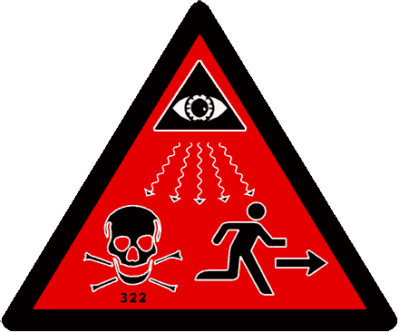

History. This publication is a rapid action r e v i s i o n . T h e p o r t i o n s a f f e c t e d b y t h i s r a p i d a c t i o n r e v i s i o n a r e l i s t e d i n t h e summary of change. S u m m a r y . T h i s r e g u l a t i o n p r o v i d e s guidance for establishing and managing civilian inmate labor programs on Army installations. It provides guidance on establishing prison camps on Army installat i o n s . I t a d d r e s s e s r e c o r d k e e p i n g a n d reporting incidents related to the civilian Inmate Labor Program and/or prison camp administration. Applicability. This regulation applies to unit or field operating agency of the proponent agency in the grade of colonel or the civilian equivalent. Activities may request a waiver to this regulation by prov i d i n g j u s t i f i c a t i o n t h a t i n c l u d e s a f u l l analysis of the expected benefits and must i n c l u d e f o r m a l r e v i e w b y t h e a c t i v i t y ' s senior legal officer. All waiver requests will be endorsed by the commander or s e n i o r l e a d e r o f t h e r e q u e s t i n g a c t i v i t y and forwarded through their higher headquarters to the policy proponent. Refer to AR 2530 for specific guidance. Army management control process. Blank Forms) directly to Assistant Chief o f S t a f f f o r I n s t a l l a t i o n M a n a g e m e n t (DAIMMD), 600 Army Pentagon, Washington, DC 203100600. Distribution. This publication is available in electronic media only and is intended for command levels A, B, C, D, and E for the Active Army, Army National Guard of the United States, and the U.S. Army Reserve.
k. Installation commanders will (1) Comply with 18 USC 4125(a) and other applicable laws governing civilian inmate labor, EO 11755, and all provisions of this regulation. (2) Submit the following through command channels to Headquarters, Installation Management Activity (SFIMPL), 2511 Jefferson Davis Highway, Taylor Building, Arlington, VA 222023926: (a) Memoranda of agreement and Inmate Labor Plans to establish civilian inmate labor programs. (b) Proposals to establish civilian inmate prison camps. (c) Written notification of termination of civilian inmate labor programs. (d) Revisions to existing memoranda of agreement requiring changes to Army Civilian Inmate Labor Program policy. (e) Requests for guidance on any

Civilian Inmate Labor Program situation that is not addressed in this regulation. (3) Annually review their civilian inmate labor programs to determine if their programs continue to generate cost avoidance.
(4) Annually review their civilian inmate labor programs against the key management controls identified in appendix D. (5) Report all contacts with State or local corrections system on possible use of civilian inmate labor, facilities, land, or installation through command channels to Headquarters, Installation Management Activity (SFIMPL), 2511 Jefferson Davis Highway, Taylor Building, Arlington, VA 222023926. 15. Civilian inmate labor programs a. Civilian inmate labor programs benefit both the Army and corrections systems by (1) Providing a source of labor at no direct labor cost to Army installations to accomplish tasks that would not be possible otherwise due to the manning and funding constraints under which the Army operates. (2) Providing meaningful work for inmates and, in some cases, additional space to alleviate overcrowding in nearby corrections facilities. (3) Making costeffective use of buildings and land not otherwise being used. b. Except for the 3 exceptions listed in paragraph 21d below, installation civilian inmate labor programs may use civilian inmate labor only from Federal corrections facilities located either off or on the installation. c. Keys to operating an effective civilian inmate labor program on Army installations include (1) Establishing a comprehensive lease agreement, interservice, interagency, and/or
interdepartmental support agreement
(ISA), and/or memoranda of agreement with the corrections facility. (2) Developing a cooperative working relationship between installation personnel and corrections facility personnel. (3) Working closely with installation government employee labor unions to ensure union leaders understand the program and have current information on program status. (4) Training all installation personnel involved in the operation or administration of the program frequently. (5) Developing a public affairs plan informing the installation and the surrounding local community of the program and work projects assigned to civilian inmate labor. 16. The process Figure 11 diagrams the Army Civilian Inmate Labor Program process. The flowchart reads top dublic affairs plan that informs the installation and the surrounding local community of the program and work projects assigned to civilian inmate labor. This will largely mitigate potential negative repercussions from using and having inmates present on the installation. Press releases involving inmates will be issued only by the corrections facility, in coordination with the installation public affairs office, as corrections facility officials are responsible for protecting the privacy and other rights of inmates. Press releases regarding the civilian inmate labor program should be coordinated with the corrections facility superintendent. One copy of the press release will be routed through command channels to HQDA, Assistant Chief of Staff for Installation Management, Plans and Operations Division (DAIMMD), and HQDA, Office of the Chief of Public Affairs, Public Communications Division (SAPAPCD). Press releases do not require HQDA approval prior to release. (1) Media representatives should not be allowed to interview inmates nor take photographs of inmates without the corrections facility's and installation public affairs office specific approval. (2) Requests for interviews or photographs of inmates should be referred to the corrections facility superintendent and the installation public affairs office. 24. Procedures for establishing installation civilian inmate labor programs Procedures for establishing installation civilian inmate labor programs apply to both offpost corrections facilities and onpost civilian inmate prison camps. a. Upon finalizing negotiations with the corrections facility, the installation commander and corrections facility superintendent will prepare a proposed memorandum of agreement, using the format at appendix B, covering all aspects of the Civilian Inmate Labor Program under consideration. This agreement will include, but is not limited to, the governing provisions in paragraph 23, above. In addition, the memoranda of agreement must include provisions for reporting serious incidents and negative media coverage, addressed in paragraphs 41 and 42, and the projected cost avoidance from using civilian inmates addressed in paragraph 43, below. b. Installations will prepare an Inmate Labor Plan governing administration and operation of the inmate labor program on the installation. This plan will include, but is not limited to, procedures for assigning inmate labor details, oversight and/or monitoring responsibilities, procedures for requesting inmate labor details, training of personnel involved with the program, required security and/or safety measures, environmental considerations, and any installation reporting requirements. Inmate Labor Plan format is determined locally. c. Memoranda of agreement and/or Inmate Labor Plans will be reviewed as needed by the installation commander and corrections facility superintendent to incorporate changes in Army Civilian Inmate Labor Program policy and other factors affecting the terms and conditions of these documents.
13. Explanation of abbreviations and terms Abbreviations and special terms used in this regulation are explained in the glossary. 14. Responsibilities a. The Assistant Secretary of the Army (Installations and Environment) (ASA(I&E)) will (1) Provide policy guidance and resolve policy issues. (2) Provide overall program direction. (3) Serve as approval authority for establishing civilian inmate labor programs and civilian inmate prison camps on Army installations. (4) Provide procedural guidance on real property acquisition, management, and disposal relating to establishing prison camps on Army installations. b. The Assistant Secretary of the Army (Financial Management and Comptroller) (ASA(FM&C)) will (1) Provide reimbursement policy guidance on interservice, interagency, and/or interdepartmental support agreements between installations and corrections facilities to establish civilian inmate prison camps on Army installations. (2) Provide reimbursement policy for civilian inmate labor utilization, other than reimbursement for inmate labor itself. (3) Review all actions pertaining to the civilian Inmate Labor Program for compliance with Army financial management guidance. c. The Chief of Public Affairs will (1) Monitor media coverage on installation civilian inmate labor programs and civilian inmate prison camps on Army installations. (2) Coordinate all proposed media coverage of potential national interest concerning the Army civilian Inmate Labor Program and civilian inmate prison camps with the Assistant Chief of Staff for Installation Management (ACSIM) prior to release. d. The Assistant Secretary of the Army (Manpower and Reserve Affairs) (ASA(M&RA)) will (1) Provide policy guidance on inmate labor utilization issues pertaining to existing inhouse resources. (2) Provide policy guidance and procedures for apprising installation government employee labor unions of proposals to use civilian inmate labor and, for existing installation civilian inmate labor programs, apprising these unions of changes in agreements with corrections facilities governing inmate use. e. The Assistant Chief of Staff for Installation Management will (1) Execute the Army civilian Inmate Labor Program. (2) Develop and implement policy and procedures for using civilian inmate labor and establishing civilian inmate prison camps on Army installations. (3) Serve as the focal point for staff coordination on issues pertaining to the civilian Inmate Labor Program and/or civilian inmate prison camps. (4) Conduct a program review in accordance with AR 112 once every 5 years. (5) Provide policy guidance on functions for which civilian inmate labor can be used. (6) Review reports of availability pertaining to granting the use of Army real property. (7) Immediately inform the Chief, Legislative Liaison of approval of civilian inmate labor programs and civilian inmate prison camps on Army installations to facilitate notification to interested members of Congress. f. The General Counsel and the Judge Advocate General will review all actions pertaining to the civilian Inmate Labor Program and civilian inmate prison camps for compliance with applicable laws and regulations.
![AAAAA
3D-iD - A Local Positioning System (LPS) that is capable of determining the 3-D location of items (and persons) within a 3-dimensional indoor, or otherwise bounded, space. The system consists of inexpensive physical devices, called 'tags' associated with people or assets to be tracked, and an infrastructure for tracking the location of each tag. [10:2657] NOTE: Related technology applications include EAS, EHAM, GPS, IRID, and RFID.
ABSORPTION - (RF propagation) The irreversible conversion of the energy of an electromagnetic WAVE into another form of energy as a result of its interaction with matter. See also ELECTRO-OPTIC PAINTING and RADAR CAMOUFLAGE. [3]
ABSORPTION HIDING - A LOW-PROBABILITY-OF-INTERCEPT technique in which the radar operates in the ABSORPTION regions of the MILLIMETER WAVE spectrum (i.e., frequencies having large values of atmospheric attenuation by oxygen and water vapor), making it difficult to detect. [4:15]
ABSORPTIVE CHAFF - CONFUSION REFLECTORS which consist of extremely thin conductors, graphite strands, or other material which will absorb electromagnetic energy. See also CHAFF. [8]
ACOUSTIC BULLET - A NONLETHAL WEAPON consisting of a high-power, very low frequency acoustic beam weapon that incapacitates by creating plasma in form to the target, generating an impact wave like that of a blunt object. It causes blunt object trauma, as opposed to that of a conventional bullet which cause ripping and tearing of the target. [10:2341] See also SONIC BULLET.
ACOUSTIC INTELLIGENCE (ACINT or ACOUSTINT) - Intelligence derived from the collection and processing of acoustic phenomena. [DoD] NOTE: Acoustic Intelligence is a component of MEASUREMENT AND SIGNATURE INTELLIGENCE (MASINT).
ACOUSTICS SIGNATURE CONTROL - The employment of materials, electronics, and platform design features intended to reduce the susceptibility of the platform to detection, tracking, and engagement by an adversary using acoustic sensors, such as SONAR. ACOUSTICS SIGNATURE CONTROL includes the use of passive and active devices, materials, features, or techniques on a platform to reduce or limit the generation or transmission of sound or vibrations. These include specially designed materials, coatings, absorbers, decouplers or damping, as well as active noise reduction or cancellation systems, and magnetic bearings. [12] See also INFRARED SIGNATURE CONTROL, LASER SIGNATURE CONTROL, MAGNETIC SIGNATURE CONTROL, MULTISPECTRAL SIGNATURE CONTROL, OPTICAL SIGNATURE CONTROL, RADIO FREQUENCY (RF) SIGNATURE CONTROL, and SIGNATURE CONTROL.
ACOUSTIC WEAPON - A device, which may or may not be a NONLETHAL WEAPON, that emits sonic frequencies causing such sensations as debilitating dizziness and motion sickness or nausea, and can also generate vibrations of body organs resulting in extreme pain, seizures, or death. [10:2730] See also HIGH POWERED ACOUSTIC WEAPON, SILENT SOUND DEVICE, THERMAL GUN. Note: Acoustic weapons may be grouped as shown below: [10:2748]
ACOUSTIC WEAPON CHARACTERISTICS
TYPE FREQUENCY TARGET EFFECTS PROPAGATION CHARACTERISTICS
Infrasound Less than 20 Hz Mild to severe discomfort; organ functional disturbance; organ disruption Ground or structure penetration Long-range propagation Non-directional
Sonic 20 Hz to 20 KHz Hearing interference; performance degradation; pain; hearing loss; tissue damage Moderate propagation and moderate directionality
Ultrasonic 20 KHz and above Possible diffuse psychological effects; pain; surface tissue damage; tissue destruction Limited propagation; highly directional
ACOUSTO-OPTIC (AO) RECEIVER - A SIGINT receiver which process signals using BRAGG CELLs. In these cells, RF signals are converted into acoustic waves which are then sampled with light beams. AO receivers share the positive features of MICROSCAN RECEIVERs, and have good signal probability of intercept (POI). [10:2561]
ACOUSTO-OPTICS - The interaction between sound and light in a crystal. This interaction modifies the light beam's amplitude, frequency, phase and direction, thus processing and revealing information carried by both the sound and the light. Acousto-optics has application in ESM for analysis of low-probability-of-intercept FREQUENCY HOPPING signals. See also BRAGG CELL. [10:29] NOTE: In a typical application, a laser beam is expanded, spatially filtered, and collimated by a set of lenses which direct the beam to a Bragg cell. Concurrently, a transducer on the cell converts the micro-wave signal into an acoustic wave that modulates the light beam, producing a separate beam for each component frequency of the signal and deflecting the beam in proportion to its frequency. A photodetector array detects each beam's position (its underlying frequency), and produces electric output indicating both the frequency and power of each component in the original microwave signal. This rapid signal processing allows accurate measurement of the signal's pulse timing and duration.
ACTIVE DENIAL SYSTEM - A NONLETHAL WEAPON (NLW) that uses pulses of electromagnetic energy to heat the water molecules in a person's skin, causing a painful burning sensation but no actual burning. [10:2883] NOTE: The ACTIVE DENIAL SYSTEM is designed to disperse disruptive crowds as far as 640 meters away without injuring the demonstrators. The radiation can penetrate clothing but will only react with skin to a depth of less than 0.4 mm. These weapons can be either hand-held, vehicle mounted, or mounted on aircraft.
ACTIVE ELECTRONIC COUNTERMEASURES - The employment of active ELECTRONIC JAMMING to prevent or degrade the use of the ELECTROMAGNETIC SPECTRUM by the enemy. Contrast with PASSIVE ELECTRONIC COUNTERMEASURES. [10:3]
ACTIVE INFRARED SENSOR - An INFRARED sensor which transmits and receives radiation. The sensor may be a COHERENT INFRARED SENSOR or an INCOHERENT INFRARED SENSOR. Contrast with PASSIVE INFRARED SENSOR. [4:6]
ADVANCED MULTI-FUNCTION RADIO FREQUENCY SYSTEM (AMRFS) - A system which consolidates, in a single aperture, the antennas required for shipboard radar, ELECTRONIC WARFARE (EW), IDENTIFICATION, FRIEND OR FOE (IFF) and communications. [10:2678]
AEROSOL - (1) (laser-maser) A suspension of small solid or liquid particles in a gaseous medium. Typically, the particle sizes may range from 100 micrometers to 0.01 micrometers or less. [3] (2) Solid, resonant-size particles dispersed in the atmosphere, and having a high index of refraction. The particles both scatter and absorb visual and laser energy so as to reduce the effectiveness of weapon systems directed by these techniques. [4:1] NOTE: The particle size and type are chosen to scatter or absorb radiation from electro-optical system targets. Some forms of aerosols can partially absorb microwave signals. [8]
AIRBORNE LASER (ABL) - A DIRECTED ENERGY WEAPON (DEW) designed to deliver a lethal LASER beam onto a ballistic missile during the highly vulnerable boost phase of flight. The system autonomously will detect and locate a missile seconds after launch using a series of INFRARED sensors that work in tandem to target the missiles. [10:2589] The ABL consists of three critical laser systems linked by mirrors. The primary mirror both gathers in light beams and focuses them outward; other mirrors reflect the laser beams, split them, sometimes into two separate beams of different wavelengths (diachronic mirrors), steer them, and, for the killing beam, shape its wave front. A megawatt CHEMICAL OXYGEN IODINE LASER (COIL) is the primary killing beam. [10:2607] See also BALLISTIC MISSILE DEFENSE (BMD).
ALL-GAS CHEMICAL LASER - A CHEMICAL LASER which creates its light by combining two specific gases: nitrogen chloride and atomic iodine. The device is expected to be relatively light in weight, operate in zero-gravity environments and possess a built-in heat rejection exhaust. [10:2854]
AMIABILITY AGENT - A NONLETHAL WEAPON consisting of an agent which causes those with whom it comes in contact to become very easily persuadable. [10:2751]
ANESTHETICS - As used in NONLETHAL WEAPONs - tranquilizers, dispensed with gas or darts, that could put people to sleep. [10:2857]
ANTENNA - That part of a transmitting or receiving system that is designed to radiate or to receive electromagnetic waves. [3] NOTE: Antennas are characterized by coverage (non-directional or directional), Gain (generally in decibels), Frequency Range, POLARIZATION (linear or circular), BANDWIDTH (narrow or wide), and type. There are many types of antennas. The table below lists some antenna types. [10:2688]
ANTENNA TYPES
Type Typical Polarization
Biconical Vertical
Blade Vertical or Linear
Cavity Backed Spiral R & L Horizontal
Conical Spiral Circular
Conical Spiral, 4-arm Circular
Diffraction Plate Linear
Dipole Vertical
Horn Linear
Horn with Polarizer Circular
Helix, Axial Mode Circular
Helix, Normal Mode Horizontal
Linderblad Circular
Log Periodic Vertical or Horizontal
Loop Horizontal
Parabolic Dish Depends on feed
Periscope Depends on feed
Phased Array Depends on elements
Reflector Depends on elements
Swastika Horizontal
Whip Vertical
Yagi Horizontal
Antennas may also be classified into four types of fundamental operation as follows [10:2706]:
TYPES OF ANTENNA ELEMENTS
Antenna Type Properties Examples
Electrically Small Very low directivity
Low input resistance
High input reactance
Low radiation efficiency Short dipole
Small Loop
Resonant Low to moderate gain
Real input impedance
Narrow bandwidth Half-wave dipole
Microstrip patch
Broadband Low to moderate gain
Constant gain with frequency
Real input impedance
Wide bandwidth Spiral
Aperture High gain
Gain increases with frequency
Moderate bandwidth Horns
Reflectors
For a technical discussion about antennas, click . [11.2] See also SPRAY-ON ANTENNA
ANTIMATTER PARTICLE BEAM (APB) - A DIRECTED ENERGY WEAPON (DEW) under DoD's WEAPONS SYSTEMS TECHNOLOGIES (WST). The generation, propagation and control of antimatter beams of hydrogen or its isotopes. Interaction of the APB with a target consisting of normal matter results in complete annihilation of the beam and an equal amount of normal matter in the target. [www.dtic.mil] NOTE: APBs must be charged to be accelerated, but exoatmospheric beams must be neutralized so that the repulsion of like-charged particles will not spread the beam to a noneffective power density before it reaches the target. APBs potentially have only exoatmospheric, or space, applications because the atmosphere wuld erode them significantly. See also CHARGED PARTICLE BEAM (CPB), GAMMA-RAY LASER (GRASER), HIGH POWER MICROWAVE/RADIO FREQUENCY (HPM/RF), KINETIC ENERGY WEAPON (KEW) and NEUTRAL PARTICLE BEAM (NPB).
ANTI-PERSONNEL BEAM WEAPON (APBW) - A NONLETHAL WEAPON LASER device, similar to the TASER, designed to stun a person or freeze him in his tracks. In place of the TASER's wires to carry the stun charge, the APBW employs two ultraviolet light laser beam to create two charged channels of ionized air that carry the disabling electrical current for a distance of up to 100 meters. [10:2952] See also VEHICLE-DISABLING WEAPON (VDW). NOTE: It is claimed that while the APBW current had a repetition rate sufficiently rapid to tetanize ( Tetanization is the stimulation of muscles fibers at a frequency which merges their individual contractions into a single sustained contraction. ) muscle tissue, it is insufficient to affect the muscles of the heart and diaphragm. In addition, the APBW will not incur retinal damage because the cornea absorbs all the ultraviolet radiation at the wavelengths used. Moreover, the beams are too weak to produce photokeratis ( corneal inflammation ) unless they are directed at the eyes for several minutes.
ANTIREFLECTION OVERCOAT - A coating of material, such as poly-tetrafluoroethylene, which reduces the reflectance of a material at infrared wavelengths. [10:4] See also RADAR CAMOUFLAGE.
ANTI-SURVEILLANCE WARFARE - Military action intended to reduce the effectiveness of enemy surveillance operations. []
ANTI-TARGETING WARFARE - See COUNTER-TARGETING.
ANTI-TRACTION LUBRICANT A NONLETHAL WEAPON consisting of a lubricant applied to roadways which reduces friction of the surface and adversely affects the traction of vehicle wheels and tracks on the treated surfaces such as roads, runways, and tracks. [10:2754] A Teflon-type environmentally neutral lubricant that make footholds or traction exceedingly difficult. In this application, the product can be used to deny access to areas or cover a unit's flank. [10:2857]
ARMOR MATERIALS - That category of MATERIALS TECHNOLOGY which addresses materials specifically designed to protect equipment and personnel from enemy threats. Armor materials include metals and related composites (e.g., titanium diboride), ceramics and related composites (e.g., crystal whiskers in a bonded matrix), organic fibers and composites (e.g., arrays of woven cloth), and layered combinations of these. [12]
AUTONOMOUS TARGET RECOGNITION (ATR) - The ability of a weapon to locate and engage a target without data updates or guidance from external sources. ATR involves automated high speed signal or imaging processing, rapid data base management and high fidelity classification and correlation. Contrast with MAN-IN-THE-LOOP SYSTEMS. See also BRILLIANT AMMUNITION, SMART WEAPON. [10:31] NOTE: There are three primary components of ATR: algorithms, processors, and sensor technology.
BBBBB
BEAM-PLASMA DEVICE - A broadband high-powered microwave generator that employs the interaction of relativistic electrons and plasma. See also FREE-ELECTRON LASER; GYROTRON; VIRTUAL-CATHODE OSCILLATOR. [10:16] NOTE: Beam-plasma devices have potential for use as DIRECTED ENERGY WEAPONs.
BEAMWIDTH (BEAM WIDTH) - The angle between the directions, on either side of the axis, at which the intensity of the radio frequency field drops to one-half the value it has on the axis. [1] Synonymous with half-power beam width. See also BEAM DIAMETER.
BEAN BAG BATON - A NONLETHAL WEAPON consisting of an aluminum baton which utilizes an air cartridge to fire a bean bag filled with lead shot at 300 ft/sec. [10:2745]
BEEPS AND SQUEAKS - A tongue-in- cheek reference to ELECTRONIC WARFARE. []
BEHAVIORAL BIOMETRICS - BIOMETRICS which include voiceprints, handwritten signatures and key stroke/signature dynamics. [10:2622]
BINARY-PHASE-CODED CONTINUOUS-WAVE RADAR - A LOW PROBABILITY-OF-INTERCEPT (LPI) RADAR which has a PSEUDORANDOM phase-coded MODULATION on a transmitted CONTINUOUS-WAVE (CW) SIGNAL. [10:2859]
BIOMATERIALS - That category of MATERIALS TECHNOLOGY which addresses materials that function in biological application (e.g., medical implants) or are derived through biological types of processes (e.g., spider silk). [12]
BIOMETRIC DEVICE - A device which identifies people through unique body characteristics. [] NOTE: Biometric devices include those which can identify hand-geometry, fingerprints, retinal patterns, signatures, and voice-prints.
BIOMETRICS - The automatic identification of a person based on his/her physiological or behavioral characteristics. Refer to the table below for a list of biometric technologies . Biometrics fall into two categories: PHYSIOLOGICAL BIOMETRICS and BEHAVIORAL BIOMETRICS. [10:2622] NOTE: (1) The person to be identified is required to be physically present at the point-of-identification.
BIOMETRIC TECHNOLOGIES
Dynamic Signature Verification (DSV)
Face Geometry
Finger Scan
Hand Geometry
Iris Scan
Keystroke Dynamics
Speaker Verification
Retina Scan
BIOMIMETICS - Techniques to develop novel synthetic materials, processes and sensors through advanced understanding and exploitation of design principles found in nature. [10:2592] NOTE: An example includes genetically engineered high-strength silk fibers. These fibers, which are about 5 microns in diameter, are 100-percent tougher than Kevlar aramid fibers. See also NANOSCIENCE
BIORADAR - A RADAR device which helps in searches for buried persons. It can measure heart frequency and breathing up to 3 meters under snow and rubble. It can also detect persons in buildings from the outside, even through stone walls up to 6 meters thick.
BLACK PROGRAM - A highly classified weapon system acquisition program, generally requiring special security clearances and facilities for contractors and others involved with the program.
BLINDING LASER - A NONLETHAL WARFARE weapon consisting of a laser intended to overload, destroy or degrade optics or target-acquisition electronics from the air, sea or land. [10:2648] See also ANTI-AIR LASER.
BLUNT IMPACT MUNITIONS - NONLETHAL WEAPON munitions consisting of rubber balls, rubber pellets, finned rubber projectiles, bean bags, shot bags (e.g., SOFT RAGS, STINGBAGS), etc. which are fired at low velocity, with a range of 10-50 meters. [10:2745]
BOLO - A NONLETHAL WEAPON consisting of a shotgun round holding three rubber projectiles connected by 5.5 foot high-strength cords. The bolo is designed for use against fleeing target individuals, where a target hit by any of the balls will cause the other balls to wrap the cord around the legs of the individual.
BOUNDING NON-LETHAL MUNITION (BNLM) - A NONLETHAL WEAPON tactical area denial munition for site security and perimeter defense. The payloads produce an audible alert signal to friendly forces within a range of 200 meters. [10:2857]
BRAGG CELL - A thin slab of transparent crystal (such as tellurium oxide) with one or more piezoelectric transducers attached. A microwave signal excites the transducer to create a sound wave in the crystal at the microwave's frequency. The PIEZOELECTRIC EFFECT generated by the sound wave changes the crystal's optical index of refraction, also at the microwave frequency. These changes in the optical index diffract a portion of the incident light beam so that two beams emerge from the crystal - an un-diffracted beam exiting at the angle of entry, and a diffracted beam exiting at an angle proportional the frequency of the sound wave. [10:29*] See also ACOUSTO-OPTICS.
BRAIN-COMPUTER INTERFACE (BCI) - A system which allows the user to interact with a VIRTUAL-REALITY environment using brain waves.
BREAK LOCK - In a TERMINAL DEFENSE situation: The condition where a homing sensor or fuze loses the target which it has had a lock-on. If so configured, the sensor will revert to a search mode to regain a lock-on its target. Contrast with BREAK TRACK.
BREAK TRACK - In a situation other than TERMINAL DEFENSE: The condition where a tracking or acquisition sensor loses the target which it has been tracking. If so configured, the sensor will revert to a search mode to re-locate its target. Contrast with BREAK LOCK.
BROADBAND MICROWAVE ABSORPTION - A decrease in reflection of microwaves, caused by coatings of material whose electrical and magnetic properties have been altered to allow ABSORPTION of microwave energy at multiple frequencies. [4:17] Contrast with RESONANT MICROWAVE ABSORPTION.
BROADBAND NOISE - In acoustics, the noise generally produced by a ship's motion through the water and the cavitations of its propeller across a wide BANDWIDTH usually in the lower- frequency spectrum. [10:126*] Contrast with NARROWBAND NOISE. NOTE: Generally, broadband noise provides longer-range detection opportunities than narrowband noise, but is less useful for identification.
BUCKMINSTERFULLERENES - A class of materials that stems from the production of substantial quantities of Carbon 60, and used in the design of devices at the molecular level ( nanostructures that bring engineering towards the atomic level ). [10:2386] See also FULLERENE.
BUCKY TUBE - A carbon 'wire' of molecular diameter designed to connect molecular components, such as ROTAXANES. Bucky tubes possess structural rigidity and demonstrate remarkably consistent electrical behavior. In fact, they exhibit essentially metallic behavior and conduct via well-separated electronic states, remaining coherent over the distances needed to interconnect various molecular computer components. [10:2700] Also called QUANTUM WIRE or CARBON NANOTUBE. See also FULLERENE, MOLECULAR ELECTRONICS. NOTE: Bucky tubes have 10 to 100 times the strength of steel at a fraction of the weight.
CCCCC
CALMATIVE AGENT - A NONLETHAL WEAPON consisting of a chemical agent, sometimes called a SLEEP AGENT, that is transmitted through the skin and into the bloodstream. [10:2754]
CARRIER WAVE (CW) - A WAVE having at least one characteristic that may be verified from a known reference value by MODULATION. Also called CARRIER. [3]
CARNIVORE - A Federal Bureau of Investigation (FBI) e-mail wiretapping system consisting of a PACKET SNIFFER used to locate records (and only those records) in e-mail messages and INTERNET based telephony for which the FBI has received a court order. [10:2856] NOTE: (1) The origin of the codename 'carnivore' is explained as 'Carnivore chews all the data on the network, but it actually eats the information authorized by a court order.' (2) There is (2000) some controversy about the privacy implications of carnivore.
CHAMELEON CAMOUFLAGE - Paint or uniforms that can change color to blend with the surrounding terrain. Tiny sensors and NANOELECTRONIC devices provide the color-change capability. Although intended to help minimize visibility, chameleon camouflage could also be adapted for application in the near-visual SPECTRUM, masking INFRARED SIGNATURES or other emissions. [10:2751]
CHARGED PARTICLE BEAM (CPB) - A DIRECTED ENERGY WEAPON (DEW) under DoD's WEAPONS SYSTEMS TECHNOLOGIES (WST). The generation, propagation and control of high-intensity electron beams designed to incapacitate the target through shock or thermal effects. [www.dtic.mil] See also ANTIMATTER PARTICLE BEAM (APB), GAMMA-RAY LASER (GRASER), HIGH POWER MICROWAVE/RADIO FREQUENCY (HPM/RF), KINETIC ENERGY WEAPON (KEW) and NEUTRAL PARTICLE BEAM (NPB).
CHEMICAL LASER - A GAS-LASER DIRECTED ENERGY WEAPON which provided early lethality demonstrations, but is being supplanted by other laser devices. [5:1] See also CHEMICAL OXYGENIODINE (COIL) LASER, DEUTERIUM FLUORIDE (DF) LASER, EXCIMER LASER, FREE-ELECTRON LASER HIGH ENERGY LASER, HYDROGEN FLUORIDE (HF) LASER, X-RAY LASER.
CHEMICAL OXYGEN IODINE (COIL) LASER - The COIL laser differs from the HF LASER and DF LASER in that the excited iodine atom responsible for the lasing radiates only a single line at 1.325µm. This short wavelength reduces diffraction effects that limit the utility of other CHEMICAL LASERs. The COIL laser has been chosen for the AIRBORNE LASER (ABL) missile defense system. [10:2607]
CHIRALITY - The property of a material that enables it to polarize, FILTER, or shield ELECTROMAGNETIC RADIATION. Chiral materials may have use in stealth applications because they are broadband, and are effectively invisible over a wide range of frequencies. [10:70]
CHIRP - A technique for pulse compression which uses frequency modulation (usually linear) during the pulse. [3]
CLASSIFICATION - See TARGET CLASSIFICATION.
CLICKSTREAM ANALYSIS - The process of collecting, analyzing, and reporting aggregate data about which pages visitors visit on a Web sit, and in what order - all determined from the sequence of mouse clicks made by the visitor (i.e., the clickstream). [From searchcrm.com] Also called CLICKSTREAM ANALYTICS. NOTE: There are two levels of clickstream analysis: (1) traffic analysis, which operates at the SERVER level by collecting clickstream data related to the path the user takes when navigating through the site - the number of pages served to the user, length of time taken for pages to load, the frequency of use of the browser's back or stop button, and the amount of data transmitted before a user moves on; and (2) E-commerce analysis, which is the use of clickstream data to determine the effectiveness of the site as a channel-to-market by quantifying the user's behavior while on the Web site, such as which pages the user lingers on, what the user puts in or takes out of their shopping cart, and what items the user purchases.
CNN EFFECT - A term which denotes the leading of public opinion due to quick publicity around the world of a given military action, especially by U.S. forces. [10:2722*]
CODED FLUID - A fluid containing synthetic DNA-like properties which are readable by specialized scanners to positively identify the substance deposited by the liquid. [] Also called CODED LIQUID. See also SMART WATER; TAGGANT. NOTE: CODED FLUIDs are used to mark assets for later identification, for example the identification of items recovered from a theft.
CODED LIQUID - See CODED FLUID.
COMBAT IDENTIFICATION (CID) - The capability to differentiate potential targets as friend, foe, or neutral in sufficient time, with high confidence, and at the requisite range to support weapon release and engagement decisions. [10:2941]
COMBAT IDENTIFICATION FOR DISMOUNTED SOLDIERS (CIDDS) - The CIDDS consists of two parts: a weapon-mounted laser emitter and a helmet-mounted radio receiver/transmitter system. The laser emitter, which fits on the end of the soldier's weapon, sends out an encrypted signal that can be decoded only by other CIDDS-interoperable equipment. The helmet system receives incoming CIDDS queries and checks their validity. If valid, the CIDDS sends back an encrypted response via the omni-directional antenna mounted on the helmet. CIDDS can identify standing targets at a range of over 110 meters, and prone targets from 900 in daylight and 700 meters at night. [10:2694] See also COMBAT IDENTIFICATION (CID), IDENTIFICATION, FRIEND OR FOE (IFF),and LAND WARRIOR (LS) SYSTEM.
COMBUSTION ALTERATION TECHNOLOGY (CAT) - A NONLETHAL WEAPON technology which develops agents that can change the viscosity or combustion characteristics of fuel to degrade engine performance or effect near instantaneous engine failure. [10:2754] See also COMBUSTION INTERFERENT.
COMBUSTION INTERFERENT - A NONLETHAL WEAPON employing COMBUSTION ALTERATION TECHNOLOGY (CAT) which exposes a diesel engine to a concentration (3% or more) of acetylene, causing severe pre-ignition quickly followed by engine self-destruction. []
COMMAND, CONTROL, COMMUNICATIONS, COMPUTERS, AND INTELLIGENCE (C4I) - A SPACE AND ELECTRONIC WARFARE (SEW) warfare support discipline consisting of a technological, organizational, and doctrinal system that provides three functions: the doctrinal delegation of forces (i.e., command and control); information management (i.e., communications and computers); and intelligence dissemination. [10:2505]
COMMON ACCESS CARD (CAC) - A 'smart' identification card that features a data-storage chip, magnetic strip and bar codes, allowing for digital identification, encryption and DIGITAL SIGNATURE capabilities through the use of private key infrastructure technology. [10:2916] NOTE: The CAC is similar in size and functions to a credit card. Embedded in the card is a small computer chip that stores information, along with a magnetic strip that allows information in the chip to be electronically scanned and interfaced with other computer systems.
COMPRESSIVE RECEIVER - See MICROSCAN RECEIVER.
CONFUSION WEAPON A NONLETHAL WEAPON which modifies the behavior pattern of the targeted individual (TI).
CONTINUOUS ASSISTED PERFORMANCE (CAP) - A DARPA program (2002) to identify approaches that extend the performance envelope of the warfighter, in particular, by preventing the effects of sleep deprivation over an extended performance of time, nominally set at seven days. [10:2955] See also ENERGY HARVESTING, PERSISTENCE IN COMBAT (PIC), WATER HARVESTING.
CONTINUOUS WAVE (CW) - Waves, the successive oscillations of which are identical under steady state conditions. [3]
CONTINUOUS WAVE RADAR - A radar which transmits continuously (therefore requiring two antennas) and uses frequency shift to resolve moving targets. An example is the DOPPLER RADAR. [10:2] Synonymous with CW RADAR. NOTE: A CW radar uses continuous signals rather than pulses, which means that it must have multiple antennas with adequate isolation to keep the transmitter from interfering with its receiver(s). [10:2922]
CONTROL OF SPACE - The ability to assure access to space, freedom of operations within the space medium, and the ability to deny others the use of space, if required. [10:2796] NOTE: CONTROL OF SPACE implies an ability to do the following: (1) Operate in the space environment; (2) Monitor a given region of space to achieve and maintain SITUATIONAL AWARENESS; (3) Protect friendly space systems from hostile action, including unauthorized access to and exploitation of friendly space data or products; and (4) Inflict EFFECTIVE DAMAGE to hostile space systems.
COOPERATIVE TARGET IDENTIFICATION - Target identification which depends upon the collaboration of the target, such as an IFF response to a transponder signal. []
COUNTERMEASURES - That form of military science that by the employment of devices and/or techniques, has as its objective the impairment of the operational effectiveness of enemy activity. [1]
COUNTERMEASURES DETECTABILITY -- The probability that a radar system subject to a given countermeasure can detect, but not necessarily identify, the countermeasure. [] Compare with COUNTERMEASURES RECOGNITION.[]
COUNTERMEASURES RECOGNITION -- The probability that a radar system that is being subjected to a countermeasure can correctly identify the kind of countermeasure being directed against it. Compare with COUNTERMEASURES DETECTABILITY.
COUNTER-STEALTH - Measures to reduce the effectiveness of STEALTH technology applications. []
COUNTER-SURVEILLANCE - (1) Misdirect enemy surveillance so that the observed location of credible targets is different from the actual location. [4:16] (2) Efforts to deceive, degrade, evade, and attack active and passive sensors and sensor platforms used in detection and surveillance of friendly forces. [7: NWP 10-1-40] (3) A SPACE AND ELECTRONIC WARFARE (SEW) warfare discipline that targets enemy surveillance systems. It is the sum of all active and passive measures to prevent enemy surveillance of a selected area. [10:2505] NOTE: COUNTER-SURVEILLANCE includes EMISSION CONTROL (EMCON), COMMUNICATIONS SECURITY (COMSEC), and some DECEPTION and JAMMING.
COUNTER-TARGETING - (1) Efforts taken to confuse, delay, degrade, or deceive prelaunch weapons discrimination, designation, and targeting efforts. [7: NWP 10-1-40] (2) Actions taken to prevent the enemy from obtaining an accurate fire control solution by degrading, denying, delaying, or otherwise disrupting adversary weapons targeting. Counter-targeting actions are directed against weapon carrying platforms, third party targeting systems and missiles themselves prior to valid lock-on. [10:42]
COVARC VEHICLE DEFENSE - A NONLETHAL WEAPON consisting of a concealed gas dispersal system that emits gas from beneath the vehicle with control from within the vehicle. [10:2745]
COVER - Those measures necessary to give protection to a person, plan, operation, formation or installation from the enemy intelligence effort and leakage of information. Contrast with DECEPTION. See also ELECTRONIC COVER; OPERATIONAL COVER. [1] NOTE: A notion of COVER is to 'hide the real'.
CROWD DISPERSAL ROUNDS - A NONLETHAL WEAPON consisting of a munition that can stun two to three individuals simultaneously without penetrating the body by delivering a strong blow to the body. [10:2857]
CRYPTOLOGIC ELECTRONIC WARFARE SUPPORT MEASURES (CESM) - Electronic support measures intended to exploit other than radar systems. []
CRYSTAL LASER - A solid-state LASER which employs crystals as a light-emitting source. The neodymium YTTRIUM-ALUMINUM GARNET (Nd:YAG) laser is a single-wavelength laser operating at 1.06 microns, at the edge of the range in which some NIGHT VISION Goggles (NVGs) operate. Other crystal lasers include the titanium sapphire (Ti:SAF) and the chromium-doped lithium strontium aluminum fluoride (Cr:LiSrAlF) laser which emit in a broad spectral range. Through use of other optical elements in the laser system, such as a grating for wavelength selection, these can be made to lase in a narrow band. This allows near-IR color selection (tunability). Such lasers also can be made to scan through a range of output of colors, or even frequency hop, using a piezo-driven grating. [10:2559] See also DIODE LASER, DYE LASER, GAS LASER.
CURRENT PROGRAM - (system acquisition) An existing program having an initial operational capability (IOC) date that falls within the period covered by the Five Year Defense Program (FYDP). []
CUTOFF FREQUENCY - The lowest (or highest) reference frequency of a BANDWIDTH. [] See also BANDPASS FILTER.
CW - See CONTINUOUS WAVE.
DDDDD
DARPA SYNDROMIC SURVEILLANCE SYSTEM (D-S3) - A subsystem of the ENHANCED CONSEQUENCE MANAGEMENT PLANNING AND SUPPORT SYSTEM (ENCOMPASS), D-S3 provides a biosurveillance capability that tracks patients' signs and symptoms to alert epidemiologists of any new trends, such as the possible release of a bioagent. [10:2955] See also INCIDENT COMMAND MANAGEMENT SYSTEM (ICMS).
DAZZLE - Temporary loss of vision or a temporary reduction in visual acuity. See also FLASH BLINDNESS.
DECEPTIVE HOLOGRAPHIC IMAGING - The projection of an array of holographic images about certain locations to deceive the adversary into misallocation of resources, attention, and/or effort around the present operation. [10:2751]
DEFERENCE TONES - A NONLETHAL WEAPON consisting of sophisticated arrays that can project a voice, or other sound, to a particular location so that the sound can only be heard at that particular location. [10:2754]
DELAYED-ACTION AGENT - A NONLETHAL WEAPON consisting of a nonlethal agent (e.g. CALMATIVE AGENT) that has a controlled delay time before becoming effective. [10:2751]
DESTRUCTIVE ELECTRONIC WARFARE - Those EW actions that are planned to damage or destroy enemy personnel, equipment, or facilities. [7:CJCS MOP 6, APPENDIX B]
DEUTERIUM FLUORIDE (DF) LASER - The DF laser is chemically the same as the HYDROGEN FLUORIDE (HF) LASER. However, the increased mass of heavy hydrogen deuterium, shifts the laser wavelengths to 3.5 µm to 4 µm. This range is superior to the HF laser range for transmission through the atmosphere. [10:2607] See also MID INFRARED CHEMICAL LASER (MIRACL).
DEVELOPING CRITICAL TECHNOLOGIES (DCT) - Technologies that will produce increasingly superior performance of military systems or maintain a superior capability more affordably. [www.dtic.mil/mctl] See also WEAPONS SYSTEMS TECHNOLOGIES (WST), MILITARILY CRITICAL TECHNOLOGIES LIST
DIFFERENCE ACOUSTIC WAVE GENERATION SYSTEM (DAWGS) - A NONLETHAL ACOUSTIC WEAPON consisting of electro-pneumatic acoustic generators which produce a high power acoustic beam with precise frequency control. [10:2731]
DIGITAL MODULAR RADIO (DMR) -- A reprogrammable radio that permits the operator to instantly change the device's bandwidth, modulation and security waveforms with software commands. The digital modular radio can also function as a router, moving voice, data and video over a wide variety of wireline and wireless paths. Users can reprogram the radio through a Windows-like interface from a personal computer, or remotely over wireless and wireline, or over Internet pathways. [10:2661] Also called SOFTWARE REPROGRAMMABLE RADIO.
DIGITAL RADAR - A radar in which system control and signal processing are effected by digital computer systems. [10:2389] Contrast with ANALOG RADAR.
DIGITAL RADIO FREQUENCY MEMORY (DRFM) - An electronic device consisting of a random access memory, analog-to-digital converters, digital-to-analog converters, and associated circuitry which provides the ability to capture threat emissions and to generate precise replicas for transmission at a later time. [4:18]
DIGITAL RADIO FREQUENCY TAGS (DRaFT) - Lightweight RF tags worn by personnel and placed on unattended ground sensors and other units that will permit sensors such as radars to track the identification and location of friendly units. [10:2955]
DIODE - (1) A VACUUM TUBE containing two elements: CATHODE and ANODE (plate). [] (2) A semiconductor device having two terminals and exhibiting a non-linear voltage-current characteristic. [3*]
DIODE LASER (DL) - A LASER in which a semiconductor is used as the light-emitting source. The choice of semiconductor material determines the wavelength of the output light, with very little tunability permitted for a given semiconductor material. [10:2559] See also CRYSTAL LASER, DYE LASER, GAS LASER. NOTE: Unlike other lasers, DIODE LASERs have no energy storage states, but they can be made very small, yet powerful.
DIRECT FINGER READER (DFR) - A BIOMETRIC DEVICE, placed on a peripheral (e.g., keyboard or mouse), which will allow usage of the peripheral only by users whose fingerprints are on file in the system's database of authorized users. [10:2874]
DIRECTED ENERGY (DE) - An umbrella term covering technologies that relate to the production of a beam of concentrated electromagnetic energy or atomic or subatomic particles. [7:CJCS MOP 6, APPENDIX B] NOTE: Directed energy is one of DoD's WEAPONS SYSTEMS TECHNOLOGIES, and, with Kinetic Energy (KE) Systems Technology, comprises the following:
DIRECTED ENERGY (DE) AND KINETIC ENERGY (KE) SYSTEMS TECHNOLOGY
CHARGED PARTICLE BEAM (CPB)
NEUTRAL PARTICLE BEAM (NPB)
ANTIMATTER PARTICLE BEAM (APB)
GAMMA-RAY LASER (GRASER)
KINETIC ENERGY WEAPON (KEW)
HIGH POWER MICROWAVE/RADIO FREQUENCY (HPM/RF)
DIRECTED ENERGY DEVICE - A system using DIRECTED ENERGY (DE) primarily for a purpose other than as a weapon. Directed energy devices may produce effects that could allow the device to be used as a weapon against certain threats, for example, laser rangefinders and designators used against sensors that are sensitive to light. [7:CJCS MOP 6, APPENDIX B]
DIRECTED ENERGY WARFARE (DEW) - Military action involving the use of DE weapons, devices, and countermeasures to either cause direct damage or destruction of enemy equipment, facilities, and personnel, or to prevent hostile use of the electromagnetic spectrum through damage, destruction, and disruption. It also includes actions taken to protect friendly equipment, facilities, and personnel and retain friendly use of the electromagnetic spectrum. [7:CJCS MOP 6, APPENDIX B]
DIRECTED ENERGY WEAPON (DEW) - (1) A system using DIRECTED ENERGY (DE) primarily as a direct means to damage or destroy enemy equipment, facilities, and personnel. [1] (2) A HARD-KILL ECM weapon employing directed energy, such as PARTICLE BEAM, HIGH ENERGY LASER, LASER ZAPPER, high powered microwaves, etc. []
DIRECTED STICK RADIATOR (DSR) - A portable battery-operated NONLETHAL WEAPON that uses a highly focused and intense acoustic pressure wave to disorient and disable targeted individuals up to 100 yards away. [American Technology Corp. press release 10/30/2001] NOTES: (1) The DSR causes no lasting effects and can be safely used in aircraft without fear of puncturing the fuselage. (2) The DSR could also be used for animal control. (3) The DSR also has application in secure communications and psychological warfare. In secure communications, the DSR would work as a directional loudspeaker, whereby messages could be sent to individuals in a crowd without disturbing or alerting others. [10:2946]
DIRECT EW SUPPORT - Mission support in which EW platforms accompany protected units, e.g., strike aircraft. See also ACCOMPANYING JAMMING. Contrast with STAND-IN EW SUPPORT, STAND-OFF EW SUPPORT. [10:127*]
DIRECTION FINDING (DF) - See RADIO DIRECTION FINDING.
DISORIENTATION DEVICE - NONLETHAL WEAPON ammunition which, upon impact, inflicts an electric shock that potentially causes disorientation of the target individual. [10:2745]
DISSIMILAR SOURCE INTEGRATION - The integration of information or data from diverse sources, e.g., RADAR, IDENTIFICATION, FRIEND OR FOE (IFF), ELECTRONIC WARFARE (EW), acoustic, visual, etc.... []
DNA CRYPTOGRAPHY - A cryptographic technique in which each letter of the alphabet is converted into a different combination of the four bases that make up the human deoxyribonucleic acid (DNA). A piece of DNA spelling out the message to be encrypted is then synthesized, and the strand is slipped into a normal fragment of human DNA of similar length. The end result is dried out on paper and cut into small dots. As only one DNA strand in about 30 billion will contain the message, the detection of even the existence of the encrypted message is most unlikely. [10:2815]
DOPPLER EFFECT - The effective change of frequency of a received signal due to the relative velocity of a transmitter with respect to a receiver. [3]
DOPPLER RADAR - A radar which utilizes the Doppler effect to determine the radial component of relative radar target velocity or to select targets having particular radial velocities. [3]
DOPPLER RESOLUTION -- The minimum difference in Doppler that permits target resolution among multiple contacts. []
DOPPLER SHIFT - The magnitude of the change in the observed frequency of a WAVE due to the DOPPLER EFFECT. The unit is the HERTZ. [3] For additional discussion, click . [11.2]
DOUBLER - With respect to LASERs, certain non-linear crystals which oscillate at the frequency of the input laser and also at a at a harmonic of twice that of the input laser's frequency. For example, with the input of a 10.6 micron laser light (FAR INFRARED), the output of a doubler will also include a 5.3 micron (MID INFRARED) [10:2559] See also OPTICAL PARAMETRIC OSCILLATOR, TRIPLER.
DRY-ICE WEAPON - A NONLETHAL WEAPON consisting of a dry-ice bomb that incapacitates subjects by overwhelming them with CO2 at concentrations above 15% by volume. [10:2745] NOTE: Because high concentrations of CO2 can be lethal, oxygen must be available to treat the affected individuals as soon as possible.
DYE LASER - A LASER in which the emitting element is a liquid. [10:2559] See also CRYSTAL LASER, DIODE LASER, GAS LASER. NOTE: Dyes can be toxic and combustible and have a relatively short operating life.
EEEEE
E-M CHART - See ENERGY-MANEUVERABILITY DIAGRAM.
EAVESDROPPING - See PROMISCUOUS MODE.
ECHELON - An intelligence global surveillance network for intercepting and processing the world's communications using numerous satellites, microwave listening stations and subsurface assets. []
EFFECTIVE DAMAGE - That damage necessary to render a target element inoperative, unserviceable, nonproductive, or uninhabitable. [1]
ELECTRICAL STUN DEVICE - A NONLETHAL WEAPON which stuns target individuals with a high voltage, very low current, short duration electric shock that incapacitates the individual. [10:2745]
ELECTROLUMINESCENCE - (1) The emission of light from a phosphor excited by an electromagnetic field. (2) Nonthermal conversion of electrical energy into light, such as in a light-emitting diode. [3*]
ELECTROLUMINESCENT (EL) DISPLAY - An optoelectronic device with a multiplicity of electric ports, each capable of independently producing an optic output from an associated electroluminator element. [3]
ELECTROMAGNETIC BOMB - See ELECTROMAGNETIC WEAPON.
ELECTROMAGNETIC COMPATIBILITY (EMC) - (1) The ability of a device to function satisfactorily in its ELECTROMAGNETIC ENVIRONMENT without introducing intolerable disturbance to that environment (or to other devices). [3] (2) The ability of systems, equipment, and devices that utilize the electromagnetic spectrum to operate in their intended operational environments without suffering unacceptable degradation or causing unintentional degradation of electromagnetic radiation or response. It involves the application of sound electromagnetic spectrum management; system, equipment, and device design configuration that ensures interference-free operation; and clear concepts and doctrines that maximize operational effectiveness. [7:CJCS MOP 6, APPENDIX B]
ELECTROMAGNETIC DECEPTION - The deliberate radiation, re-radiation, alteration, suppression, absorption, denial, enhancement, or reflection of electromagnetic energy in a manner intended to convey misleading information to an enemy or to enemy electromagnetic-dependent weapons, thereby degrading or neutralizing the enemy's combat capability. Among the types of electromagnetic deception are: a. Manipulative Electromagnetic Deception -- Actions to eliminate revealing, or convey misleading, electromagnetic telltale indicators that may be used by hostile forces. b. Simulative Electromagnetic Deception -- Actions to simulate friendly, notional, or actual capabilities to mislead hostile forces. c. Imitative Electromagnetic Deception -- The introduction of electromagnetic energy into enemy systems that imitates enemy emissions. [7:CJCS MOP 6, APPENDIX B]
ELECTROMAGNETIC ENVIRONMENT - The resulting product of the power and time distribution, in various frequency ranges, of the radiated or conducted electromagnetic emission levels that may be encountered by a military force, system, or platform when performing its assigned mission in its intended operational environment. It is the sum of ELECTROMAGNETIC INTERFERENCE; ELECTROMAGNETIC PULSE; HAZARDS OF ELECTROMAGNETIC RADIATION TO PERSONNEL, ORDNANCE, AND VOLATILE MATERIALS; and natural phenomena effects, such as lightning and aurora. [1]
ELECTROMAGNETIC ENVIRONMENT ALLOCATION - The process of assigning spectral regions to sensors, active radiation devices, and reflectors in order to regulate emissions, minimize mutual interference, and carry out the force EMISSION CONTROL (EMCON) plan. []
ELECTROMAGNETIC ENVIRONMENTAL EFFECTS (E3) - The impact of the ELECTROMAGNETIC ENVIRONMENT upon the operational capability of military forces, equipment, systems, and platforms. It encompasses all electromagnetic disciplines, including ELECTROMAGNETIC COMPATIBILITY/ELECTROMAGNETIC INTERFERENCE; ELECTROMAGNETIC VULNERABILITY; ELECTROMAGNETIC PULSE; ELECTRONIC COUNTER-COUNTERMEASURES; HAZARDS OF ELECTROMAGNETIC RADIATION TO PERSONNEL, ORDNANCE AND VOLATILE MATERIALS; and natural phenomena effects of lightning and PRECIPITATION STATIC. []
ELECTROMAGNETIC INTERFERENCE (EMI) - Any electromagnetic disturbance that interrupts, obstructs, or otherwise degrades or limits the effective performance of electronics/electrical equipment. It can be induced intentionally, as in some forms of electronic warfare, or unintentionally, as a result of spurious emissions and responses, intermodulation products, and the like. [1]
ELECTROMAGNETIC INTRUSION - The intentional insertion of electromagnetic energy into transmission paths in any manner, with the objective of deceiving operators or of causing confusion. See also INTRUSION. [1]
ELECTROMAGNETIC JAMMING - The deliberate radiation, re-radiation, or reflection of electromagnetic energy for the purpose of preventing or reducing an enemy's effective use of the ELECTROMAGNETIC SPECTRUM, and with the intent of degrading or neutralizing the enemy's combat capability. [7:CJCS MOP 6, APPENDIX B] See also ELECTRONIC JAMMING. Listen to various electronic jamming signals: Bagpipes; Crypto Spoofing; FSK Spoofing; Modulated White Noise; Random Tones; Sine Wave (1 kHz); Square Wave (500 Hz); Stepped Tones; Swept Tones; Tone Jamming; White Noise.
ELECTROMAGNETIC PULSE (EMP) - The electromagnetic radiation from a nuclear explosion caused by Compton-recoil electrons and photoelectrons from photons scattered in the materials of the nuclear device or in a surrounding medium. The resulting electric and magnetic fields may couple with electrical / electronic systems to produce damaging current and voltage surges. May also be caused by non-nuclear means. [1] Also called NUCLEAR MAGNETIC PULSE (NEMP). See also NEMP COUNTERMEASURES, INDUCED ELECTROMAGNETIC PULSE (IEMP), SYSTEM-GENERATED ELECTROMAGNETIC PULSE (SGEMP), FARADAY CAGE. NOTES: (1) A single high-altitude nuclear burst of 10 or more megatons at the geographic center of North America would, within 3 to 5 NANOSECONDS, disable virtually every kind of unprotected electronic and electrical circuit. Damage to crucial weapons control systems could be irreversible within the limited time available to respond. [10:2541] (2) Three notable EMP weapons that are currently ( circa 2000 ) under research are the explosive- or propellant-driven FLUX COMPRESSION GENERATORs, Magneto-HYDRODYNAMIC generators, and the VIRTUAL CATHODE OSCILLATOR.
ELECTROMAGNETIC RADIATION - Radiation made up of oscillating electric and magnetic fields and propagated with the speed of light. Includes gamma radiation, X-rays, ultraviolet, visible, and infrared radiation, and radar and radio waves. [1]
ELECTROMAGNETIC RADIATION ABSORPTION - See ABSORPTION.
ELECTROMAGNETIC RADIATION HAZARDS (RADHAZ) - Hazards caused by a transmitter / antenna installation that generates ELECTROMAGNETIC RADIATION in the vicinity of ordnance, personnel, or fueling operations in excess of established safe levels or increases the existing levels to a hazardous level. These hazards will exist when an electromagnetic field of sufficient intensity is generated to: a. Induce or otherwise couple currents and/or voltages of magnitudes large enough to initiate electro-explosive devices or other sensitive explosive components of weapon systems, ordnance, or explosive devices. b. Cause harmful or injurious effects to humans and wildlife. c. Create sparks having sufficient magnitude to ignite flammable mixtures of materials that must be handled in the affected areas. [1] Synonymous with EMR Hazards, and HAZARDS OF ELECTROMAGNETIC RADIATION TO PERSONNEL, ORDNANCE, AND VOLATILE MATERIAL (HERO). For additional discussion, click . [11.2]
ELECTROMAGNETIC RADIATION REFLECTION - The abrupt change in direction of an electromagnetic WAVE at an interface between two dissimilar media so that the wave returns into the medium from which it originated. See also SKIN ECHO. [3]
ELECTROMAGNETIC RADIATION SHIELDING - The protection of a device from electromagnetic radiation by an electromagnetic shield. The shield consists of a screen, housing, or other object, usually conducting, that substantially reduces the effect of electric or magnetic fields on one side thereof, upon devices or circuits on the other side. [3]
ELECTROMAGNETIC RADIATION SIGNATURE - (1) As applied to a radar, its specific radiation parameters that may allow it to be distinguished from all others, even of the same type. [8] (2) Radiated signals clearly indicating the system mode of operation, purpose, and to a certain extent the variety of countermeasure action likely to prove most profitable. [10:2] (3) Characteristics associated with an emitter, such as Carrier frequency; Pulse repetition frequency (PRF); Pulse width (PW); Antenna scan rate; Antenna scan pattern; Antenna SIDE LOBE structure; and Message contents (AM, FM, digital, etc.). [10:2]
ELECTROMAGNETIC REFLECTION - Electromagnetic energy diverted back from the interface of two media. The reflection may be specular (i.e., direct) or diffuse according to the nature of the contact surfaces. [1]
ELECTROMAGNETIC RERADIATION - See RERADIATION.
ELECTROMAGNETIC SPECTRUM - The range of frequencies of electromagnetic radiation from zero to infinity. Also called FREQUENCY SPECTRUM. It is divided into 11 radio-wave propagation frequency ranges
RADIO SPECTRUM (radio-wave propagation)
ULF lower than 3 Hz
ELF 3 Hz - 3 kHz
VLF 3 - 30 kHz
LF 30 - 300 kHz
MF 300 kHz - 3 MHz
HF 3 - 30 MHz
VHF 30 - 300 MHz
UHF 300 MHz - 3 GHz
SHF 3 - 30 GHz
EHF 30 - 300 GHz
Submillimeter 300 GHz - 1 THz
Source [3]
Alternatively, it is divided into 26 alphabetically designated bands. ECM Bands A through M are listed below: [1] NOTE: X-Band radars operate in the range 8-12 GHz.
Band Low-End Freq (GHz)
A 0.0
B 0.25
C 0.5
D 1
E 2
F 3
G 4
H 6
I 8
J 10
K 20
L 40
M 60
[Source: International Countermeasures Handbook] [11.2]
ELECTROMAGNETIC VULNERABILITY (EMV) - The characteristics of a system that cause it to suffer a definite degradation (incapability to perform the designated mission) as a result of having been subjected to a certain level of ELECTROMAGNETIC ENVIRONMENTAL EFFECTS. [1]
ELECTROMAGNETIC WEAPON - Any device which can produce an electromagnetic field of such intensity that targeted items of electronic equipment experience either a SOFT KILL or a HARD KILL. [10:2824]
ELECTROMAGNETICALLY INDUCED TRANSPARENCY (EIT) - A technique that makes normally opaque substances transparent to light by applying another source of light, such as a laser beam, that interferes with the opaque substance's absorption of light. [10:2882] NOTE: This property was first demonstrated (ca 2000) by Harvard physicist Lene Hau. A pulse of light was stopped, stored briefly within a substance, and then released on command.
ELECTRONIC ATTACK (EA) - That division of ELECTRONIC WARFARE involving the use of electromagnetic or directed energy to attack personnel, facilities, or equipment with the intent of degrading, neutralizing, or destroying enemy combat capability. Electronic Attack includes: (1) Actions taken to prevent or reduce an enemy's effective use of the electromagnetic spectrum, such as jamming and electromagnetic deception; and (2) Employment of weapons that use either electromagnetic or DIRECTED ENERGY (DE) as their primary destructive mechanism (LASER, RF weapons, PARTICLE BEAMS). [7:CJCS MOP 6; APPENDIX B] Also called ELECTRONIC COUNTERMEASURES (ECM).
ELECTRONIC COMBAT (EC) - (1) The ELECTRONIC WARFARE MISSION AREA involving the integrated use of military action to preserve friendly access to the electromagnetic spectrum and to exploit and disrupt enemy military objectives. [4:25] (2) A SPACE AND ELECTRONIC WARFARE (SEW) warfare discipline that targets enemy weapons and weapons systems. It includes the coordination of all measures to provide counter-targeting, counter-weapon, and terminal phase protection to the force. [10:2505] NOTE: Electronic Combat is described as having the core elements 'Detect, Disrupt, and Defend'. [10:2520]
ELECTRONIC COUNTER-COUNTERMEASURES (ECCM) - That division of ELECTRONIC WARFARE involving actions taken to insure friendly effective use of the ELECTROMAGNETIC SPECTRUM despite the enemy's use of electronic warfare. [1] Synonymous with ELECTRONIC PROTECTION.
ELECTRONIC COUNTERMEASURES (ECM) - That division of ELECTRONIC WARFARE (EW) involving actions taken to prevent or reduce an enemy's effective use of the electromagnetic spectrum. [1] Synonymous with ELECTRONIC ATTACK (EA).
ELECTRONIC COVER - Protection measures employing electronic means. See also COVER; OPERATIONAL COVER. []
ELECTRONIC DECEPTION - An electronic countermeasure that is the deliberate radiation, reradiation, alteration, suppression, absorption, denial, enhancement, or reflection of electromagnetic energy in a manner intended to convey misleading information and to deny valid information to an enemy or to enemy electronics-dependent weapons. See also DECEPTION. [1]
ELECTRONIC PROTECTION (EP) - (1) That division of ELECTRONIC WARFARE involving actions taken to protect personnel, facilities, and equipment from any effects of friendly or enemy employment of electronic warfare that degrade, neutralize, or destroy friendly combat capability. [7:CJCS MOP 6, APPENDIX B] (2) That division of INFORMATION WARFARE (IW) involving measures used to defeat ELECTRONIC ATTACK (EA). [12] (3) The protection of forces against any friendly or enemy employment of Electronic Warfare that would degrade or deny friendly force combat capabilities. Electronic Protection addresses the EW problem of electronic interference and electronic fratricide. Formerly [10:2463], and synonymous [12] with ELECTRONIC COUNTER-COUNTERMEASURES.
ELECTRONIC INTELLIGENCE - See ELECTRONICS INTELLIGENCE (ELINT).
ELECTRONIC JAMMING - An electronic countermeasure that is the deliberate radiation, re-radiation, or reflection of electromagnetic energy for the purpose of disrupting enemy use of electronic devices, equipment, or systems. [1] See also ELECTROMAGNETIC JAMMING, RERADIATION. Listen to various electronic jamming signals: Bagpipes; Crypto Spoofing; FSK Spoofing; Modulated White Noise; Random Tones; Sine Wave (1 kHz); Square Wave (500 Hz); Stepped Tones; Swept Tones; Tone Jamming; White Noise.
ELECTRONIC LINE OF SIGHT - The path traversed by electromagnetic waves that is not subject to reflection or refraction by the atmosphere. [1]
ELECTRONIC PROTECTION (EP) - (1) That division of ELECTRONIC WARFARE involving actions taken to protect personnel, facilities, and equipment from any effects of friendly or enemy employment of electronic warfare that degrade, neutralize, or destroy friendly combat capability. [7:CJCS MOP 6, APPENDIX B] (2) That division of INFORMATION WARFARE (IW) involving measures used to defeat ELECTRONIC ATTACK (EA). [12] (3) The protection of forces against any friendly or enemy employment of Electronic Warfare that would degrade or deny friendly force combat capabilities. Electronic Protection addresses the EW problem of electronic interference and electronic fratricide. Formerly [10:2463], and synonymous [12] with ELECTRONIC COUNTER-COUNTERMEASURES.
ELECTRONIC RECONNAISSANCE - The detection, identification, evaluation, and location of foreign electromagnetic radiation emanating from other than nuclear detonations or radioactive sources. [1]
ELECTRONIC TAGGING - A system consisting of a light-weight wrist strap data tag, both waterproof and protected against electrostatic discharge, containing miniature non-volatile memory modules, which is secured on a person (say, a prisoner). Data describing the person is then loaded into the wrist-strap data tag where it remains until no longer needed (e.g., the prisoner's release). The other part of this system uses a PC-based handheld reader for reading and writing of the data tag. Data are then uploaded to a remote PC. The data tags can hold up to 100 times more data than the average bar code. Electronic tagging may also be used for hospital patients, inventory control, and security marking of property. [10:2527]
ELECTRONIC WARFARE (EW) - (1) Military action involving the use of electromagnetic energy to determine, exploit, reduce or prevent hostile use of the electromagnetic spectrum and action which retains friendly use of the electromagnetic spectrum. Also called EW. There are three divisions within electronic warfare: (a) ELECTRONIC COUNTERMEASURES, (b) ELECTRONIC COUNTER-COUNTERMEASURES, and (c) ELECTRONIC WARFARE SUPPORT MEASURES. [1] (2) Any military action involving the use of electromagnetic and directed energy to control the electromagnetic spectrum or to attack the enemy. The three major subdivisions within electronic warfare are electronic attack, electronic protection, and electronic warfare support: a. Electronic Attack (EA). That division of electronic warfare involving the use of electromagnetic or directed energy to attack personnel, facilities, or equipment with the intent of degrading, neutralizing, or destroying enemy combat capability. Electronic Attack includes: 1) Actions taken to prevent or reduce an enemy's effective use of the electromagnetic spectrum, such as jamming and electromagnetic deception; and 2) Employment of weapons that use either electromagnetic or directed energy as their primary destructive mechanism (laser, RF weapons, particle beams). b. Electronic Protection (EP). That division of electronic warfare involving actions taken to protect personnel, facilities, and equipment from any effects of friendly or enemy employment of electronic warfare that degrade, neutralize, or destroy friendly combat capability. c. Electronic Warfare Support (ES). That division of electronic warfare involving actions tasked by, or under direct control of, an operational commander to search for, intercept, identify, and locate sources of intentional and unintentional radiated electromagnetic energy for the purpose of immediate threat recognition. Thus, electronic warfare support provides information required for immediate decisions involving electronic warfare operations and other tactical actions such as threat avoidance, targeting, and homing. Electronic warfare support data can be used to produce signals intelligence (SIGINT), both COMMUNICATIONS INTELLIGENCE (COMINT) and ELECTRONICS INTELLIGENCE (ELINT). [7:CJCS MOP 6, APPENDIX B] See also NAVIGATION WARFARE (NAVWAR) NOTES: (1) Electronic warfare is a part of offensive information operations. (2) The NAVWAR Joint Warfighting Science and Technology Plan ( circa 2000 ) defines ELECTRONIC WARFARE as 'The capability for DECEIVING, disrupting, and destroying the SURVEILLANCE and COMMAND AND CONTROL (C2) systems as well as the weapons of an enemy’s integrated air defense network and the capability for recognizing attempts by hostile systems to track and engage.'
ELECTRONIC WARFARE FREQUENCY DECONFLICTION - Actions taken to integrate those frequencies used by electronic warfare systems into the overall FREQUENCY DECONFLICTION process. [7:CJCS MOP 6, APPENDIX B]
ELECTRONIC WARFARE REPROGRAMMABLE LIBRARY (EWRL) - A machine-retrievable EW database used by reprogrammable EW systems. [] NOTE: The mission of the U.S. Navy EWRL Support Program is 'to produce, manage, and maintain tactical electronic warfare reprogrammable libraries for automated EW systems to ensure that operational forces can employ full capabilities of reprogrammable EW systems'.
ELECTRONIC WARFARE STRATEGY - The art and science of developing and using Electronic Warfare as necessary during peace and war, to afford the maximum support to policies, in order to enhance friendly usage of and impede the adversary's usage of the ELECTROMAGNETIC SPECTRUM. [Patterned after the definition of 'Strategy' in reference 1]
ELECTRO-OPTIC (EO) - The portion of the ELECTROMAGNETIC SPECTRUM that ranges from ULTRAVIOLET through EXTREME INFRARED. [10:27] The ELECTRO-OPTIC spectrum is subdivided into the following bands:
ELECTRO-OPTIC SPECTRUM
ULTRAVIOLET 0.01 - 0.4 microns
VISIBLE LIGHT 0.4 - 0.75 microns
NEAR INFRARED 0.75 - 3.00 microns
MID INFRARED 3.00 - 6.00 microns
FAR INFRARED 6.00 - 15.00 microns
EXTREME INFRARED 15.00 - 1,000.00 microns
ELECTRO-OPTICAL INTELLIGENCE (ELECTRO-OPTINT) - Intelligence information, other than signals intelligence, derived from the optical monitoring of the electromagnetic spectrum from ultraviolet (0.01 micrometers) through far infrared (1,000 micrometers). [1] NOTES: (1) ELECTRO-OPTINT is a component of MEASUREMENT AND SIGNATURE INTELLIGENCE (MASINT). (2) ELECTRO-OPTINT encompasses INFRARED INTELLIGENCE (IRINT).
ELECTRO-OPTIC PAINTING - The covering of a surface with light-wave absorbing, reflecting, or otherwise optically confusing material. An example is camouflage painting. [] See also BACKGROUND MATCHING, ELECTROLUMINESCENCE, RADAR CAMOUFLAGE and YEHUDI.
ELECTRO-OPTIC TEXTILE - Textile material in which fiber optics and wires are integrated. [10:2953] See also NANOTECHNOLOGY-ENHANCED CLOTHING, OBJECTIVE FORCE WARRIOR (OFW). NOTE: An example of a use for electro-optic textile is a multifrequency antenna vest that would eliminate the need to carry a bulky antenna kit. The antenna would provide coverage in the 30 - 500 MHz and 300 - 1000 MKz ranges using an ultrawideband antenna with no visible signature.
ELECTRO-OPTICS - The technology associated with those components, devices and systems which are designed to interact between the electromagnetic (optical) and the electric (electronic) state. Examples: Television; fiber optics. [1] See also KERR EFFECT. For additional discussion, click . [11.2]
ELECTROPHONIC EFFECT - A buzzing or clicking sound in the back of the head experienced by a person subjected to pulsed microwave radiation, such as from a SKULL TO VOICE (V2K) DEVICE. The absorbed energy produces a thermoelastic expansion of the brain tissue causing an acoustic pressure wave which is detected by the hair cells of the organ of Corti (a spiral structure within the cochlea containing hair cells that are stimulated by sound vibrations. The hair cells convert the vibrations into nerve impulses that are transmitted to the brain. ). [10:2797]
ELECTRO-TEXTILES - Integration of computers and electronics with textiles for Future Warrior (FFW) Systems. [] See also ELECTRO-OPTIC TEXTILE.
EMISSION CONTROL (EMCON) - The selective and controlled use of electromagnetic, acoustic, or other emitters to optimize command and control capabilities while minimizing, for operations security (OPSEC), detection by enemy sensors; to minimize mutual interference among friendly systems; and/or to execute a military deception plan. See also RADAR SILENCE, RADIO SILENCE. [1]
EMISSION SECURITY (EMSEC) - Protection that results from all measures designed to deny unauthorized persons information of value that might be derived from intercept and analysis of compromising emanations. []
ENERGETIC ARMOR - See REACTIVE ARMOR.
ENGINE-DISABLING DEVICE - (1) A NONLETHAL WEAPON for disabling an engine such as that of a fleeing car by means of a high voltage discharge that perturbs or destroys the electrical circuits. (2) A NONLETHAL WEAPON consisting of airborne agents to choke engines or cause them to stall out. []
ENTANGLEMENT MUNITIONS - NONLETHAL WEAPON munitions designed to disable propellers, rotor-blades, axles, etc.... [10:2648]
ENTANGLEMENTS - NONLETHAL WEAPON anti-personnel devices consisting of submunitions which release wire intended to entangle target individuals, or sticky nets intended to entangle fleeing individuals. []
ENVIS - See EVADER'S NIGHT VISION IMAGING SYSTEM
EVIDENCE EXTRACTION AND LINK DISCOVERY (EELD) - A Defense Advanced Research Project Agency (DARPA) Total Information Awareness (TIA) program to develop technologies and tools for automated discovery, extraction and linking of sparse evidence contained in large amounts of classified and unclassified data sources. [10:2969] Click to view the EELD concept.
EXCIMER LASER - A laser designed to damage targets either by thermal kill, or through impact of high energy photons. [5:1] See also CHEMICAL LASER; FREE-ELECTRON LASER; X-RAY LASER; HIGH-ENERGY LASER.
EXTRANET - A private network that uses the INTERNET PROTOCOL and the public telecommunication system to securely share part of the using business's information or operations with suppliers, vendors, partners, customers, or other businesses. It is a Web site developed for customers, rather than the general public, providing access to research, current inventories and internal databases, and virtually any other private or proprietary information. [Computer Desktop Encylopedia. Computer Language Company, Inc., 2003] NOTE: An extranet uses the public Internet as its transmission system, but requires passwords to gain entrance. Access to the site may be free or require payment for some or all of the services offered. The extranet can be viewed as part of a company's INTRANET that is extended to users outside the company. It has also been described as a 'state of mind' in which the Internet is perceived as a way to do business with other companies as well as to sell products to customers. Because of the need for security and privacy, extranets employ FIREWALLS, server management, digital certificates, user authentication, encryption of messages, and VIRTUAL PRIVATE NETWORKS (VPN) are employed.
EXTREME INFRARED - The portion of the infrared spectrum band between 15 and 1,000 microns. [10:27] See also ELECTRO-OPTIC, INFRARED, NEAR INFRARED, MID INFRARED, FAR INFRARED.
EXTREMELY LOW FREQUENCY (ELF) - A communications system for transmitting short messages from operating authorities in the Continental United States (CONUS) at extremely low frequencies to submerged submarines which are at operating depths and speeds. [SPAWAR] See also FIXED VERY LOW FREQUENCY (FVLF) NOTE: ELF operates in the 40 - 80 Hz region using antennas between 45 and more than 200 km in length. It employs the phenomenon of ionospheric refraction.
EYE-SAFE - Pertains to laser devices such as laser rangefinders. If human eyes are inadvertently lased by the device, there is no risk of retinal damage. See also LOW ENERGY LASER WEAPON. []
FFFFF
FAR INFRARED - The portion of the infrared spectrum band between 6.00 and 15.00 microns. [10:27] Synonymous with LONG WAVE INFRARED. See also ELECTRO-OPTIC, NEAR INFRARED, MID INFRARED, EXTREME INFRARED. NOTE: Far infrared sensors can detect 'warm' airframes (contrasted with the sky). [10:2547]
FARADAY CAGE - An electrically conducting cage, usually made of fine metallic mesh, used to protect devices and enclosed areas from radiation such as ELECTROMAGNETIC PULSE (EMP) . [ ] NOTES:. (1) When an EMP hits this enclosure, its energy is absorbed by the conducting material of the cage, thus protecting its contents, such as when an airplane is struck by lightning; where the outer skin of an aircraft safely channels the energy away around the exterior without anyone or anything inside being affected. (2) Wires and conduits which are required to enter the Faraday cage must be 'bonded' electrically to the protecting mesh to electrically seal the enclosure. An unbonded connection will allow energy to enter and defeat the protective effect of the Faraday cage.
FAST INFRARED SNIPER TRACKER (FIRST) - An INFRARED LASER based system for detecting and tracking bullets in three dimensions at up to a range of 1000 meters. It includes a computer-generated sniper location feature with an accuracy of less than three meters. [10:2732]
FIELD EFFECT DETECTOR - A handheld device used to find human beings hiding behind barriers such as concrete walls and dense foliage, even at hundreds of feet distant. The unit employs a passive detection system not vulnerable to types of countermeasures that might spoof INFRARED or THERMAL IMAGERs. The device detects the electrostatic field given off by a human being and, like a divining rod, pulls the device in the user's hand and points toward the strongest field rather that providing an audio or video indication. [10:2587]
FIELD OF REGARD -- The angular area within which the sensor can detect targets for a specified search rate.
FIELD OF VIEW (FOV) - The maximum solid angle visible by an electro-optic system. []
FILTER - In electronics, a device which transmits only part of the incident energy and may thereby change the spectral distribution of energy: a. High pass filters transmit energy above a certain frequency; b. Low pass filters transmit energy below a certain frequency; c. Band pass filters transmit energy of a certain BANDWIDTH; d. Band stop filters transmit energy outside a specified frequency band. [1]
FINGER-MOUNTED LASER - A finger-mounted LASER spotlight consisting of a nine-volt battery, a power supply, a laser diode, a focusing element and connecting cables. The device can project up to a 10-foot-wide laser beam as far as 300 feet. The beam is invisible to the naked eye and can be seen only with NIGHT-VISION equipment. []
FINGERPRINT - The human fingerprint is comprised of various types of ridge patterns, traditionally classified according to the decades-old Henry system: left loop, right loop, arch, whorl, and tented arch. Loops make up nearly 2/3 of all fingerprints, whorls are nearly 1/3, and perhaps 5-10% are arches. These classifications are relevant in many large-scale forensic applications, but are rarely used in biometric authentication. The fingerprint shown in Figure 1 below is a right loop.
FINGERPRINT CHARACTERISTICS
Referring to Figure 1, the discontinuities that interrupt the otherwise smooth flow of ridges, are the basis for most finger-scan authentication. Codified in the late 1800's as Galton features, minutiae are at their most rudimentary ridge endings, the points at which a ridge stops, and bifurcations, the point at which one ridge divides into two. Many types of minutiae exist, including dots (very small ridges), islands (ridges slightly longer than dots, occupying a middle space between two temporarily divergent ridges), ponds or lakes (empty spaces between two temporarily divergent ridges), spurs (a notch protruding from a ridge), bridges (small ridges joining two longer adjacent ridges), and crossovers (two ridges which cross each other).
Other features are essential to finger-scan authentication. The core is the inner point, normally in the middle of the print, around which swirls, loops, or arches center. It is frequently characterized by a ridge ending and several acutely curved ridges. Deltas are the points, normally at the lower left and right hand of the fingerprint, around which a triangular series of ridges center.
The ridges are also marked by pores, which appear at steady intervals. Some initial attempts have been made to use the location and distribution of the pores as a means of authentication, but the resolution required to capture pores consistently is very high. []
FINGERPRINT IDENTIFICATION UNIT (FIU) - A device which can independently enroll, compare, and verify the fingerprint of a finger placed at its sensor. The FIU contains a biometric sensor that can reject phony fingers, duplicate fingerprint images, or other ersatz digits. The system can be used for security applications, such as access control to files and machinery. [10:2610]
FIXED VERY LOW FREQUENCY (FVLF) - A submarine broadcast system which is (2001) the primary command and control link to the submarine force. It allows submarines to remain submerged and still receive operational communications. [SPAWAR] See also EXTREMELY LOW FREQUENCY (ELF). NOTE: The high power FVLF transmitter systems operate at 14.0 to 30.0 kHz, providing long range ocean area coverage.
FLAMELESS EXPULSION GRENADE - A NONLETHAL WEAPON consisting of a rubber ball grenade body that contains pulverized chemical agents (CN or CS). No pyrotechnics are involved - a CO2 cartridge at the center of the grenade disperses the irritant through ports at the sides of the grenades. [10:2745]
FLASH BLINDNESS - Impairment of vision resulting from an intense flash of light. It includes temporary or permanent loss of visual functions and may be associated with retinal burns. See also DAZZLE. [1]
FLEXIBLE LIGHT ELECTRONIC ATTACK SYSTEM (FLEAS) - An advanced mobile jamming system intended to provide a SOFT-KILL response against handheld radios and cellular telephones. FLEAS acquires and analyzes signals and can either perform high-power directional JAMMING, INTRUSION or long-range DECEPTION. [10:3015] NOTE: FLEAS is designed for use by a variety of forces, including police and border guard units.
FLUENCE - A measure of microwave energy strength. Specifically, a time-integrated power density. [10:16]
FORWARD LOOKING INFRARED (FLIR) - INFRARED sensors used aboard fixed wing aircraft and helicopters for intelligence gathering and to provide real-time sensors for pilots to improve their ability to fly at night and in inclement weather conditions. [10:6]
FORWARD SCATTERING - SCATTERING of an electromagnetic wave into directions that are at acute angles to the direction of propagation of the incident wave. [3]
FRAME FREQUENCY - The inverse of FRAME TIME. []
FRAME TIME - The time required by a SCANNING sensor (active or passive) to execute one complete search scan. [] See also SCANNING DETECTOR.
FRANGIBLE PROJECTILE - A NONLETHAL WEAPON projectile which disintegrates (e.g., turns to iron dust) upon striking a hard object. The usual purpose is to limit collateral damage, such as behind a door or wall struck by the projectile. []
FREE-ELECTRON LASER (FEL) - A directed energy weapon which employs accelerator technologies known as induction accelerators and radio frequency accelerators. [5:1] See also BEAM-PLASMA DEVICE; VIRTUAL-CATHODE OSCILLATOR ; CHEMICAL LASER; EXCIMER LASER; HIGH ENERGY LASER, X-RAY LASER. NOTES: (1) Free-electron lasers work by first depositing large amounts of energy in gases and then extracting some fraction of that energy in a collimated beam. (2) A free-electron laser can be controlled better than conventional lasers to perform a variety of militarily useful tasks
FREQUENCY - The number of periods per unit time. Specifically, the number of identical cycles per second. [3] See also HERTZ.
FREQUENCY AGILE RADAR - A pulse radar in which the transmitter carrier frequency is changed between pulses or groups of pulses by an amount comparable to or greater than the pulse bandwidth. [3] NOTE: The frequency agile radar is considered to be a LOW PROBABILITY-OF-INTERCEPT (LPI) RADAR.
FREQUENCY AGILITY - The ability of an electronic transmitting system to quickly change operating frequencies, generally on a pulse-to-pulse basis while the frequency remains stable during the pulse. These frequencies are automatically selected and successive transmissions may be random or determined according to some programmed algorithm. [] See also SNIFFING.
FREQUENCY DECONFLICTION - A systematic management procedure to coordinate the use of the electromagnetic spectrum for operations, communications, and intelligence functions. Frequency deconfliction is one element of electromagnetic spectrum management. [7:CJCS MOP 6, APPENDIX B]
FREQUENCY DOMAIN REFLECTOMETRY (FDR) - A REFLECTOMETRY technique using sine waves. FDR directly measures the phase difference between the incident and reflected waves; any faults in the line will generate resonances between the two signals, which are detected by the frequency domain reflectometer. [10:2871] See also SMART WIRE, STANDING WAVE REFLECTOMETRY (SWR) and TIME-DOMAIN REFLECTOMETRY (TDR).
FREQUENCY HOPPING (FH) - A SPREAD SPECTRUM technique in which the transmitted frequency is pseudorandomly changed at a rate called the 'hopping rate'. [4:13] Contrast with DIRECT SEQUENCE SPREADING, TIME HOPPING. NOTE: In Frequency Hopping, the total available bandwidth is the spread bandwidth; however, the instantaneous bandwidth is less than the spread bandwidth. This technique is used in communications, radar, jamming, and other applications.
FREQUENCY MODULATION (FM) - A form of ANGLE MODULATION in which the instantaneous frequency of a sine-wave CARRIER is caused to depart from the carrier frequency by an amount proportional to the instantaneous value of the modulating wave. See also AMPLITUDE MODULATION (AM), PHASE MODULATION (PM).
FREQUENCY REUSE - The simultaneous use of a frequency for two or more purposes. []
FREQUENCY SEARCH-AND-LOOK JAMMING - The employment of NARROWBAND JAMMING that is tuned automatically over a broad frequency band and automatically locked onto a particular frequency. []
FREQUENCY SELECTIVE SURFACE (FSS) -- (1) An adjustable plastic screen used in RADOMEs or ADVANCED ENCLOSED MASTs (AEMs) that allows certain frequencies to pass while blocking others. [] (2) FSS consists of low-cost engineered electromagnetic material used to control surface currents in antenna applications; it features an array printed inductors and capacitors on a planar surface on the antenna. Two advantages of FSS are the size reduction of the physical antenna ( by nearly a factor of 2) and the reduction of detuning effects by objects in the antenna’s near field. [etenna FSS Info Sheet IS002-A 5/23/2003 ] NOTES: (1) The Ohio State University Center for Intelligent Transportation Research (CITR) used an FSS embedded in a road stripe as a lane locator for an autonomous vehicle demonstration system. [The OSU Autonomous Vehicle Website, Ohio State University Center for Intelligent Traffic Research (CITR), eewww.eng.ohio-state.edu/citr/Demo97/osu-av.html ] (2) In addition to RADAR CROSS-SECTION (RCS) augmentation, recent applications of FSS include: Radio Frequency Identification (RFID) tags; Collision avoidance; RCS augmentation; robotic guided paths; ELECTROMAGNETIC INTERFERENCE (EMI) protection; PHOTONIC BAND-GAP structures; waveguide or cavity controlled coupling; LOW PROBABILITY OF INTERCEPT (LPI) systems (e.g., 'stealth') [Ansoft Corporation Presentation #4 www.ansoft.com/Empower/Frequency_Selective_Surfaces.pdf]
FREQUENCY SHIFT KEYING (FSK) - A form of FREQUENCY MODULATION (FM) in which the modulating signal shifts the output frequency between predetermined values, and the output WAVE has no discontinuities. [3] LISTEN to a Frequency Shift Keying (FSK) signal.
FREQUENCY SPECIFIC JAMMING - [ACOUSTIC JAMMING term] Acoustic jamming of a defined acoustic sensor. [10:41]
FREQUENCY SPECTRUM - See ELECTROMAGNETIC SPECTRUM
FREQUENCY SYNTHESIZER - A device which translates the stable frequency of a precision frequency standard, such as a crystal-controlled oscillator, into a number of frequencies over a spectrum range. There are two types of frequency synthesis: DIRECT SYNTHESIS (DS) and INDIRECT SYNTHESIS (IS). [10:2616]
FRONT-DOOR SYSTEM PENETRATION - A DIRECTED ENERGY WEAPON term for energy entering a target system through its antenna. [10:16] Synonymous with FRONT-DOOR COUPLING. Contrast with BACK-DOOR SYSTEM PENETRATION. NOTE: Front-door system penetration is most effective at the target system's antenna design frequency.
FULL-DIMENSIONAL PROTECTION - Protecting our own forces from the very technology we are exploiting. [10:2941]
FULLERENE - A NANOMETER material composed of 60 carbon items and a third form of carbon after graphite and diamond. Also called BUCKY BALL. [10:3006] See also BUCKMINSTERFULLERENES, BUCKY TUBE. NOTES: (1) The term 'bucky ball' refers to the resemblance of fullerenes to the geodesic domes of architect R. Buckminster Fuller. (2) FULLERENE, when formed into a flat sheet and rolled into a cylinder, becomes an extremely strong material of nanoscale dimensions: a carbon NANOTUBE. [10:3006]
FULL SPECTRUM INFORMATION OPERATIONS - A U.S. Army integrating strategy merging the following disciplines: [10:2710]
FULL SPECTRUM INFORMATION OPERATIONS
Deception Psychological Operations (PSYOPS)
Operations Security (OPSEC) Electronic Warfare (EW)
Physical Strikes Civil Affairs
Counterdeception Counterpropaganda
Counterintelligence Computer Network Defense
Computer Network Attack Public Affairs
FUTUREMAP - A Defense Advanced Research Project Agency (DARPA) Total Information Awareness (TIA) program to develop market-based techniques to avoid surprise and predict future events of world futures markets. [10:2969] NOTE: FUTUREMAP received severe congressional criticism ( July 2003 ) when Senator Ron Wyden (D-Oregon ) lambasted it as a 'Tax-Funded ‘Terror Market’ Scheme Defense Program' and 'terrorism lottery.'
GGGGG
GALILEO - European satellite navigation system. Under civil control, Galileo will be (2001) a global navigation infrastructure consisting of 30 satellites, the associated ground infrastructure and regional/local augmentations [Source: Galileo Web site, http://europa.eu.int/comm/energy_transport/en/gal_en.html ] View an artist's concept of GALILEO. NOTE: Galileo will be inter-operable with the GLOBAL POSITIONING SYSTEM (GPS) and GLOBAL NAVIGATION SATELLITE SYSTEM (GLONASS).
GAMMA-RAY LASER (GRASER) - A DIRECTED ENERGY WEAPON (DEW) under DoD's WEAPONS SYSTEMS TECHNOLOGIES (WST). The projection of coherent electromagnetic (EM) energy to a distant target at the speed of light. [www.dtic.mil] Also called Gamma X-ray laser. NOTES: (1) Grasers can be small-size devices. (2) GRASERs penetrate deeply into targets and can produce a range of lethality from SOFT KILL to HARD KILL. (3) GRASERs are being considered ( circa 1999 ) for space appkication against missiles and satellites. (4) Propagation through the atmosphere is attenuated, but a GRASER could attack targets from space to as far down as 40 km above the ground. (5) Countermeasures against GRASERs are difficult because of the deep penetration of its beam. See also ANTIMATTER PARTICLE BEAM (APB), CHARGED PARTICLE BEAM (CPB), HIGH POWER MICROWAVE/RADIO FREQUENCY (HPM/RF), KINETIC ENERGY WEAPON (KEW) and NEUTRAL PARTICLE BEAM (NPB).
GAMMA X-RAY LASER - See GAMMA-RAY LASER.
GARRET SCANNER - An electronic device used to scan rooms for concealed weapons. It includes a 'reduced sensitivity' mode for scanning near floors containing reinforcement bars (rebar). []
GAS LASER - A LASER in which a gas is used as a light-emitting source. The electrons in the gas molecules are excited by x-rays plus electrical discharges (called electrical/gas lasers), or by chemical reactions (called CHEMICAL LASERs). The choice of gas determines the color of the output light. [10:2559] See also CRYSTAL LASER, DIODE LASER, DYE LASER.
GENERIC WEAPON - A weapon that is useful against any target. []
GENISYS - A Defense Advanced Research Project Agency (DARPA) Total Information Awareness (TIA) program to produce technology enabling ultra-large all-source information repositories. [10:2969] Click to view the Genisys concept. NOTE: In contrast with today's relational databases, Genisys will (1) require no a priori data modeling and use a simpler query language; (2) support automated restructuring and projection of data; (3) store data in context of time and space to help resolve uncertainty; (4) create privacy filters, 'aliasing' methods, and automated data expunging agents to protect the privacy of U.S. citizens and others not involved with foreign terrorists; and (5) develop a large, distributed syustem architecture for managing the huge volume of raw data input, analysis results, and feedback.
GENOA - A Defense Advanced Research Project Agency (DARPA) Total Information Awareness (TIA) program to rapidly and systematically accumulate evidence, facilitate collaboration ( while protecting critical information ), and test hypotheses that support decision-making at the national level. [10:2969] Click to view the Genoa concept.
GENOA II - A Defense Advanced Research Project Agency (DARPA) Total Information Awareness (TIA) program to develop information technology needed by teams of intelligence analysts and operations and policy personnel in attempting to anticipate and pre-empt terrorist threats to U.S. interests. [10:2969] Click to view the Genoa II concept.
GENOMICS - (1) The study of genes and their function. [] (2) A new technology combining biotechnology, genetic engineering, and microelectronics. []
GEOGRAPHIC SYNTHETIC APERTURE RADAR (GEOSAR) - An airborne all-weather radar system used to map terrain. GEOSAR employs a dual frequency SYNTHETIC APERTURE RADAR (SAR) design to penetrate forest canopy and so map the actual Earth's surface. []
GEOPOSITIONING - The placement, by radio control, of a satellite from one GEOSYNCHRONOUS position to another. []
GEOSAR - See GEOGRAPHIC SYNTHETIC APERTURE RADAR.
GEOSTATIONARY SATELLITE - A satellite that has a circular orbit, lies in the plane of the earth's equator, and moves about the earth's polar axis in the same direction and with the same period as the earth's rotation. Thus, the satellite remains above a fixed point on the earth's equator. [10:14] See also GEOSYNCHRONOUS SATELLITE.
GEOSTATIONARY TRANSFER ORBIT (GTO) - an orbit around the Earth used as an intermediate stage between a low Earth orbit (LEO) and a geostationary orbit (GSO). It is an ellipse where the perigee is a point on the LEO and the apogee has the same distance from the Earth as the GSO. []
GEOSYNCHRONOUS SATELLITE - A satellite that orbits the earth such that it remains stationary with respect to a given point on the earth because its orbit has the same period of revolution as the earth. That is to say that a radial line originating at the center of the earth and passing through the point of interest on the surface of the earth will also pass through the satellite. [10:2620*] See also GEOSTATIONARY SATELLITE, MOLNIYA ORBIT.
GLARE LASER - A NONLETHAL WEAPON intended to cause temporary loss of sight to the targeted individual (TI). [10:2730]
NOTE: One of these devices under development is the so-called 'laser dazzler,' which emits low-power green laser flashes 20 times per second.
GLOBAL INFORMATION MANAGEMENT SYSTEM (GIMS) - A network of intelligent information gathering, processing, analysis, and advisory nodes. GIMS collects, stores, analyzes, fuses, and manages information from ground, air, and space sensors and all-source intelligence. Sensors used include acoustic, optical, radio frequency (RF), olfactory, etc. It employs neural processing to provide information tailored to the user's personal requirements. [USAF 2025 Study]
GLOBAL INFORMATION MANAGEMENT SYSTEM (GIMS) - A network of intelligent information gathering, processing, analysis, and advisory nodes. GIMS collects, stores, analyzes, fuses, and manages information from ground, air, and space sensors and all-source intelligence. Sensors used include acoustic, optical, radio frequency (RF), olfactory, etc. It employs neural processing to provide information tailored to the user's personal requirements. [USAF 2025 Study]
GLOBAL NAVIGATION SATELLITE SYSTEM (GLONASS) - A Russian small lightweight jammer designed to jam the Global Positioning System (GPS) []
GLOBAL POSITIONING SYSTEM (GPS) - A constellation of 24 operating satellites and three in-orbit spares (1995). Each satellite continuously emits a pair of signals by which the system's precision and accuracy are achieved. GPS receivers employed by various users can provide positioning accuracy to within centimeters. [10:2573] NOTE: The determining of position of a GPS receiver requires the simultaneous measurement of the distances to four orbiting satellites. The measurement of raw range from a single satellite places the receiver on the surface of a sphere centered on the satellite with a radius equal to the measured range. A simultaneous measurement of the range to a second satellite creates a second sphere that intersects the first and creates a sector upon which the receiver may be found. A third measurement produces the intersection of three spheres with only two points common to all three. One of these points will be in space, the other at the receiver's terrestrial position. In theory, these three measurements should be sufficient to produce an unambiguous positional fix. In practice, however, the inaccuracy of the user's inexpensive clock must be accommodated by a range measurement to a fourth satellite. At this point there are four unknowns -- the user's longitude, latitude and altitude measured from the center of the earth, as well as the bias required to bring the user's clock error into synchronicity with system time and four independent range equations. Solving the system of equations yields user position data to an accuracy of at least 15 meters and time to within 100 NANOSECONDs. [10:2599] There are at least two levels of precision associated with GPS -- Coarse/Acquisition (C/A) code, which involves ionospheric and geoid correction algorithms, and encrypted Precision (P) code, presumably for ballistic missile and other military usage. See also GALILEO.
GLOBAL SURVEILLANCE, RECONNAISSANCE, AND TARGETING SYSTEM (GSRT) - A space-based all-sensor collection, processing, and dissemination system which provides a real-time information database. This database is used to create a VIRTUAL REALITY (VR) image of the area of interest, thus providing all levels of command SITUATIONAL AWARENESS (SA), technical and intelligence information, and command & control (C2). [USAF 2025 Study]
GRASER - See GAMMA-RAY LASER
GRID AMPLIFIER - A solid state high power amplifier, destined ( ca 2003 ) to replace VACUUM TUBES now used as MILLIMETER WAVE (MMW) amplifiers. The grid amplifier consists of an array of transistors fabricated on a single GALLIUM ARSENIDE or indium phosphide chip. Transistor output signals are combined to form a beam emanating from the face of the chip, providing as many as 20 watts of power at 30 GHz from a single chip. [10:2981]
GROUND PENETRATING RADAR (GPR) - A radar which produces ultrawide-band impulses that penetrate ground substrata and produce signal reflections from more dense deposits contained therein. [10:2681] Also called GPEN RADAR. NOTE: GPRs have been used to detect deposits of gold ore lying two-to-three feet deep within the tunnel wall of a working gold mine. This technology has also been used for detection of subterranean tunnels and fortifications as well as buried antipersonnel and anti-vehicle mines. In this latter role, however, GPR does not perform well in dry soil and produces false positives from rocks and tree roots. [10:2674] A hand-held GPR system that integrates the ground penetrating radar with a pulsed induction metal detector to produce a unit that can be used by a combat engineer or infantryman to reliably detect buried mines, including heavy anti-tank mines and small plastic anti-personnel mines. [10:2702]
GYROTRON - A high power microwave generating device suitable for use as a DIRECTED ENERGY WEAPON in the MILLIMETER WAVE band. [10:16] See also BEAM-PLASMA DEVICE, FREE- ELECTRON LASER; VIRTUAL-CATHODE OSCILLATOR.
HHHHH
HEALING AGENT - See AUTONOMIC HEALING
HERTZ - The unit of FREQUENCY, one cycle per second. [3]
HETERODYNE LADAR - See HOMODYNE LADAR.
HIGH ENERGY LASER (HEL) - A HARD-KILL ECM device which employs lasers used as directed energy weapons. They work by accelerating electrons to very high velocities, then causing them to radiate some of their kinetic energy at the proper wavelength and in the proper direction in resonance with light waves in the electron beam. [5:1] EXAMPLES: X-RAY, CHEMICAL, FREE-ELECTRON, and EXCIMER LASERs.
HIGH ENERGY MILLIMETER WAVE (MMW) - Directed energy in the MILLIMETER WAVE region of the ELECTROMAGNETIC SPECTRUM. []
HIGH ENERGY RADIO FREQUENCY (HERF) - A weapon that can direct high levels of RF radiation at digital devices such as computers and navigation equipment, thereby disrupting their operation. [] Also called EMP/T BOMB.
HIGH-FREQUENCY SURFACE WAVE ARRAY RADAR (HIFAR) - A BISTATIC RADAR operating in the HF (3 - 30 MHz) range, used for ocean surveillance. At these frequencies, the radar waves propagate over the ocean surface for long distances, well beyond the normal radar horizon. []
HIGH POWER COMBINER - A radio frequency (RF) device which combines the outputs of multiple solid state amplifiers over a given frequency range. []
HIGH-POWERED MICROWAVES (HPM) - See HIGH-POWERED RF.
HIGH POWER MICROWAVE/RADIO FREQUENCY (HPM/RF) - A DIRECTED ENERGY WEAPON (DEW) under DoD's WEAPONS SYSTEMS TECHNOLOGIES (WST). The use of high-power electromagnetic microwaves for penetrating military systems through unconventional and/or inadvertent pathways, causing permanent damage or temporary upset to mission-ciritical electronic equipment. [www.dtic.mil] See also ANTIMATTER PARTICLE BEAM (APB), CHARGED PARTICLE BEAM (CPB), GAMMA-RAY LASER (GRASER), KINETIC ENERGY WEAPON (KEW) and NEUTRAL PARTICLE BEAM (NPB).
HIGH-POWERED RF - A term replacing HIGH-POWERED MICROWAVES, high-power energy roughly above 1,000 MHz. [] See HIGH POWER MICROWAVE/RADIO FREQUENCY (HPM/RF).
HIGH POWERED ACOUSTIC WEAPON - A NONLETHAL WEAPON versatile high power acoustics system with a tunable, less-than-lethal incapacitating capability. [10:2745] See also ACOUSTIC WEAPON.
HOLOGRAM - An in-depth apparent three-dimensional image with great realism produced by illuminating an object field with two interrelated coherent light beams, one directly from a light source and the other slightly delayed, thus giving the three-dimensional appearance. [10:14]
HOLOGRAPHIC DATA STORAGE SYSTEM (HDSS) - Optical interference images recorded in a light-sensitive, usually erasable, medium. To achieve high storage density, the images are multiplexed -- that is, more than one image occupies the same volume within the crystal. To differentiate among images, subtle recording differences, such as changing the reference angle, changing the wavelength of the laser light, or other optical stratagems, are used. Later, the inverse optical conditions are used to reconstruct the hologram so that data can be optically or photographically read out. [10:2594]
HOLOGRAPHIC MEMORY - A four- dimensional (the fourth dimension is wavelength) storage medium based on a method called 'spectral hole burning' to retain holographic images (HOLOGRAMs), which can later be retrieved using low level laser rays. [10:2410]
HOLOGRAPHIC NIGHT VISION GOGGLES (HNVG) - Night goggles which give the wearer a see-through image, enlarged peripheral vision, and protection from flashes, while allowing the performance of night tasks for driving vehicles, flying low-speed aircraft, map reading, maintenance, and night patrols and surveillance. [ from Internet IOP Sensor System (Belgium) product description ] NOTE: Because of the large exit pupil diameter no accurate positioning of the goggles on the head is needed. For close work such as map and document reading, there is a built-in auxiliary light source emitting light in the INFRARED (IR) spectrum so that it cannot be detected by the naked eye.
HOMELAND SECURITY DEVICE - ( 1 - personal device ) A small, light-weight, device that can be worn on the person to alerts military, civilian, and private citizens by broadcasting accurate REAL TIME tailored messages during emergencies. Depending upon the individual's job function, organizational position, or clearance level, the wearer will receive the critical information needed to either respond to the emergency or to get out of the way. ( 2 - vehicle device ) An auto safety system that, when triggered, alerts law enforcement or security personnel that the vehicle is being tampered with or stolen, or that a driver or its occupants are victims of a holdup or car-jacking or undergoing a medical emergency. [Govcon.com news item 2/24/02] NOTE: Examples of features of a vehicle homeland security device: automatically dialing 911 and opening a live channel with an emergency operator who can monitor what is going on inside the vehicle as well as pinpoint its location. The device can also disable the vehicle after engine cutoff and initiate calls to pre-selected telephone numbers to notify recipients that the vehicle is being tampered with or being stolen.
HOP - (1) In FREQUENCY HOPPING (HF), the shifting of a transmitter from one frequency to another. [] (2) For network ROUTING, a segment of a path to a destination on a network (a path from the origin to a destination on a network is a series of hops through ROUTERS). [10:2736] See also ROUTE.
HUMAN FACTORS ECCM - A generic ECCM technique that covers the ability of an electronic warfare officer (EWO), a radar operator, a military vehicle operator, a commanding officer, and/or any other EW-associated personnel to recognize the various kinds of ECM, to decide what the appropriate ECCM should be, and/ or to take the necessary ECCM action within the framework of this command structure. [8]
HUMAN FACTORS ECM - A generic ECM technique that covers the ability of an EW-related individual or supervisor to recognize the need for ECM, to decide what the appropriate ECM should be, and to take the necessary ECM action within the framework of the individual's command structure. [Patterned after the definition of HUMAN FACTORS ECCM from reference 8]
HumanID - A Defense Advanced Research Project Agency (DARPA) Total Information Awareness (TIA) program to develop automated BIOMETRIC identification technologies to detect, recognizze and identify humans at great distances. Click to view the HumanID concept. [10:2969]
HUMAN INTELLIGENCE (HUMINT) - A category of intelligence derived from information collected and provided by human sources. [1] See also HUMAN RESOURCES INTELLIGENCE.
HUMAN RESOURCES INTELLIGENCE - The intelligence information derived from the intelligence collection discipline that uses human beings as both sources and collectors, and where the human being is the primary collection instrument. Sometimes called HUMINT. [1] See also HUMAN INTELLIGENCE.
HUMANE WEAPON - See NONLETHAL WEAPON (NLW)
HUNTER SENSOR SUITE (HSS) - A vehicular integrated, long-range target acquisition suite mounted on an extendible mast assembly platform, remotely controlled from an operator's station located inside the vehicle, e.g., HMMWV. HSS operates both on the move and stationary. The integrated sensor suite includes 2nd-generation THERMAL IMAGING, ACOUSTIC DETECTORS, day TV, Eyesafe laser Rangefinding, Aided Target Recognition (ATR), high density integrated processing. color digital maps, image compression/transmission, GLOBAL POSITIONING SYSTEM (GPS), North-Seeking Module (NSM) and secure communications. [10:2801]
IIIII
IDENTIFICATION - The process of determining the friendly or hostile character of an unknown detected contact. [1] See also TARGET IDENTIFICATION.
IDENTIFICATION, FRIEND OR FOE (IFF) - A system using electromagnetic transmissions to which equipment carried by friendly forces automatically responds, for example, by emitting pulses, thereby distinguishing themselves from enemy forces. [1] See also COOPERATIVE TARGET IDENTIFICATION.
ILLUMINATOR GRENADE - A NONLETHAL WEAPON consisting of a grenade which provides illumination for dark rooms. [10:2745]
IMAGERY - Collectively, the representations of objects reproduced electronically or by optical means on film, electronic display devices, or other media. [1]
IMAGERY EXPLOITATION - The extraction of needed intelligence from imagery data. Imagery exploitation consists of IMAGE MANIPULATION, IMAGE ENHANCEMENT, IMAGE DISPLAY, GEOPOSITIONING, . [10:2443]
IMAGERY INTELLIGENCE (IMINT) - Intelligence information derived from the exploitation of collection by visual photography, infrared sensors, lasers, electro-optics and radar sensors such as synthetic aperture radar wherein images of objects are reproduced optically or electronically on film, electronic display devices or other media. [1]
INCIDENT WAVE (Electromagnetic Wave) - A WAVE that impinges on a target. []
INCOHERENT INFRARED SENSOR - An INFRARED sensor which detects incident radiation as the square of the absolute magnitude of the amplitude. Contrast with COHERENT INFRARED SENSOR. [4:6]
INDIRECT (FREQUENCY) SYNTHESIS (IS) - FREQUENCY SYNTHESIS where generation of desired frequencies is achieved through interaction of two or more frequency sources. [10:2616] Contrast with DIRECT SYNTHESIS (DS).
INDIRECT TARGET IDENTIFICATION - Target identification obtained through means other than those associated with the target itself. Examples of such indirect sources are third parties and intelligence. [] See also NON-COOPERATIVE TARGET IDENTIFICATION, TARGET IDENTIFICATION.
INFRARED (IR) - The region of the electromagnetic spectrum between the long wavelength extreme of the visible spectrum (about 0.7 micrometers) and the shortest microwaves (about 1 millimeter). [3] See also ELECTRO-OPTIC, NEAR INFRARED, MID INFRARED, FAR INFRARED, EXTREME INFRARED. NOTE: Sometimes referred to as 'temperature radiation'. Any physical object having a temperature above absolute zero degrees (Rankine or Kelvin) radiates infrared energy. Sources of infrared radiation from an aircraft include reflected sunlight, landing lights, oil heat exchangers, and engine exhaust.
INFRARED COUNTERMEASURES (IRCM) - Those measures employed to counter infrared sensors and weapons. They include INFRARED SIGNATURE reduction (suppression), decoy targets (such as FLARES), and guidance deception (JAMMING). [4:10] See also DIRECTIONAL INFRARED COUNTERMEASURES, HOT CHAFF.
INFRARED IMAGERY - That IMAGERY produced as a result of sensing electromagnetic radiation emitted or reflected from a given target surface in the infrared position of the ELECTROMAGNETIC SPECTRUM (approximately 0.72 to 1,000 microns). [1]
INFRARED IMAGING - The process of sensing the natural thermal radiation emitted by a body because of its temperature. The image is formed from the temperature differences between targets and the background of the scene. [10:88]
INFRARED INTELLIGENCE (IRINT) - Intelligence derived from the INFRARED portion of the ELECTROMAGNETIC SPECTRUM. [10:129] NOTE: IRINT is a subcategory of ELECTRO-OPTINT.
INFRARED LINE SCANNER (IRLS) - A one-dimensional INFRARED scanner. The forward motion of the platform provides area scan. See also FORWARD LOOKING INFRARED. [10:24] NOTE: Capable of scanning a swath of from 5 to 10 miles with sufficient resolution to detect and possibly identify potential targets, the infrared line scanner generates data which may be recorded on film or transmitted to the control station via a data link.
INFRARED LINESCAN SYSTEM - A passive airborne infrared recording system which scans across the ground beneath the flight path, adding successive lines to the record as the vehicle advances along the flight path. [1] See also LASER LINESCAN SYSTEM.
INFRARED SIGNATURE - Measurable radiation characteristics of an INFRARED source. []
INFRARED SIGNATURE CONTROL - The employment of materials, electronics, and platform design features intended to reduce the susceptibility of the platform to detection, tracking, and engagement by an adversary using INFRARED (IR) sensors. This includes the use of IR paints, coatings, films, thermally or electrically activated materials, and techniques for shielding IR sensors from the platform's IR signature sources. [12] See also ACOUSTICS SIGNATURE CONTROL, LASER SIGNATURE CONTROL, MAGNETIC SIGNATURE CONTROL, MULTISPECTRAL SIGNATURE CONTROL, OPTICAL SIGNATURE CONTROL, RADIO FREQUENCY (RF) SIGNATURE CONTROL, and SIGNATURE CONTROL. NOTE: Modern warships employ diesel exhaust and gas turbine exhaust suppressors to effect infrared signature control.
INFRASOUND - NONLETHAL WARFARE measures involving very low frequency (less than 20 Hertz) sound projection to disorient, sicken or frighten people away from designated areas. [10:2648] Sometimes referred to as LOW FREQUENCY SOUND WEAPON. NOTE: Infrasound frequencies are characterized by long-range propagation and can penetrate ground and structures. Its effects include mild to severe discomfort, organ functional disturbance (e.g., nausea), and organ disruption (e.g., bowel spasms). [10:2748]
INTEGRATED BIOMETRIC IDENTIFICATION SYSTEM (IBIS) - A handheld system which captures and transmits forensic-quality fingerprints wirelessly for on-the-spot identification. [10:3000]
INTEGRATED SIGHT (IS) - A weapon or tripod-mounted sight consisting of an integrated uncooled thermal imager, eye-safe laser rangefinder, electronic compass, CCD camera and INFRARED LASER pointer. The integrated sight provides the soldier with the ability to acquire targets during daylight, darkness, adverse weather, and through battlefield OBSCURANTS to provide target position data for indirect fire. [10:2802]
INTERCEPTIBILITY - A measure of the ease with which an enemy can electronically intercept and identify signals and determine the location of a friendly electronic system. [4:13] See also VULNERABILITY, ACCESSIBILITY, and SUSCEPTIBILITY.
INTERCEPT RECEIVER - A receiver designed to detect and provide visual and/or aural indication of electromagnetic emissions occurring within the particular portion of the ELECTROMAGNETIC SPECTRUM to which it is tuned. [1]
JJJJJ
KKKKK
KERR EFFECT - A change in the refractive index of a material under the influence of an electric field. [] See also ELECTRO-OPTICS.
KEYSTROKE MONITORING - Using a hardware of software mechanism to capture user keyboard strokes and report the stroke sequence to a HACKER. [10:2964]
KINETIC ENERGY WEAPON (KEW) - A DIRECTED ENERGY WEAPON (DEW) under DoD's WEAPONS SYSTEMS TECHNOLOGIES (WST). A term used in connection with ballistic missile defense to mean projectile-type weapons such as hypervelocity rail guns, and chemically propelled space-based interceptors. [10:13] NOTE: The Soviets have experimented with kinetic energy weapons using streams of high-speed particles of heavy metals (tungsten or molybdenum). [10:18] See also ANTIMATTER PARTICLE BEAM (APB), CHARGED PARTICLE BEAM (CPB), GAMMA-RAY LASER (GRASER), HIGH POWER MICROWAVE/RADIO FREQUENCY (HPM/RF), and NEUTRAL PARTICLE BEAM (NPB).
LLLLL
LADAR -Laser radar. [10:20] Developed primarily for use in missiles, LADAR is a solid state system that provides near photographic quality images of potential targets. Precise target range is determined by measuring elapsed time from a laser transmission to the reflected return of the pulse. Unlike thermal imaging, a LADAR produces high resolution three dimensional images of near photographic quality, similar to a black and white photo. [10:2508*]
LANTIRN - An acronym for low altitude infrared for night. The Lantirn system combines FORWARD LOOKING INFRARED (FLIR) with radar technology, and uses FEDERATED ARCHITECTURE techniques for both navigation and the target attack function. [10:9] NOTE: For navigation, a wide-field-of-view FLIR 'night window' and a terrain-following radar provide redundant inputs for safe flight paths at extremely low altitudes at night. Target acquisition, weapon handoff and target designation are accomplished using a precision-stabilized two-fields-of-view FLIR, coupled with automatic trackers and a laser designator, to provide maximum range standoff and precision weapon delivery.
LASE - To illuminate an object with a LASER beam. See also LASER ILLUMINATOR. []
LASER - An acronym for Light Amplification by Stimulated Emission of Radiation. The laser produces a highly monochromatic and coherent beam of radiation. A steady oscillation of nearly a single electromagnetic mode is maintained in a volume of an active material bounded by highly reflecting surfaces called a resonator. The frequency of oscillation varies according to the material used and by the methods of initially exciting or pumping the material. [3] See also TUNABLE LASER. For additional discussion, click . [11.2]
LASER ABSORPTIVE VISOR - A visor containing absorbing material that will block out some LASER wavelengths while permitting clear vision. [10:75]
LASER FLASHLIGHT - A LASER device designed to 'spotlight' hostile individuals by placing a bright red light on them at distances up to 300 yards. The device is battery operated and can be mounted on a standard M-16 rifle/grenade launcher. The device is harmless to the targeted individual. [10:2551] See also LASER DESIGNATOR.
LASER ILLUMINATOR - An ILLUMINATOR in which the electromagnetic radiation is provided by a LASER. []
LASER INTELLIGENCE (LASINT) - Technical and intelligence information derived from LASER systems; a subcategory of electro-optical intelligence. [1]
LASER PULSE DURATION - The time during which the LASER output pulse power remains continuously above half its maximum value. [1]
LASER RANGEFINDER - A device which uses LASER energy for determining the distance from the device to a place or object. [1]
LASER SHIELD - A housing, screen, or other object that substantially reduces the effect of LASER energy on one side thereof, upon devices, living organisms, or circuits on the other side. [Adapted from the definition of electromagnetic shield in ref. 3]
LASER SIGNATURE CONTROL - The employment of materials, electronics, and platform design features intended to reduce the susceptibility of the platform to detection, tracking, and engagement by an adversary using LASER sensors, such as LADAR. LASER SIGNATURE CONTROL includes the use of paints, coatings and other surface treatments, and the use of special lens material. [12] See also ACOUSTICS SIGNATURE CONTROL, INFRARED SIGNATURE CONTROL, MAGNETIC SIGNATURE CONTROL, MULTISPECTRAL SIGNATURE CONTROL, OPTICAL SIGNATURE CONTROL, RADIO FREQUENCY (RF) SIGNATURE CONTROL, and SIGNATURE CONTROL.
LESS-THAN-LETHAL (LTL) MUNITIONS - Weapons designed to thwart adversaries while minimizing fatalities and undesired damage to property and the environment. [10:2720] See also NONLETHAL WEAPON
LESS-THAN-LETHAL MUNITIONS
Personnel Immobilization
Crowd control Examples: 40mm Sponge Grenade; foam baton; rubber balls & pellets
Standoff/barricade
Snagging fleeing individuals Example: Entanglement net munitions
Material immobilization
Stopping/hindering vehicle passage with minimal endangerment to personnel inside
Lines of Communications Interference
Insertion of computer viruses
Community Infrastructure Interference
Disabling power grids
LESS-THAN-LETHAL MUNITIONS
Personnel Immobilization
Crowd control Examples: 40mm Sponge Grenade; foam baton; rubber balls & pellets
Standoff/barricade
Snagging fleeing individuals Example: Entanglement net munitions
Material immobilization
Stopping/hindering vehicle passage with minimal endangerment to personnel inside
Lines of Communications Interference
Insertion of computer viruses
Community Infrastructure Interference
Disabling power grids
LIFE ASSESSMENT DETECTOR SYSTEM (LADS) - A microwave Doppler movement-measuring device capable of detecting a heartbeat from a distance of approximately 100 feet. [10:2918]
LIFESTYLE POLYGRAPH - A lie-detector (polygraph) test that is administered as a requirement for employment in certain fields. [] NOTE: LIFESTYLE POLYGRAPHS are common as part of the screening process for any job requiring a security clearance. This includes many government jobs, as well as an increasing number of technical jobs in which employees handle, process, or can obtain access to classified data.
LIQUID CONDUCTIVE THREAD PROJECTOR - A NONLETHAL WEAPON consisting of a hand-held device which uses pulsed electronic currents to incapacitate one or several target individuals. [10:2745]
LOW ENERGY LASER WEAPON - A laser weapon having output energy of the order of milliwatts, which is still capable, however, of producing severe damage to the retina of the eye and permanent blinding, and can cause temporary malfunction of sensitive electro-optical weapon sights. [10:76] NOTE: Lasers cause damage to the target primarily by the transfer of thermal energy at a rate faster than the target can safely absorb it. Laser light is seen by the eye as if it were coming from a point source. The eye can only focus it onto a very small point on the retina. The effect is to magnify the brightness of the light by a factor of approximately 100,000.
MMMMM
MAGNETIC MATERIALS - That category of MATERIALS TECHNOLOGY which addresses materials with military applications in magnetic shielding, SONAR (e.g., magnetostrictive alloys), and very high-speed power supplies. [12]
MAGNETIC WOOD - Thin wood panels sandwiching minute ferrite materials and used to shield areas from cell phones and similar microwave devices. [] NOTE: Magnetic wood is used in places such as restaurants and theaters to disable the effectiveness of cell phone use within those areas without the need to resort to signal jammers.
MAGNETOMETER - An instrument for measuring the intensity and/or direction of a magnetic field. [3] See also MAGNETIC GRADIOMETER.
MANHUNTER - See FIELD EFFECT DETECTOR.
MAN-IN-THE-LOOP SYSTEM - A system which requires human decision, data input, or other action for its proper operation. Contrast with AUTONOMOUS TARGET RECOGNITION. []
MANPOWER AND PERSONNEL INTEGRATION (MANPRINT) - An Army program which promotes the embedding of human factors at the start of the development of a weapon system. [10:2738]
MARKER - See TAGGANT
MATERIALS TECHNOLOGY - In the military context, technology relating to materials that provide specific military advantage, covering the physical properties, mechanical properties, behavior, and/or processing required to achieve that advantage. The technology includes materials engineered to defeat an enemy threat and functional materials needed to preserve the capability of high-performance hardware in daily operations. The MILITARILY CRITICAL TECHNOLOGIES LIST (MCTL) identifies the categories of materials technology listed in the table below: [12]
CATEGORIES OF MATERIALS TECHNOLOGY
Anti-Armor Materials
Armor Materials
Biomaterials
Electrical Materials
Magnetic Materials
Optical Materials
Special Function Materials
Structural Materials
MAXIMUM USABLE FREQUENCY (MUF) - The highest frequency of radio waves that can be used between two points under specified conditions for reliable transmission by reflection from the regular layers of the IONOSPHERE. [3]
MEASUREMENT AND SIGNATURE INTELLIGENCE (MASINT) - Scientific and technical intelligence information obtained by quantitative and qualitative analysis of data (metric, angle, spatial, wavelength, time dependence, modulation, plasma, and HYDROMAGNETICS) derived from specific technical sensors for the purpose of identifying any distinctive features associated with the source, emitter, or sender and to facilitate subsequent identification and/or measurement of the same. [1] See also SIGNALS INTELLIGENCE (SIGINT). NOTE: MASINT includes the components listed in the following table:
MEASUREMENT AND SIGNATURES INTELLIGENCE (MASINT)
ACOUSTIC INTELLIGENCE (ACINT or ACOUSTINT) DIRECTED ENERGY WEAPONS INTELLIGENCE (DEWINT)
ELECTRO-OPTICAL INTELLIGENCE (ELECTRO-OPTINT)
INFRARED INTELLIGENCE (IRINT) LASER INTELLIGENCE (LASINT)
MATERIALS INTELLIGENCE
CHEMICAL AND BIOLOGICAL INTELLIGENCE ( CBINT)
EFFLUENT/DEBRIS COLLECTION NUCLEAR INTELLIGENCE (NUCINT)
RADAR INTELLIGENCE (RADINT) RADIO FREQUENCY/ELECTROMAGNETIC PULSE INTELLIGENCE (RF/EMPINT)
SPECTROSCOPIC INTELLIGENCE UNINTENTIONAL RADIATION INTELLIGENCE (RINT)
MELIOS - Acronym for Mini Eye-safe Laser Infrared Observation Set. It is a hand-held LASER rangefinder/compass used for target location and fire direction. MELIOS can range to a distance of nearly 10 km with an accuracy of +/- 5 meters. [10:2801]
MID INFRARED - The portion of the infrared spectrum band between 3.00 and 6.00 microns. [10:27] Synonymous with MID WAVE INFRARED. See also ELECTRO-OPTIC, NEAR INFRARED, FAR INFRARED, EXTREME INFRARED. NOTE: Mid infrared sensors can detect hot exhaust plumes. [10:2547]
MID INFRARED ADVANCED CHEMICAL LASER (MIRACL) - A DIRECTED ENERGY WEAPON (DEW) in the megawatt-class power regime at a 3.9 micron average operating wavelength intended for use against supersonic and subsonic targets, such as cruise missiles. [10:2560] See also HIGH-ENERGY LASER WEAPON SYSTEM (HELWEPS).
MID WAVE INFRARED - See MID INFRARED.
MILLIMETER WAVE (MMW) - Radio frequencies in the range from 30 to 300 GHz. [4:15]
MILLIMETER-WAVE CAMERA - A camera capable of measuring the time delay and intensity of millimeter-wave energy that radiates naturally from living beings and inanimate objects. [10:2729] NOTE: Millimeter-wave cameras can be used for 'remote frisking' to detect weapons or drugs carried by persons. This is because at millimeter wavelengths, people are good emitters, while metals are very poor emitters. Dielectric objects, such as plastics, ceramics and powdered drugs are somewhere in-between. Clothing and building materials such as wallboard, on the other hand, are virtually transparent.
MILLIMETER-WAVE PROJECTOR - A NONLETHAL WEAPON which consists of a microwave antenna able to transmit a narrow beam of microwaves that rapidly heats up the surface layer of the skin, prompting targets to flee. []
MINI EYE-SAFE LASER INFRARED OBSERVATION SET (MELIOS) - See MELIOS.
MODULAR CROWD CONTROL MUNITION (MCCM) - A NONLETHAL WEAPON system which utilizes materials that produce a shock effect consisting of appropriate levels of light intensity, sound intensity, and percussion at a range of up to 50 meters. [10:2745] NOTE: The modular crowd control munition, intended to disperse crowd, produces a flash bang and delivers about 600 rubber balls that will not penetrate the body. It resembles the lethal claymore mine used extensively in Vietnam.
MODULATING SIGNAL - See MODULATION.
MODULATION - A variation in the AMPLITUDE, FREQUENCY, or phase of a WAVE (called a CARRIER) in accordance with some signal called a MODULATING SIGNAL. For additional discussion, click . [11.2]
MOLECULAR ELECTRONICS - Electronics components and circuits made from molecular-sized building blocks. These blocks are designed to self-assemble into a circuit or device much in the same way that biological molecules self-assemble into cells, tissues, and organs. One of these potential electronic building blocks is the carbon NANOTUBE, which can have diameters as small as one nanometer (10-6 meters). [10:2705] See also BUCKY TUBE, ROTAXANE.
MONITORING - (1) The act of listening, carrying out SURVEILLANCE on, and/or recording the emissions of one's own or allied forces for the purposes of maintaining and improving procedural standards and security, or for reference, as applicable. (2) The act of listening, carrying out surveillance on, and/or recording of enemy emissions for intelligence purposes. [1]
MONITOR MODE - See PROMISCUOUS MODE.
MULTIBAND LASER SENSOR SYSTEM - A suite of LASER devices used to inspect and model target components. Different frequencies of electromagnetic energy vary in their ability to penetrate materials. For a particular material, radiation at one frequency may be reflected by the surface, while another will penetrate the material. By employing laser devices over a wide frequency range, a complete internal and external inspection of a structure can be made. [USAF 2025 Study] NOTE: This tool can be used for nondestructive inspection of components, target VULNERABILITY analysis, TARGET IDENTIFICATION, decoy rejection, and reconnaissance.
MULTICOLOR SPECTRAL PROCESSING - A method of discriminating between various sources of optical or IR wavelengths, allowing a sensor to distinguish targets from background or clutter. The sensor employs two detectors with differing wavelength responses to view the same pixel in object space. By comparing relative signal magnitude in both bands simultaneously, the target can be distinguished from clutter and background signals. [10:85]
MULTISPECTRAL IMAGING SENSOR - A sensor which is capable of simultaneous or serial acquisition of imaging data from two or more discrete spectral bands. [12] See also HYPERSPECTRAL IMAGING SENSOR.
MULTISPECTRAL SIGNATURE CONTROL - Any combination of two or more of the following SIGNATURE CONTROL techniques that can reduce the basic signatures in each category: ACOUSTICS SIGNATURE CONTROL, INFRARED SIGNATURE CONTROL, LASER SIGNATURE CONTROL, MAGNETIC SIGNATURE CONTROL, OPTICAL SIGNATURE CONTROL, and RADIO FREQUENCY (RF) SIGNATURE CONTROL. [12]
NNNNN
NANOBOT - A molecular-size robot, such as that being developed for use in medical inoculations. []
NANOSCIENCE - The study of the performance of structures, materials, and devices with ultra-small -- but controllable -- features in the tens of angstroms range (nanoscale structures). [10:2592] See also BIOMIMETICS, SMART STRUCTURES. NOTE: Nanoscale structures can be constructed in two ways - ATOMIC-LEVEL MANUFACTURING and SELF-ASSEMBLY. [10:2834]
NANOSECOND - One billionth of a second. []
NANOTECHNOLOGY-ENHANCED CLOTHING - Military uniform clothing embedded with both hard (exterior) and soft (interior) body armors, and containing a variety of nanomaterials that will aid threat detection and neutralization, enhance human performance, provide REAL-TIME automated medical treatment and reduce logistical footprint on the battlefield. [10:2947] Also called BATTLE SUIT. See also ELECTRO-OPTIC TEXTILE, OBJECTIVE FORCE WARRIOR (OFW). NOTE: Many features are envisioned (2002) for the battle suit: Sensors placed a key areas of the battle suit could indicate soldier's status -- whether they are awake, timed or injured -- and monitor physiological conditions such as blood pressure, pulse and temperature. If a soldier has been injured, a system would communicate where and how badly. Additionally, the soft suit would be designed to become rigid in the appropriate area to act as a splint for a broken bone. The battle suit would also have an exoskeleton which could make a wearer's muscles more effective, allowing longer leaps, etc...
NEAR INFRARED - The portion of the infrared spectrum band between 0.75 and 3.00 microns. [10:27] See also ELECTRO-OPTIC, MID INFRARED, FAR INFRARED, EXTREME INFRARED. NOTE: Near infrared sensors can detect hot engine parts. [10:2547]
NEURO-ELECTROMAGNETIC DEVICE - A NONLETHAL WEAPON which uses radio signals specifically modulated to directly affect the brain and nervous system from a distance. [] See also VOICE TO SKULL (V2S) DEVICE. Compare with SILENT SOUND DEVICE.
NEUTRAL PARTICLE BEAM (NPB) - A DIRECTED ENERGY WEAPON (DEW) under DoD's WEAPONS SYSTEMS TECHNOLOGIES (WST). The generation, propogation and control of high intensity atomic beams of hydrogen or its isotopes. [www.dtic.mil] NOTE: NPBs can produce a range of lethality from SOFT KILL to HARD KILL. See also ANTIMATTER PARTICLE BEAM (APB), CHARGED PARTICLE BEAM (CPB), GAMMA-RAY LASER (GRASER), HIGH POWER MICROWAVE/RADIO FREQUENCY (HPM/RF), and KINETIC ENERGY WEAPON (KEW).
NEUTRALIZE - As pertains to military operations, to render ineffective or unusable. [1] See also EFFECTIVE DAMAGE.
NIGHT TARGETING SYSTEM (NTS) - A helicopter system which provides aircrews with highly stabilized, sharp target images through the use of sophisticated sighting and tracking sensors and a second-generation FORWARD LOOKING INFRARED (FLIR) sight. [10:2786] NOTE: The NTS-A (advanced NTS) is installed (2000) on Israeli A129 multi-mission helicopters.
NIGHT TARGETING SYSTEM (NTS) - A helicopter system which provides aircrews with highly stabilized, sharp target images through the use of sophisticated sighting and tracking sensors and a second-generation FORWARD LOOKING INFRARED (FLIR) sight. [10:2786] NOTE: The NTS-A (advanced NTS) is installed (2000) on Israeli A129 multi-mission helicopters.
NIGHT VISION (NV) - See LIGHT AMPLIFICATION.
NONDESTRUCTIVE ELECTRONIC WARFARE - Those EW actions, not including employment of WARM, that deny, disrupt, or deceive rather than damage or destroy. [7:CJCS MOP 6, APPENDIX B]
NON-LETHAL WEAPON - See NONLETHAL WEAPON.
NONLETHAL WEAPON (NLW)
(1) A warfare concept that emphasizes the preservation of human life and the environment by using advanced electromagnetic, chemical and kinematics technology to destroy and disable warfare systems. The concept includes the use of precision guidance systems to deliver nonlethal weapons through remote-detonation, REMOTELY PILOTED VEHICLES (RPVs), laser guidance and SOLDIER INTEGRATED PROTECTIVE ENSEMBLE (SIPE)-assisted fire-control and target lock-on. [10:2648] Synonymous with HUMANE WEAPON.
· The Department of Defense (DoD) defines non-lethal weapons as 'weapon systems that are explicitly designed and primarily employed so as to incapacitate personnel or materiel, while minimizing fatalities, permanent injury to personnel, and undesired damage to property and the environment.' [10:2733] Also called SUB-LETHAL WEAPON, NON LETHAL WEAPON, LESS-THAN-LETHAL WEAPON. See also LESS-THAN-LETHAL (LTL) MUNITIONS. NOTES: Non-lethal weapons are divided into two categories, each with a number of functional areas as follows: [10:2857] (I) Counter-personnel, with functional areas (1) Crowd control; (2) Incapacitation of personnel; (3) Area denial to personnel; and (4) Clearing facilities of personnel. (II) Counter material, with functional areas (1) Area denial to vehicles; and (2) Disabling vehicles.
The following table lists examples of nonlethal weapons:
NONLETHAL WEAPONS
ACOUSTIC BULLETS ACOUSTIC WEAPONS
ACTIVE DENIAL SYSTEM AERIAL DIVERSIONARY DEVICE
AMIABILITY AGENTS ANESTHETICS
ANTI-AIR LASERS ANTI-MATERIEL CHEMICALS/BIOLOGICALS
ANTI-PERSONNEL ENTANGLEMENTS ANTI-TRACTION LUBRICANTS
ANTI-PERSONNEL BEAM WEAPON (APBW) BEAN BAG BATONS
BLINDING LASERS BLUNT IMPACT MUNITIONS (e.g. SOFT RAG)
BOLOs BOUNDING NON-LETHAL MUNITION (BNLM)
BURSTING OBSCURANT SMOKE GRENADES CALMATIVE AGENTS
CARBON FILAMENT BOMB COMBUSTION ALTERATION
COMBUSTION INTERFERENTS CONFUSION WEAPONS
COVARC VEHICLE DEFENSE CROWD-DISPERSAL ROUNDS
DEFERENCE TONES DELAYED-ACTION AGENTS
DIFFERENCE ACOUSTIC WAVE GENERATION SYSTEM (DAWGS) DIRECTED STICK RADIATOR (DSR)
DISORIENTATION DEVICES DRY-ICE WEAPONS
ELECTRICAL STUN DEVICES ENGINE-DISABLING DEVICES
ENTANGLEMENT MUNITIONS FLAMELESS EXPULSION GRENADES
FRANGIBLE PROJECTILE GLARE LASERS
HIGH POWERED ACOUSTIC WEAPONS ILLUMINATOR GRENADES
INFRASOUND LIQUID CONDUCTIVE THREAD PROJECTORS
METAL EMBRITTLEMENT MILLIMETER-WAVE PROJECTOR
MODULAR CROWD CONTROL MUNITIONS (MCCM) NEURO-ELECTROMAGNETIC DEVICE
NON-NUCLEAR ELECTROMAGNETIC PULSE (NN-EMP) ODOR BOMB
OVERHEAD CHEMICAL AGENT DISPERSAL SYSTEM (OCADS) PORTABLE ROADBLOCK
PORTABLE VEHICLE ARRESTING BARRIER (PVAB) PORTABLE VEHICLE IMMOBILIZING SYSTEM (PVIS)
PULSE-WAVEn MYOTRONn PUNCH GUN
RADIO FREQUENCY INCAPACITATING SYSTEMS RING AIRFOIL GRENADE (RAG)
ROAD PATRIOT/SENTRY/STAR RUBBER-BALL LAUNCHING SYSTEMS
RUNNING GEAR ENTANGLEMENT SYSTEM (RGES) SET BEAM HIGH INTENSITY HAND-HELD SEARCHLIGHT
SILENT SOUND DEVICE SKAT SHELL
SMOKELESS STUN GRENADE SONIC BULLET
SPONGE GRENADE STARFLASH STUN GRENADE
STICKY FOAM STICKY SHOCKERn
STING NET STINGBAG
STINGBALL STUN IMPACT GRENADE STINGSHOT
STUN DISTRACTION DEVICE SUPER CAUSTICS
TASERS TEFLON CONFETTI
THERMAL GUNS THUNDER ROD STUN GRENADES
THUNDERSTRIP STUN MUNITIONS VARIABLE VELOCITY RIFLE SYSTEMS (VVRS)
VEHICLE ACTIVE DEFENSE SYSTEMS (VADS) VEHICLE-DISABLING WEAPON (VDW)
VESSEL STOPPER SYSTEM (VSS) VOICE SYNTHESIS DEVICES
VOICE TO SKULL (V2K) DEVICES VORTEX WEAPONS
IMPORTANT NOTE: Despite the term 'NONLETHAL WEAPON', such devices are capable of inflicting permanent injury and death, depending upon weapon settings, method of use, the circumstances, and the physical condition of the targeted individuals (TIs) at the time of use.
NON-NUCLEAR ELECTROMAGNETIC PULSE (NN-EMP) - A type of weapon used in NONLETHAL WARFARE which entails the use of explosively-driven NN-EMP generators, bombs, or satellites to destroy computer and communication systems, power systems, and semi-hardened electronic circuitry, including electronic triggers from space or air. [10:2648] See also ELECTROMAGNETIC PULSE
OOOOO
OBJECTIVE FORCE WARRIOR (OFW) - A program (circa 2002) for designing and producing the warfighter's uniform. Starting at the skin, the uniform is built outward, integrating as many functions as possible. Intended to weigh about 50 pounds, the system will include multi-purpose electronics, including goggles what will allow the soldier to see in both the INFRARED and thermal realms, as well as have a HEAD-UP DISPLAY monocle positioned about 1.5 inches from either eye that will produce a virtual 19-inch color monitor of 800 x 600 pixels. A warning system will be incorporated that will react to a trigger squeeze if the weapon is aimed at a friendly soldier. The helmet will incorporate a GLOBAL POSITIONING SYSTEM (GPS) , radio, and infrared target designator and locator. The traditional microphone will be replaced by a dime-sized sensor fastened to the head to transmit cranial vibrations to the communications system. System voice control will allow the soldier to control the computer through the microphone. For survivability, the uniform will include vented body armor. Uniform-embedded body sensors will measure the diastolic and systolic blood pressure, resting heart rate, core body temperature and skin temperature - information which will be relayed to field medics so that they can respond to a wounded soldier. Powered tourniquets will be embedded in sleeves and pant legs, and will be capable of being activated with one hand, and operate in a pulsing motions to allow limited blood flow to the limb. [10:3008] See also ELECTRO-OPTIC TEXTILE, NANOTECHNOLOGY-ENHANCED CLOTHING.
OBSCURANT - A material used to limit or prevent reconnaissance, surveillance, target acquisition, and weapon guidance. Obscurants may be identified by their impact on the ELECTROMAGNETIC SPECTRUM. [12] Examples of Obscurants are listed in the table below:
EXAMPLES OF OBSCURANTS
Conventional (visible) New ( visible/infrared ) Experimental ( IR/MMW )
Fog oil Brass flakes Carbon fibers
Metal coated fibers
Diesel fuel Graphite flakes Metal coated glass
Metal microwires
Phosphorous Titanium oxide Iron
Hexachloroethane Terepthalic acid Polymers
OPTICAL POWER - RADIANT POWER in the visible spectrum. []
OPTOELECTRONICS (OE)- (1) Devices that respond to optical power, emit or modify optical radiation, or utilize optical radiation for internal operations. ELECTRO-OPTICS is often incorrectly used as a synonym. [3] (2) The study of devices containing both electronic and optical components. [10:56] Also called OPTO-ELECTRONICS. NOTE: Example optoelectronic devices are photodiodes and light-emitting diodes (LEDs).
OPTRONIQUE SECTEUR FRONTAL (OSF) SYSTEM - A system used to provide French aircraft with a passive surveillance capability, as well as target-detection-and-identification functions. The OSF system is an optronic, visual and INFRARED (IR) search-and-track system that combines an IR sensor, a charge-coupled-device IMAGER, and an eye-safe LASER RANGEFINDER. [10:2880]
ORGANIC GMTI RADAR (OGR) - A UHF Ground Moving Target Indicating (GMTI) radar system employing beam processing and multiple receivers connected with fiber-optic links for the detection and tracking of moving vehicles and personnel through foliage. [10:2955]
OVERHEAD CHEMICAL AGENT DISPERSAL SYSTEM (OCADS) - A NONLETHAL WEAPON system which provides a flash-bang effect when the chemical agents are rapidly dispersed. It can be used for crowd control or to provide a remotely generated protective barrier. [10:2857]
PPPPP
PARTICLE BEAM - Beams of neutral particles such as deuterium or heavy hydrogen at very high particle energies and low currents. The atoms are accelerated through electric fields as negative ions with an extra electron attached; then the electron is stripped off in passage through a gas cell, leaving a beam of neutral atoms. [5:1] NOTE: The advantage of the beams as weapons is that their target penetration is so high that it is virtually impossible to shield against them. However, the beams must have very long dwell times on a target to produce lethal depositions of energy.
PASOTRON - Plasma-assisted slow-wave oscillator, a small-size, light weight source for high power, long pulse microwave energy. Considered (in 1992) to be a next-generation device for directed energy applications such as mine clearing, anti-missile defense, anti-aircraft defense, remote jamming, and other directed energy weapons. [10:2478] See also DIRECTED ENERGY DEVICE.
PASSIVE - In surveillance, an adjective applied to actions or equipment which emit no energy capable of being detected. [1]
PASSIVE INFRARED (PIR) SENSOR - An INFRARED sensor which receives radiation. The sensor may be a COHERENT INFRARED SENSOR or an INCOHERENT INFRARED SENSOR. [4:6] Contrast with ACTIVE INFRARED SENSOR. NOTE: An example of a PASSIVE INFRARED (PIR) SENSOR is the portable Hornet sensor system (U.K., 1999). It reportedly has a range of 100 meters. Any heat source entering the detector's surveillance arc activates a microwave DOPPLER RADAR, which is part of the system. The radar, when activated, emits a 3-second burst of signals. The radar return data are then analyzed against the Hornet's built-in classification library, and the information (target type and bearing) is transmitted to a soldier equipped with a pager. [10:2799]
PASSIVE MILLIMETER WAVE (PMW) IMAGING SYSTEM - A passive imaging system which can distinguish differences between objects and background temperatures. [10:2826] NOTES: (1) PMMW imaging systems have the ability to produce images of objects obscured in fog, dust or smoke, which render visual and INFRARED (IR) sensors unusable. (2) PMMW is used in imaging systems designed to detect contraband and stowaways in trucks and other containers.
PASSIVE REPEATER - A device used to alter the propagation direction (and/or wave front polarization) of radio frequency (RF) signals, such as microwave transmissions. Types of passive repeaters include paired flat - or 'billboard' - reflectors and back-to-back antennas. [] See also SPACE LATTICE PASSIVE REPEATER (SLPR).
PASSIVE SURVEILLANCE - Surveillance solely by receive-only techniques, to determine location, direction, range, identification, and transmission parameters (frequency, bandwidth, signal modulation) of possible threats or targets. [10:29] See also ELECTRONIC WARFARE SUPPORT MEASURES, FERRET RECEIVER.
PATTERN RECOGNITION - The identification of shapes, forms, or configurations by automatic means. [3]
PERSISTENT AREA DOMINANCE (PAD) - The ability to maintain around-the-clock intelligence, surveillance and reconnaissance (ISR) or combat capability over a target. [10:3030]
PERSONAL RECOVERY EXTRACTION SURVIVABILITY/SMART-SENSORS (PRESS) - REAL TIME, automated, precision evader location, tracking SITUATIONAL AWARENESS (SA), mission management, and resupply devices and systems. [10:2881]
PHASE CONJUGATE MIRROR - With respect to a LASER light wave front, a phase conjugate mirror reverses the phase of any incoming distortion, automatically canceling aberrations when reflected through the same medium. [10:2684]
PHOTOMETRIC LIGHT - The energy to which the human eye is sensitive. [4:25]
PHOTON - A quantum of electromagnetic energy. [3]
PHOTONIC DEVICE - A device which uses photons (instead of electrons) in an otherwise electronic device.
PHOTONICS - The control and use of photons or light waves. [10:56] See also OPTOELECTRONICS.
PHYSIOLOGICAL BIOMETRICS - BIOMETRICS which include face, eye (retina or iris), finger (fingertip, thumb, finger length or pattern), palm (print or topography), hand geometry, wrist vein or thermal images.
PICOSECOND PULSE RADAR - See IMPULSE RADAR.
PIXEL - (1) A display element that can be used to construct an image, or picture, on the display face of a display device. For example, the single separate piece of the mosaic that forms the screen of a CATHODE RAY TUBE (CRT) and whose output can be independently controlled by an electron beam. [10:14] (2) One of the infrared detector elements of an infrared focal planar array (IRFPA) {There are about 10,000 of these elements in the area of a postage stamp}. Also, the corresponding projection of the element in object space. [10:86] Synonymous with PICTURE ELEMENT.
PLANE WAVE - A wave whose equi-phase surfaces form a family of parallel planes. [3] INTUITIVE ANALOGY: A plane wave is a wall of energy.
PLASMA - A macroscopically neutral assembly of charged and possibly also uncharged particles. [3]
PLASMA DISPLAY - A gas discharge display. The name 'plasma display' is derived from the physical fact that when emitting light, matter is in its fourth state, made up of free ions and electrons ( a plasma ). [4:14]
POLARIZATION (POL) - For an electromagnetic wave, polarization is the direction in which the electric field vector is oriented; for an antenna, it is the direction in which the electromagnetic field that would be radiated by the antenna is oriented. [10:2] For additional discussion, click . [11.2]
PORTABLE ROADBLOCK - A NONLETHAL WEAPON consisting of a carrying case housing a quickly-deployable (by one person) roadblock extending to more than 20 feet; it is equipped with spikes which deflate tires. [10:2745]
PORTABLE VEHICLE IMMOBILIZATION SYSTEM (PVIS) - A NONLETHAL WEAPON consisting of A pre-emplaced capture system designed to stop a 7,500 pound vehicle traveling at speeds up to 45 miles per hour without causing permanent injury to the occupants. [10:2857] Also called PORTABLE VEHICLE ARRESTING BARRIER (PVAB).
PRF - See PULSE REPETITION FREQUENCY.
PRF DIVERSITY - The use of more than one pulse repetition frequency simultaneously. [8]
PRF SHIFTING - A change in the time interval between pulses. [8]
PRF SLIDING - A continuous change in the interval between radar pulses. [8]
PRF STAGGERING - The switching of the pulse repetition frequency to differing values on a pulse-to-pulse basis so that the intervals follow a regular pattern. [8] NOTE: PRF STAGGERING is used in pulse Doppler radars to reduce range ambiguities.
PSYCHOLOGICAL OPERATIONS (PSYOP) - Planned operations to convey selected information and indicators to foreign audiences to influence their emotions, motives, objective reasoning, and ultimately the behavior of foreign governments, organizations, groups, and individuals. The purpose of PSYOP is to induce or reinforce foreign attitudes and behavior favorable to the originator's objectives. [7:CJCS MOP 30, APPENDIX A] NOTE: PSYOP is a part of offensive information operations.
PULSE - A WAVE which departs from a first nominal state, attains a second nominal state, and ultimately returns to the first nominal state. [3]
PULSE BANDWIDTH - The smallest continuous frequency interval outside of which the amplitude (of the spectrum) does not exceed a prescribed fraction of the amplitude at a specified frequency. [3] NOTES: (1) The specified frequency is generally that at which the pulse has its maximum amplitude. (2) The term should really be 'pulse spectrum bandwidth' because it is the spectrum and not the pulse itself that has the bandwidth. However, usage has caused the term 'pulse bandwidth' to be accepted.
PULSE CONTROL - ECCM techniques which modify the transmitted pulse characteristics to make it difficult for an ECM operator to receive, determine the lethality of, and/or effectively jam the radar. []
PULSE DURATION (PD) - (1) In radar, measurement of pulse transmission time in microseconds, that is, the time the radar's transmitter is energized during each cycle. [1] (2) The time interval between the first and last instants at which the instantaneous amplitude reaches a stated fraction of the peak pulse amplitude. [3] Synonymous with PULSE LENGTH, PULSE WIDTH.
PULSE REPETITION FREQUENCY (PRF) - (1) In radar, the number of pulses that occur each second. Not to be confused with transmission frequency which is determined by the rate at which cycles are repeated within the transmitted pulse. [1] (2) The number of pulses per unit of time, usually seconds. [3] Synonymous with PULSE REPETITION RATE (PRR).
PULSE-WAVE® MYOTRON® - A NONLETHAL WEAPON consisting of a small box about the size of a pack of cigarettes. Contact with this device by the target individual (TI) will scramble that person's signals from the part of the brain that controls voluntary activity. The result is that the person falls to the ground in intense pain, unable to move, while vital functions such as heartbeat and breathing remain unaffected. Recovery takes several minutes. [10:2730] NOTE: E-mail communications from Mr. Wes Thomas point out that tests of the pulse wave myotron do not support the manufacturer's claims. For example, it was claimed that the device can deliver up to 10,000 test bursts, but testing indicates that 4,000 bursts are more likely. Also, Sandia National Laboratories tests (1998) indicate that there is no evidence to support the claim that the device 'intercepts and neutralizes brain waves from the motor cortex (voluntary muscle control) and hypothalamic (aggression) regions of the brain.' [11.5]
PULSE WIDTH - See PULSE DURATION.
PULSE WIDTH JITTERING - The changing of the width of a radar pulse in a random or periodic manner. [8]
PULSED CHEMICAL LASER - A laser that projects a hot, high pressure plasma in the air in front of a target surface, creating a blast wave that will result in variable, but controlled, effects on material and personnel. [10:2341]
PULSED DOPPLER RADAR - A DOPPLER RADAR that uses pulsed transmission. [3]
PULSED LASER - A LASER that delivers its energy in the form of a single pulse or a train of pulses. The duration of a pulse is less than or equal to 0.25 seconds. [3]
PULSED RADAR - A radar which transmits pulses of energy. During the period between pulses, a receiver detects reflections of the pulsed energy (echoes) from the target. []
PUNCH GUN - A NONLETHAL WEAPON which fires a spherical 322-grain rubber ball at about 110 meters per second. []
QQQQQ
QUANTUM-WELL INFRARED PHOTODETECTOR (QWIP) - A sensor which can be arrayed and tailored to absorb radiation in the long-wavelength infrared (IR) region from 3 to 20 micrometers. [10:2808] NOTE: QWIP technology is based on phototransitions between electron energy states in so-called quantum wells, the energy level between an electron's valance and conduction band. By using different thickness and compositions of quantum-well materials, wavelength response can be customized and accurately specified. The quantum-well materials can be stacked to increase IR absorption or to yield a sensor with several specific absorption bands.
QUIET TUNING - A circuit arrangement for silencing the output of a radio receiver except when the receiver is accurately tuned to an incoming carrier wave [signal]. [3]
RRRRR
RADAR - (1) A radio detection device which provides information on range, azimuth and/or elevation of objects. [1] (2) A device for transmitting electromagnetic signals and receiving echoes from objects of interest (targets) within its volume of coverage. Presence of a target is revealed by its ECHO or its TRANSPONDER reply. Additional information about a target provided by a radar includes one or more of the following: distance (range), by the elapsed time between transmissions of the signal and reception of the return signal; direction, by use of directive antenna patterns; rate of change of range, by measurement of Doppler shift; description or classification of target, by analysis of echoes and their variation with time. The name radar was originally an acronym for Radio Detection and Ranging. [3]
RADAR ABSORBING MATERIAL (RAM) - Materials applied to an object to reduce its RADAR CROSS SECTION by reducing the energy reflected back to a radar. [] See also RADAR CROSS SECTION REDUCTION; RADAR CAMOUFLAGE; ABSORPTION. NOTE: The absorption of radar energy is done by converting radar energy to heat. See, for example, ABSORPTIVE CHAFF.
RADAR AUTOMATIC ESM - Computer-driven radar intercept - in effect, automatic tactical ELINT - which performs a parametric analysis only of selected mission-specific signals for tactical exploitation; it is a special case of RADAR ESM. []
RADAR CAMOUFLAGE - (1) The use of radar absorbent or reflecting materials to change the radar echoing properties of a surface of an object. [1] (2) The art, means, or result of concealing the presence of the nature of an object from radar detection by the use of coverings or surfaces that considerably reduce the radio energy reflected toward a radar. [3] See also ABSORPTION; RADAR ABSORBING MATERIAL; ELECTRO-OPTIC PAINTING.
RADAR CROSS SECTION (RCS) - (1) A measure of the reflective strength of a radar target; usually measured in square meters, and defined as 4-pi times the ratio of the power per unit solid angle scattered in a specified direction to the power per unit area in a plane wave incident on the scatterer from a specified direction. [3] (2) The area of a fictitious perfect reflector of electromagnetic waves that would reflect the same amount of energy back to the radar as the actual target. The same object usually has a different radar cross section at various angles and radar frequencies. [10:1] NOTE: Some typical radar cross sections in square meters at microwave frequencies, assuming head-on target aspect, are shown in the table below:
Typical Radar Cross Sections (m2)
Pickup truck 200
Jumbo jet liner 100
Large bomber 40
Large fighter aircraft 6
Adult male 1
Conventional winged missile 0.5
Bird 0.01
Insect 0.00001
Source: Skolnick, Introduction to Radar Systems
RADAR CROSS SECTION REDUCTION - Techniques to reduce the radar cross section of an object. The four basic techniques for reducing radar cross section are: SHAPING, RADAR ABSORBING MATERIAL, PASSIVE CANCELLATION, and ACTIVE CANCELLATION. [10:37]
RADAR ECHO - (1) The electromagnetic energy received after reflection from an object. (2) The deflection or change of intensity on a cathode ray tube display produced by a radar echo. [1] Synonymous with RADAR RETURN.
RADAR IMAGERY - Imagery produced by recording radar waves reflected from a given target surface. [1]
RADAR INTELLIGENCE (RADINT) - Intelligence information derived from data collected by radar. [1] NOTE: RADINT is a component of MEASUREMENT AND SIGNATURE INTELLIGENCE (MASINT).
RADAR PARAMETERS - (Conventional radars) Measurable characteristics of radar emissions, such as ANGLE OF ARRIVAL (AOA), FREQUENCY, time of arrival (TOA), pulse amplitude (PA), PULSE WIDTH (PW), PULSE REPETITION RATE (PRR), and POLARIZATION (POL). [] See also RADAR EQUATION.
RADAR POLARIMETRY - A technique to compare the angular dependencies of the measured and theoretically-derived polarization signatures of the target. [10:107]
RADAR RANGE EQUATION - See RADAR EQUATION.
RADAR REFLECTOR - A passive device, such as a CORNER REFLECTOR which is used to enhance reflected radar signals. [] Note, in contrast with STEALTH TECHNIQUES, the use of radar reflectors is intended to provide a strong radar reflection - for example, on a small craft to lessen chances of collision.
RADAR RESOLUTION CELL (RRC) - A volume bounded by the antenna beamwidth, the width of the radar pulse and the bandwidth of the receiving filter in the radar. It defines the volume of airspace being tracked by a radar. [10:2703]
RADAR RETURN - See RADAR ECHO.
RADAR SCATTERING - The SCATTERING of radar waves. [] NOTE: Radar scatterers are classified into three simple types: (1) slightly rough surfaces; (2) dihedral corner reflectors; and (3) areas (e.g., a forest) that exhibit a large amount of diffuse scattering. [10:78]
RADAR SHADOW - Absence of radar illumination because of an intervening reflecting or absorbing object; the shadow is manifested on the display by the absence of blips from targets in the shadow area. [3]
RADAR WARNING RECEIVER (RWR) - A wideband receiver that provides information, such as radar type, identification, and direction, relating to detected radar signals. []
RADIANT POWER - The time rate of flow of radiant energy (i.e., energy transmitted via electromagnetic waves), expressed in watts. [3] See also OPTICAL POWER.
RADIATED ELECTRONIC COUNTERMEASURES - ELECTRONIC WARFARE (EW) actions involving radiating or re-radiating electromagnetic energy in the RF spectrum taken to prevent or reduce an enemy's effective use of the ELECTROMAGNETIC SPECTRUM or to produce EFFECTIVE DAMAGE to an enemy's PLATFORM, or weapon system. []
RADIATION EFFECTS ON SEMICONDUCTOR DEVICES - Degradation or damage of semiconductor devices due to radiation. For example:
Total Ionizing Dose -- Degradation and/or failure as a function of ionizing radiation accumulation (e.g., months, years);
Single Event Effects (SEE) -- Relatively instantaneous device upset or destruction (e.g., latch-up, burnout, or gate rupture);
Displacement Damage -- Degradation of solar cells, charge-coupled-sensors, fiber optics, etc., over a period of time due to lattice effect.
[10:2552] See also RADIATION TOLERANCE.
RADIATION HARDENING - Measures taken to improve the ability of a device to survive the effects of nuclear and space radiation to a specified level. [10:40] Contrast with RADIATION TOLERANCE. See also RADIATION EFFECTS ON SEMICONDUCTOR DEVICES. NOTE: Certain types of radiation damage in semiconductor devices can be healed rapidly and automatically through use of attached palladium catalysts. [10:39]
RADIATION HAZARD (RADHAZ) - See ELECTROMAGNETIC RADIATION HAZARDS.
RADIATION INTERCEPT VULNERABILITY - The degree to which a radiating source is susceptible to detection. []
RADIATION LOBE - See LOBE.
RADIATION TOLERANCE - The inherent ability of a device to survive the effects of nuclear and space radiation. [10:40] Contrast with RADIATION HARDENING. See also RADIATION EFFECTS ON SEMICONDUCTOR DEVICES.
RADIATION WARNING - A visual, aural, or tactile stimulus which alerts personnel in a vehicle to the presence of impinging radiation on that vehicle. []
RADIO DETECTION AND RANGING (RADAR) - See RADAR.
RADIO FREQUENCY/ELECTROMAGNETIC PULSE INTELLIGENCE (RF/EMPINT) - The collection, processing, and exploitation of radio frequency/electromagnetic pulse emissions associated with nuclear testing, or other high energy events for the purpose of determining power levels, operating characteristics, and signatures of advanced technology weapons power, and propulsion systems. [10:129] NOTES: (1) Radio Frequency/Electromagnetic Pulse Intelligence (RF/EMPINT) is a component of MEASUREMENT AND SIGNATURE INTELLIGENCE (MASINT); (2) MASINT applications specifically exclude the collection of communications [COMMUNICATIONS INTELLIGENCE (COMINT)] and foreign non-communications transmissions [ELECTRONICS INTELLIGENCE (ELINT)] - functions encompassed under SIGNALS INTELLIGENCE (SIGINT).
RADIO FREQUENCY INCAPACITATING SYSTEMS - NONLETHAL WEAPONs which employ radio frequency radiation. [] NOTE: An example is the directional microwave transmitter which heats skin to an unbearable degree as people approach the device. [10:2857]
RADIO FREQUENCY INTERFERENCE (RFI) - Degradation of the reception of a wanted signal caused by RF disturbance. Synonymous with RADIO INTERFERENCE.
RADIO FREQUENCY SIGNATURE CONTROL - The employment of materials, electronics, and platform design features intended to reduce the susceptibility of the platform to detection, tracking, and engagement by an adversary using RF sensors, such as radar. RF SIGNATURE CONTROL includes the use of RADAR ABSORBING MATERIALS (RAM), RADAR CAMOUFLAGE, RADAR CROSS SECTION (RCS) REDUCTION, radar absorbing structures (RAS), resistive and magnetic materials that support signature control, aperture design, FREQUENCY SELECTIVE SURFACES (FSS), paints, dopants, absorbents, impedance matching material, active electronic emissions, and propulsion system low observables design, including system signature spoiling and hot-section and engine signature control. [12] See also ACOUSTICS SIGNATURE CONTROL, INFRARED SIGNATURE CONTROL, LASER SIGNATURE CONTROL, MAGNETIC SIGNATURE CONTROL, MULTISPECTRAL SIGNATURE CONTROL, OPTICAL SIGNATURE CONTROL, and SIGNATURE CONTROL.
RADIO FREQUENCY SYNTHESIZER - See FREQUENCY SYNTHESIZER.
RADIO FREQUENCY TAGGING DEVICE - A device carried by a ground vehicle that identifies it as a friendly unit to aircraft equipped with devices designed to detect its presence. [10:2641*] See also IDENTIFICATION FRIEND OR FOE (IFF).
RADIO-LOCATION - Position determination by means of radio aids for purposes other than those of navigation. [3] See also RADAR.
RADIOMETER - A device used to measure quantities associated with radiant energy and power. []
RADIOMETRY - The science of radiation measurement. See also PHOTOMETRY. [3]
RADIO RECOGNITION - The determination by radio means of the friendly or enemy character, or the individuality, of another. [1] See also IDENTIFICATION, FRIEND OR FOE.
RANDOM SIGNAL RADAR - A LOW PROBABILITY-OF-INTERCEPT (LPI) RADAR which uses a WAVEFORM that is truly random (e.g., NOISE). [10:2859]
RANGE-DOPPLER IMAGING - The formation of fine resolution microwave or laser images of objects which are rotating relative to the radar system. Doppler-frequency spectral analysis of the radar signals helps achieve the desired images. [] See also SYNTHETIC APERTURE RADAR.
RANGE RESOLUTION - (1) The ability of the radar equipment to separate two reflecting objects on a similar bearing, but at different ranges from the antenna. The ability is determined primarily by the pulse length in use. [1] (2) The ability to distinguish between two targets solely by the measurement of their ranges (distances from the radar); usually expressed in terms of the minimum distance by which two targets of equal strength at the same azimuth and elevation angles must be spaced to be separately distinguishable. [3] See also BEARING RESOLUTION, RESOLUTION, TARGET DISCRIMINATION.
REAL TIME - (1) The absence of delay, except for the time required for the transmission by electromagnetic energy, between the occurrence of an event or the transmission of data, and the knowledge of the event, or reception of the data at some other location. [1] (2) Pertaining to the actual time during which a physical process transpires, for example, the performance of a computation during the time that the actual physical process transpires, in order that the results of the computation can be used in guiding the physical process. [3] Contrast with DEFERRED TIME. See also NEAR REAL TIME. NOTE: This term is also used to describe processes operating interactively with humans (e.g., 'man in the loop') such that they can be influenced by human intervention while they are in progress.
RESOLUTION - A measurement of the smallest detail which can be distinguished by a sensor system under specific conditions. [1] See also BEARING RESOLUTION, RANGE RESOLUTION, TARGET DISCRIMINATION. Click HERE for additional discussion about resolution and propagation time. [11.2]
RESONANT MICROWAVE ABSORPTION - The decrease in reflectivity of microwaves at a specific (resonant) frequency caused by a coating of material designed to produce an out-of-phase condition between reflected and emerging waves, thus effecting cancellation at the resonant frequency. [4:17] See also ANTIREFLECTION OVERCOAT.
RETINOME™ - A complex genomics classifier for the inference of human iris color from DNA, with potential criminal investigation applications to augment criminal investigations based on DNA evidence by complementing standard (STR) DNA tests. [DNAPrint genomics, Inc. Press release April 30, 2002] NOTE: It is claimed that Retinome is capable of iris color inference with greater than 99% accuracy and iris color shade with significantly greater than 99% accuracy.
RETROREFLECTION - The reflection of electromagnetic energy in a direction close to that at which it is incident, whatever the angle of incidence. [3]
RF SIGNATURE CONTROL - See RADIO FREQUENCY (RF) SIGNATURE CONTROL.
RING AIRFOIL GRENADE (RAG) - A NONLETHAL WEAPON resembling a small radiator hose. It comes in two versions: the STING RAG, which is a kinetic-type energy device that gives a painful blow on impact, and the SOFT RAG, which breaks open on impact and spreads a three-foot-wide cloud of tear-gas-like CS powder. The projectiles for both types are made of a soft rubber-like substance and are launched from a rifle adapter. [10:2746] NOTE: It is claimed that neither version of the RAG will cause lethal or hazardous injury, even at point-blank range. Its shape permits high accuracy against individual targets and its velocity is great enough to negate dodging. The range of the RAG is beyond the missile-throwing ability of rioters, for example.
ROAD PATRIOT - A NONLETHAL WEAPON which permanently disables vehicle electronics and ignition systems using an ELECTROMAGNETIC PULSE. The Road Patriot is propelled from a pursuing vehicle via a rocket propelled sled fired at the pursued vehicle. [10:2745]
ROAD SENTRY - A NONLETHAL WEAPON which permanently disables vehicle electronics and ignition systems using an ELECTROMAGNETIC PULSE. The Road Sentry is stationary and may be disguised as a garbage can lid, road patch, or sewer cover. [10:2745]
ROAD STAR - A NONLETHAL WEAPON consisting of a four-pointed star made of steel, that punctures vehicle tires when the tire passes over the star. [10:2745]
ROBO-BUG - See FLY ON THE WALL.
RUBBER-BALL LAUNCHING SYSTEM - A vehicle-mounted NONLETHAL WEAPON which fires up to 1,400 rubber-matrix balls with steel particles. The system consists of two launch units, with 10 cartridges to a unit ( each cartridge contains 70 balls ). [10:2745]
RUNNING GEAR ENTANGLEMENT SYSTEM (RGES) - A NONLETHAl WEAPON designed to provide a rapidly deployable rope that can stop a boat by entangling its propellors. [10:2985]
SSSSS
SCREEN - (1) In SURVEILLANCE, CAMOUFLAGE and concealment, any natural or artificial material, opaque to surveillance sensor(s); interposed between the sensor(s) and the object to be camouflaged or concealed. [1] (2) A security element whose primary task is to observe, identify and report information, and which only fights in self-protection. [1] (3) A computer display terminal. []
SELF-ASSEMBLY - A manufacturing process for NANOPHASE MATERIAL that exploits the inherent tendency of molecules and molecular clusters to interact and organize themselves into larger-scale structures. [10:2834] NOTE: Self-assembly is a rapid process because molecules naturally arrange themselves in seconds or minutes.
SELF-HEALING MATERIALS - See AUTONOMIC HEALING
SET BEAM HIGH INTENSITY HAND-HELD SEARCHLIGHT SYSTEM - A NONLETHAL WEAPON which generates six million candles of light power with an effective range at high strobing level of 100 yards. [10:2745]
SET-ON RECEIVER - A receiver/jammer designed to automatically detect, prioritize, and jam multiple frequencies simultaneously on a time-shared basis. [10:57*]
SET-ON RECEIVER - A receiver/jammer designed to automatically detect, prioritize, and jam multiple frequencies simultaneously on a time-shared basis. [10:57*]
SIGINT - See SIGNALS INTELLIGENCE
SIGNAL - (1) Any transmitted electrical impulse. [1] (2) A distinctive energy impulse transmitted within the ELECTROMAGNETIC SPECTRUM which possesses useful characteristics. [] Contrast with NOISE. NOTE: A SIGNAL for one system may concurrently represent NOISE to another system.
SIGNAL COMPROMISE REDUCTION - Techniques to prevent the interception of a signal, or to allow reception of a signal by deny interpretation of the modulation. Techniques to prevent interception include:
Permit no stray radiation (e.g., ducted transmission by cables, waveguides, optical fibers,...);
Minimize stray radiation (e.g., controlled beam width using laser systems, antenna patterns with SIDELOBE CANCELLATION or NULL STEERING, exploiting propagation losses with MILLIMETER WAVE (MMW) systems);
Make detection difficult (e.g., burst-mode communications, FREQUENCY HOPPING, SPREAD SPECTRUM).
Techniques which allow detection but deny interpretation involve cryptology.
SILENT SOUND DEVICE - A NONLETHAL WEAPON consisting of a device which can transmit ultrasound signals which are understood by the brain but not detectable by the human ear. [] See also ACOUSTIC WEAPON. Compare with NEURO-ELECTROMAGNETIC DEVICE.
SKAT SHELL - A NONLETHAL WEAPON shell capable of dispersing continuous tear smoke for crowd control. It releases multiple individual burning projectiles from a single cartridge. Each projectile burns for 30 seconds. Its effective range is more than 130 meters. []
SLEEP AGENT - See CALMATIVE AGENT.
SMALL UNIT SOLAR SHADE (SUSS) -- A family of one, two, and four-man CAMOUFLAGED solar cover tents used by forward reconnaissance forces, special forces, and laser targeting teams that reduces both near-INFRARED and thermal signature while providing protection from temperature extremes that occur during day and night operations. [ Natick Soldier Center (NSC) ( A large number of fact sheets are available (August 2004) from the Natick Soldier Center at the following Web site: http://www.natick.army.mil/ ) ] NOTE: The use of SUSS is expected to reduced heat stress, thus enhancing a team’s performance, and cutting down on the team's water consumption needs.
SMART SENSOR - Sensors which merge electronic data processing with the sensing devices. See also BIOMETRIC DEVICE. [10:44] NOTE: SMART SENSORS include multisensors, which handle inputs from two or more sensors simultaneously, and vision-based sensors for positioning, inspection, and identification.
SOFT KILL - (1) Temporary disruption of the victim's equipment in order to seriously compromise that system's operation in critical areas. (2) The rendering of a weapon harmless to its intended target through use of non-destructive EW techniques. [] NOTE: After a SOFT KILL with respect to a target, the weapon may yet pose a threat to some other potential target. Contrast with FIRM KILL, HARD KILL.
SOFT RAG - A NONLETHAL WEAPON consisting of a rubber bullet fired from an M-16 assault rifle. It is designed to knock an individual to the ground upon impact. [10:2759]
SOFTWARE DEFINED RADIO (SDR) - A radio which provides SOFTWARE control of its functions, such as wide- or narrow-band operation, MODULATION techniques, security functions (such as FREQUENCY HOPPING), and other functions. []
SONIC BULLET - A NONLETHAL ACOUSTIC WEAPON which propels packets of sonic energy toward the target. [10:2754] See also ACOUSTIC BULLET. NOTE: The Russians apparently have a portable device that can propel a 10-Hertz sonic packet the size of a baseball hundreds of yards.
SPACE AND ELECTRONIC COMBAT (SEC) - Military action to seize control of that portion of the ELECTROMAGNETIC SPECTRUM required for achieving a military objective, while simultaneously denying the adversary use of whatever portion of the electromagnetic spectrum he might seek to employ to counter friendly forces. [] See also ELECTRONIC WARFARE, RADIO-ELECTRONIC BATTLE MANAGEMENT.
SPACE AND ELECTRONIC WARFARE (SEW) - The surveillance, neutralization or destruction of enemy targets and the enhancement of friendly force battle management through the integrated employment and exploitation of the electromagnetic spectrum and the medium of space. It encompasses all the measures that are employed to: (1) Coordinate, correlate, fuse and employ aggregate communications, surveillance, reconnaissance, data, correlation, classification, targeting, and electromagnetic attack capabilities; (2) Deny, deceive, disrupt, destroy or exploit the enemy's capability to communicate, surveil, reconnoiter, classify, target and attack; (3) Direct and control employment of friendly forces. [DoD presentation, 12/7/90] Alternate definition: (a) As warfare, the destruction or neutralization of enemy SEW targets. (b) As warfare support, the enhancement of friendly force battle management through the integrated employment and exploitation of the electromagnetic spectra and the medium of space. It encompasses measures that are employed to: Coordinate, correlate, fuse, and employ active and passive systems to optimize individual and aggregate communication, surveillance, reconnaissance, data correlation, classification, targeting and electromagnetic attack capabilities; Destroy, deny, degrade, confuse, or deceive the enemy's capabilities to communicate, sense, reconnoiter, classify, target, and direct an attack; and Direct and control the employment of friendly forces and the information necessary to provide for the administration and support of those forces. [10:2505] See also ELECTRONIC WARFARE.
SPACE AND ELECTRONIC WARFARE DISCIPLINES - SEW comprises the following warfare and warfare support disciplines: SEW Warfare Disciplines: OPERATIONAL DECEPTION, COUNTER-SURVEILLANCE, ELECTRONIC COMBAT. SEW Warfare Support Disciplines: OPERATIONAL SECURITY, SURVEILLANCE, C4I; and SIGNALS MANAGEMENT. [10:2505] See also SPACE AND ELECTRONIC WARFARE.
SPECTRAL REFLECTANCE - The ratio of the reflected radiant power to the incident radiant power at a particular wave-length, or within a small band of wave-lengths about a particular wavelength. [3]
SPECTRAL REGION - A band of frequencies having common characteristics relating both to the physics and sources of radiation and the technology needed for sensing the radiation. The spectral regions are: Acoustic (1 Hz - 10kHz); RF (LF through EHF, MMW); Infrared; Visible Light; Ultraviolet Light; Nuclear Particles; and Non-Nuclear Particles. [5:2]
SPECTRAL SIGNATURE - Characteristic radiation in the SPECTRAL REGION by an object. []
SPECTROZONAL PHOTOGRAPHY - A photographic technique whereby the natural spectral emissions of all objects are selectively filtered in order to image only those objects within a particular spectral band or zone and eliminate unwanted background. [1]
SPECTRUM - See ELECTROMAGNETIC SPECTRUM.
SPECTRUM ALLOCATION - In EMISSION CONTROL, the assignment of active (radiating) or passive (search) responsibilities in specific bands or regions of the ELECTROMAGNETIC SPECTRUM - to reduce the possibility of detection, or maximize search coverage, for example. [] Contrast with SPATIAL ALLOCATION.
SPECTRUM MANAGEMENT - Planning, coordinating, and managing joint use of the ELECTROMAGNETIC SPECTRUM through operational, engineering, and administrative procedures, with the objective of enabling electronic systems to perform their functions in the intended environment without causing or suffering unacceptable interference. [7:CJCS MOP 6, APPENDIX B]
SPONGE GRENADE - A NONLETHAL WEAPON which marks its target with dye contained in the sponge. [10:2745]
SPRAY-ON ANTENNA - A metal or carbon-based paint which is sprayed over a template having an antenna pattern on it, onto a surface (e.g., plastic form, wall, window, tent, etc.). [10:2895] NOTE: A transparent paint may be used so that the antenna is unobtrusive, or must be transparent, such as on a windshield.
STARFLASH STUN GRENADE - A NONLETHAL WEAPON which produces a loud blast, an intense flash of light and produces a shower of white-hot sparkles. [10:2745]
STICKY FOAM - A NONLETHAL WEAPON consisting of polymer agents that will hopelessly stick a person to anything. [10:2754] NOTE: Sticky foam is also used to reinforce obstacles.
STICKY SHOCKER® - A NONLETHAL WEAPON consisting of wireless, self-contained projectile that contains a battery pack and associated electronics that can impart a short burst of high-voltage pulse to disable a human target temporarily (e.g., a few minutes). NOTE: The projectile is encased in a sticky substance, similar to STICKY FOAM, which causes it to stick to its target, and contains barbs that can penetrate thick clothing and leather in order to bring the electrodes near the skin. [Jaycor press release - 2001 http://www.jaycor.com/eme/sticky.htm ]
STING NET - A NONLETHAL WEAPON which launches two projectiles connected by a tether which, upon contact, immobilizes the targeted individual(s). [10:2745]
STINGBAG - A NONLETHAL WEAPON gun round consisting of a cloth bag containing a small amount (1-oz.) of lead shot. [10:2745]
STINGBALL STUN IMPACT GRENADE - A NONLETHAL WEAPON consisting of a hand-thrown spherical grenade which produces a loud blast and a bright flash of light while dispersing 100 soft rubber, marble-sized stingballs. [10:2732] NOTE: The stingball stun impact grenade can be configured to also release a quantity of CS tear gas.
STINGSHOT - A NONLETHAL WEAPON gun round loaded with rubber projectiles (either 18 pellets, 3 balls, or a rubber rocket). [10:2745]
STUN DISTRACTION DEVICE - A NONLETHAL WEAPON which produces a bright light and a loud noise, enabling the user to confuse, disorient and momentarily distract a potentially threatening individual or group. [10:2745]
SUB-LETHAL WEAPON - See NONLETHAL WEAPON.
SURVEILLANCE - (1) The systematic observation of aerospace, surface or subsurface areas, places, persons, or things, by visual, aural, electronic, photographic, or other means. [1] (2) A SPACE AND ELECTRONIC WARFARE (SEW) warfare support discipline that includes the tactical management of all technical surveillance as a force system across the entire multi-dimensional battle space, including all sensors, regardless of location (whether national, theater, or platform) or ownership (whether component, joint or combined). [10:2505] See also AIR SURVEILLANCE, COMBAT SURVEILLANCE, SEA SURVEILLANCE.
TTTTT
TARGET - In radar, (a) generally, any discrete object which reflects or retransmits energy back to the radar equipment; (b) specifically, an object of radar search or surveillance. [1*] NOTE: In this context, the term 'target' is used in a benign sense, and does not necessarily refer to a military target.
TARGET ACQUISITION - The detection, identification, and location of a target in sufficient detail to permit the effective employment of weapons. [1]
TARGET INTELLIGENCE - Intelligence which portrays and locates the components of a target or target complex and indicates its vulnerability and relative importance. [1]
TARGET SIGHT SYSTEM - An advanced ELECTRO-OPTIC / INFRARED (EO/IR) system consisting of a suite of high-performance sensors which provides target detection, recognition and identification at extremely long ranges during day and night operations. [10:2683]
TARGET SIGNATURE - The characteristic pattern of a target displayed by detection and identification equipment. [1] See also SIGNATURE CONTROL.
TASER - A NONLETHAL WEAPON that fires prods which, on contact, disable the targeted individual (TI) with a jolt of electrical energy. []
TEFLON CONFETTI - A NONLETHAL WEAPON which is a granulated form of ANTI-TRACTION LUBRICANT. []
TEMPEST - (Transient Electromagnetic Pulse Emanations Standard) A National Security Agency (NSA) program which governs the development, test, and operation of electronics used in highly classified projects. [5:3]
TERRORISM - The unlawful use or threatened use of force or violence against individuals or property to coerce or intimidate governments or societies, often to achieve political, religious, or ideological objectives. [1]
THERMAL DETECTOR - A device which converts invisible electromagnetic energy into voltages or resistive changes, so that these may be made apparent to the human observer or other device (such as movement of a needle, sounding of an alarm, computer display, etc.). [10:2574] See also THERMAL IMAGING, THERMAL WEAPON SIGHT. NOTE: Thermal detectors include bolometers, thermistors, thermocouples, thermopiles and pyroelectric devices.
THERMAL GUN - A microwave device, which may or may not be a NONLETHAL WEAPON, that can create heat in the human body, generating very high fevers, acute illness, and even death. [10:2730] See also ACOUSTIC WEAPON.
THERMAL IMAGING - (1) The sensing and recording of the thermal energy emitted or reflected from the objects which are imaged. [1*] (2) The detection of emitted infrared energy from both target and background, the conversion of the infrared wavelengths to the visual spectrum, and the presentation of the observed scene on a television monitor in real time. Thermal imaging allows one to see in total darkness and through mist or smoke without being blinded by the glare of the sun, muzzle flashes, flares or searchlights. [10:11] See also LIGHT AMPLIFICATION, INFRARED IMAGING, UNCOOLED THERMAL IMAGERY.
THERMAL SHADOW - The tone contrast difference of infrared linescan imagery which is caused by a thermal gradient which persists as a result of a shadow of an object which has been moved. [1] See also INFRARED IMAGERY, INFRARED LINESCAN SYSTEM.
THERMAL WEAPON SIGHT (TWS) - AN INFRARED (IR) device which can provide vision through complete darkness, adverse weather conditions, blowing dust and smoke. The TWS utilizes several modern technologies to fulfill the lightweight, low-power, rugged infrared sensor requirements: silent-running, thumbnail-sized thermoelectric cooler, binary optics requiring 40% fewer lens components, low power LIGHT-EMITTING DIODE (LED) display, and VLSI electronics. [10:2548]
THERMIONIC EMISSION - The liberation of electrons or ions from a solid or liquid as a result of its thermal energy. [3] See also CATHODE, VACUUM TUBE.
THERMOELECTRIC (TE) MODULE - See PELTIER DEVICE
THERMOVIEWER - A device, about the size of a pair of binoculars, that can 'see' in absolute darkness It creates images by sensing minute temperature differences between the object sought and its background, and was designed to find enemy troops and vehicles at night. [10:2746]
TISSUE-BASED BIOSENSORS - Sensors which use cells and tissues to detect biological threats in the environment. NOTE: Such cells will be able to differentiate between pathogenic and non-pathogenic species as well as separate live from dead pathogens. [10:2955]
TOTAL INFORMATION AWARENESS (TIA) - A new (2002) DARPA program. The purpose of the TIA program is to revolutionize the ability of the United States to detect, classify and identify foreign terrorists, and to decipher their plans, thereby enabling the U.S. to take timely action to successfully preempt and defeat terrorist acts. To that end, the TIA program objective is to create a counter-terrorism information system that: (1) increases information coverage by an order of magnitude, and affords easy future scaling; (2) provides focused warnings within an hour after a triggering event occurs or an evidence threshold is passed; (3) can automatically queue analysts based on partial pattern matches and has patterns that cover 90% of all previously known foreign terrorist attacks; and, (4) supports collaboration, analytical reasoning and information sharing so that analysts can hypothesize, test and propose theories and mitigating strategies about possible futures, so decision-makers can effectively evaluate the impact of current or future policies and prospective courses of action. [www.darpa.mil/iao/TIASystems.htm] NOTE: The TIA program strategy (2002) is to integrate technologies developed by DARPA (and elsewhere as appropriate) into a series of increasingly powerful prototype systems that can be stress-tested in operationally relevant environments, using real-time feedback to refine concepts of operation and performance requirements down to the component level . . . . Click to view the Information Awareness Office logo. The table below lists some of the component programs of TIA:
INFORMATION AWARENESS OFFICE ( IAO ) PROGRAMS
Babylon
Bio-Surveillance
Communicator
Effective, Affordable, Reusable Speech-to-Text (EARS)
Evidence Extraction and Link Discovery (EELD)
FutureMap
Genisys
Genoa
Genoa II
HumanID
Translingual Information Detection, Extraction and Summarization (TIDES)
Wargaming the Asymmetric Environment (WAE)
Source: Defense Advanced Research Project Agency ( DARPA ) ( 2002 )
TRACK - (1) A series of related contacts displayed on a plotting board. (2) To display or record the successive positions of a moving object. (3) To lock onto a point of radiation and obtain guidance therefrom. (4) To keep a gun properly aimed, or to point continuously a target-locating instrument at a moving target. (5) The actual path of an aircraft above, or a ship on, the surface of the earth. The course is the path that is planned; the track is the path that is actually taken. [1]
TRACKING - Precise and continuous position-finding of targets by radar, optical, or other means. [1]
TRIPLE-IMAGE ID - An identification (ID) card containing a color photo image on one side (such as that used on a driver's license or passport), and a laser-engraved image of the same photo on the other side of the card. One photo can be compared visually with the other to confirm that they are identical and no alteration has taken place. If the two facial images do not match, then the card is invalid. A third facial image of the same photo is stored on the card in digital form and can be viewed with the aid of standard computer software. Thus, there are three versions of the same photo. []
TRIPLER - With respect to LASERs, certain non-linear crystals which, in one step, produce an output beam that shorten the wavelength of the input beam three-fold. For example, with the input of a 10.6 micron laser light (FAR INFRARED), the output of a tripler will be a 3.53 micron (MID INFRARED) beam. [10:2559] See also DOUBLER, OPTICAL PARAMETRIC OSCILLATOR.
TUNABLE LASER - A LASER which can be varied in frequency. [] NOTE: An example of a tunable laser is the infrared color-center laser, which uses lithium-doped potassium iodide (KI). Developed recently by the Naval Research Laboratory (NRL), it has high stability, high intensity and an extremely broad continuous tunability covering the range from 2 to 4 microns. [10:30]
UUUUU
ULTRAVIOLET - The portion of the ELECTRO-OPTIC spectrum band between 0.01 and 0.4 microns. [10:27] See also INFRARED, VISIBLE LIGHT.
ULTRAVIOLET COMMUNICATIONS - Communications using ultraviolet lamps for transmission and ultraviolet detectors for receivers. [] NOTE: Because ultraviolet light scatters well in the atmosphere, communications using ultraviolet light is virtually immune to electronic jamming and is extremely difficult to detect beyond 2 kilometers of the source. [10:81]
ULTRA-WIDEBAND RADAR - See IMPULSE RADAR.
UNCOOLED THERMAL IMAGERY - Thermal imagery which uses uncooled transducers and produce thermal images without scanning. [10:125] See also THERMAL IMAGING.
UNINTENTIONAL FREQUENCY MODULATION ON PULSE (UFMOP) - Unintentional frequency variations of a transmitter caused by non-linearities, non-ideal transmitter tubes, modulators, high voltage components, etc. UFMOP may also be due to production variations, aging, poor maintenance, and temperature. [10:59*] NOTE: UFMOP is an inherent characteristic of high-powered transmitters, and is exploited by ESM for emitter identification. These modulation are due to pushing (frequency, phase or amplitude due to modulation variations in the modulator or power supply), pulling (caused by variations in the load impedance seen by the output tube, such as from a poor rotary waveguide joint), and other effects (shaping of intrapulse characteristics produced by tube warm-up drift, temperature drift and unadjusted high-voltage power supply variations.) [10:2584]
VAPOR TRACING - Exploitation of the natural airflow phenomenon called 'the human convection plume' to detect microscopic traces of nitroglycerin, TNT, cocaine, heroin and other explosives and narcotics. [10:2991] NOTE: Current (2003) devices used at airports, for example, are claimed to be able to detect traces of such contraband within seconds on individuals being scanned. For example, a passenger steps inside, gets a brief blast from 16 air jets, and an overhead analyzer sucks up the human convection plume that naturally exhausts from the human body. After a few seconds, a clean passenger gets a green light to proceed; otherwise, an alarm will sound.
VARIABLE VELOCITY RIFLE SYSTEM (VVRS) - A rifle which vents propellant gas to vary projectile velocity for either lethal or non-lethal effects. [10:2752] See also NONLETHAL WEAPON. NOTE: Certain VVRS weapons allow the user to dial up the velocity of the bullet depending on the situation. Using a cartridge based on the standard shotgun shell, the propellant exploits the explosive interaction between aluminum and water.
VEHICLE ACTIVE DEFENSE SYSTEM (VADS) - A NONLETHAL WEAPON system consisting of a vehicle equipped with mounted flash, bang, and smoke grenades to distract, allowing the vehicle to then evade ambushers. [10:2745]
VEHICLE-DISABLING WEAPON (VDW) - A NONLETHAL WEAPON system which employs LASER beams to directly inject radio-frequency (RF) electrical current into the electronic circuits of the target vehicle. The disabling current is transmitted through two channels of highly ionized air for a (theoretical) range of up to two kilometers. [10:2952] See also ANTI-PERSONNEL BEAM WEAPON (APBW).
VERTICAL CAVITY SURFACE-EMITTING LASER (VCSEL) - A laser device constructed using ATOMIC-LEVEL MANUFACTURING. The VCSEL is composed of multiple NANOMETER-thick layers of different semiconducting materials that are sandwiched together. The specific wavelength and intensity of the emitting light can be tuned by controlling the spacing between material layers in the fabrication process. [10:2834] NOTE: VCSELs have applications in high-bandwidth, optics-based telecommunications networks.
VERTICAL CAVITY SURFACE-EMITTING LASER (VCSEL) - A laser device constructed using ATOMIC-LEVEL MANUFACTURING. The VCSEL is composed of multiple NANOMETER-thick layers of different semiconducting materials that are sandwiched together. The specific wavelength and intensity of the emitting light can be tuned by controlling the spacing between material layers in the fabrication process. [10:2834] NOTE: VCSELs have applications in high-bandwidth, optics-based telecommunications networks.
VIRTUAL-CATHODE OSCILLATOR (VIRCATOR) - A broadband tunable device capable of producing intense electron beams, and therefore suitable for use as a DIRECTED ENERGY WEAPON. [10:16]
VISIBLE LIGHT - ELECTROMAGNETIC RADIATION which can be detected by the human eye. It is commonly used to describe wavelengths which lie in the range between 0.4 and 0.7 microns. [3] See also ELECTRO-OPTIC, INFRARED, ULTRAVIOLET.
VOICE SYNTHESIS DEVICE - A NONLETHAL WEAPON which has the ability to clone a persons voice so that a synthesized message in that person's voice can be transmitted (e.g., by satellite) to a selected audience. [10:2754]
VOICE TO SKULL (V2K) DEVICE - NONLETHAL WEAPONS which include (1) A NEURO-ELECTROMAGNETIC DEVICE that employs microwave transmission of sound into the skull of persons or animals by way of pulse-modulated microwave radiation. Depending upon the frequency and power densities used, such transmissions may be perceived by humans due to the ELECTROPHONIC EFFECT, which manifests itself as a buzzing or clicking sound in the back of the head. (2) A SILENT SOUND DEVICE which can transmit sound into the skull of person or animals. [] Also called ARTIFICIAL TELEPATHY, MICROWAVE HEARING, FREY EFFECT. NOTE: The sound modulation may be voice or audio sub-liminal messages. One application of V2K is use as an electronic scarecrow to frighten birds in the vicinity of airports.
VORTEX WEAPON - A NONLETHAL WEAPON that generates an explosive charge which creates a massive shock wave traveling at hundreds of miles per hour to its target. [10:2730] NOTE: This weapon can knock down people or even aircraft, and could be used in combination with gases or chemical agents.
WWWWW
WARFIGHTER PHYSIOLOGICAL STATUS MONITORING (WPSM) -- A next-generation combat uniform featuring a configurable array of miniaturized wireless sensors to monitor heart rate, metabolic energy cost of walking or marching, core skin temperatures, and activity or inactivity. The WPSM uniform will also feature GLOBAL POSITIONING SYSTEM (GPS) geolocation data and a low-power PERSONAL AREA NETWORK (PAN). NOTE: All WPSM data will be transmitted to a central hub device the size of a pager worn on a soldier's belt to be stored or passed on to command communications networks or even the Internet. The WPSM will provide command with information about a soldier's energy expenditure, physiological stress and alertness levels. If a soldier is injured, the sensors will provide medics with the capability to perform accurate battlefield triage. [10:2920]
WARGAMING THE ASYMMETRIC ENVIRONMENT (WAE) - A Defense Advanced Research Project Agency (DARPA) Total Information Awareness (TIA) program to develop predictive technology to better anticipate and act against terrorists. Click to view the WAE concept. [10:2969] NOTE: WAE is a revolutionary approach to identify predictive indicators of attacks by and the behavior of specific terrorists by examining their behavior in the broader context of their political, cultural and ideological environment.
WEAPONS SYSTEMS TECHNOLOGIES (WST) - Technologies whose technical performance parameters are at or above the minimum level necessary to ensure continuing superior performance of U.S. military systems. [www.dtic.mil/mctl] See also DEVELOPING CRITICAL TECHNOLOGIES (DCT), MILITARILY CRITICAL TECHNOLOGIES LIST (MCTL). The WST comprises the following ( circa 1999 ):
WEAPONS SYSTEMS TECHNOLOGIES (WST)
Aeronautics Systems
Armaments & Energetic Materials
Chemical and Biological Systems
Electronics
Ground Systems
Guidance, Navigation, and Vehicle Control
Information Systems
Information Warfare (IW)
Manufacturing and Fabrications
Materials
Marine Systems
Nuclear Systems
Power Systems
Sensors and Lasers
Signature Control
Space Systems
Weapons Effects and Countermeasures
Source: DTIC](high-profile-resignations.png)
NSA Research 1998
http://www.ussrback.com/crypto/nsa/nsa-research/
30 December 1998
Source: http://www.ccic.gov/pubs/blue99/hecc.html
MARQUISE
In FY 1999, NSA will flight test SOLITAIRE, the embedded high performance computer prototype
developed under the MARQUISE program, on an Air Force aircraft. The agency will continue research
on miniaturized, spray cooled, and embedded diamond power supplies. In FY 1999, NSA expects to
demonstrate a 48-Volt to 2.8-Volt @ 200 Amps high-efficiency power converter with a power density
of 2 Kwatts/inch 3 .
NSA continues to conduct research in embedded scalable nodes (the follow-on architecture to
MARQUISE) for mission scenarios, and has selected three potential repackaging implementations that
could make a 100 percent software-compatible, miniaturized high performance computer available six
months after the introduction of the commercial computer.
The SOLITAIRE board contains a complete SGI/CRAY J90
System Element, which includes four vector processors, network
crossbar, I/O, and 1/2 Gbyte of dynamic random access memory
(DRAM). There are nine diamond based die cast multichip
modules (MCMs) mounted on one side of the board and eight die
cast MCMs mounted on the reverse side. SOLITAIRE represents a
new achievement in double sided board column grid attachment,
featuring over 25,000 connections between the modules and the
board. This repackaging implementation of the System Element is
80 percent smaller and 75 percent lighter than the commercial
product, and concentrates 500 Watts onto a 10 inch square board.
Microelectronics in
high speed computing
Related NSA research areas include synthetic diamond packaging technology, all-optical switching, and
optoelectronic integrated circuit packaging technology. Other activities include:
Point-of-use power conversion for power reduction
Area array I/O design studies for low power implementations of high performance MCM
Very high level programmable accelerator plug-ins for standard architectures
Pictured to the left is a 128x128 superconductive crossbar switch.
The switch matrix is mounted on the 4"-diameter MCM and
maintained at 4 degrees Kelvin temperature. It is connected to its
room-temperature environment by an eight multichannel electrical
cable.
1 of 15
5/27/07 9:12 PMNSA Research 1998
http://www.ussrback.com/crypto/nsa/nsa-research/
A spray cooled dc/dc converter can supply an impressive 200 W/in 3 .
This magnitude of miniaturization allows tight integration of the power
converter and electronics in a shared environment. Point of load
conversion eliminates heavy bus bars and rigid cables by distributing
power at high voltage and low current. Spray cooling results in relaxed
device specifications and improved reliability due to reduced operating
junction temperatures and thermal gradient. A 28 vdc/4 vdc spray
cooled converter is pictured to the left.
UPC
NSA's Center for Computing Sciences (CCS), in partnership with the University of California at
Berkeley and Lawrence Livermore National Laboratory, is developing UPC, a language that combines
features of the CCS-developed AC with features of Split-C and PCP, two other parallel C languages.
UPC represents an attempt to develop a base language that could become a standard for
explicitly-parallel C. UPC extends AC in three ways:
It adds keywords that enable programmers to control memory consistency to balance safety and
performance.
It enables blocking of arrays across processors to improve the performance and ease of
programming for select applications.
It introduces a "forall" concept to handle load balancing in loops that can be executed in parallel.
Quantum Computing
In FY 1998 and 1999, NSA will continue fundamental exploratory studies in quantum computation
theory and experimentation, including algorithms and complexity theory, quantum error correction
techniques, quantum decoherence processes, and small scale laboratory implementations.
HTMT
NSA's Hybrid Technology Multithreaded (HTMT) architecture effort is a collaborative project among a
dozen research groups (Caltech/JPL, University of Delaware, SUNY Stony Brook, University of Notre
Dame, Princeton University plus an association of other government and industry labs). The objective is
to define a very high performance computer system that can reach a petaflop level of performance in
significantly less time than a conventional approach. HTMT will be based on a unique multithreaded
execution model and will use a combination of leading-edge technologies, including superconducting
technology, high-speed VLSI semiconductor technology, optical interconnect, and storage technology.
The system is expected to be used in several critical high performance applications of national strategic
importance over the next decade.
An initial study of the original HTMT concept was funded by NSF and NASA in 1996-1997. A
comprehensive design study of HTMT is now sponsored by DARPA, NSA and NASA, and is
2 of 15
5/27/07 9:12 PMNSA Research 1998
http://www.ussrback.com/crypto/nsa/nsa-research/
managed through Caltech and JPL. The research being performed at University of Delaware is focused
on the program execution and architecture model of HTMT.
High speed circuits
NSA is conducting research to determine whether electronics can handle the 100 Gb/s serial data rates
of fiber optic links. Uses include Tb/sec data transfer.
RES, JACKAL, and LOTS
RES, a system developed in 1991-1992 with NSA HPCC funds, was designed to harness "idle"
workstations. It is seeing increasingly widespread use and is the subject of continuing enhancement.
JACKAL is a cliche-based software reverse-engineering research system (where a "cliche" is an
"interesting" piece of code). Input to JACKAL is a high-level abstract language translation of source
code (when available) or decompiled code. JACKAL uses tree-matching and string-matching algorithms
to identify cliches.
Archival store for I/O is a major element in all computing systems. NSA is developing LOTS, an optical
tape system with ten times the storage per tape and at least ten times the input data rate compared with
conventional large stores.
Source: http://www.ccic.gov/pubs/blue99/hcs.html
Information security
NSA's Information Security (INFOSEC) Research Program continues to deliver a broad range of
security technology solutions. Fundamental mathematical work in cryptography, including elliptic curve
technology, has produced more secure and efficient algorithms for privacy protection and authentication,
while analytic work in electronic cash technology has provided valuable guidance to the financial and
legal communities. NSA has provided demonstrations and standards developments to ease the
integration of security services into commercial products and services. Engineering breakthroughs in
high speed/low power electronics and in optical encryption technology will provide the foundation for
emerging high performance communication systems. Improved biometric authentication techniques are
finding widespread acceptance for improving government and commercial access control systems.
Security enhancements for next generation operating systems and for object technology have been
developed and transferred to the R&D community. New visualization and risk assessment tools have
been developed and applied to assessing system security. Finally, NSA has established cooperation
across the INFOSEC research community to address network security.
NSA has developed a technology forecast and set of challenge problems that focus on the development
of a high assurance computing platform, technology for secure internetworking, and technologies
needed for a high assurance security management infrastructure. The technology needs and gaps of
these challenge problems will direct the bulk of NSA's INFOSEC research resources. Problem areas
that need to be addressed include the development of system security engineering methods to specify
and design security characteristics into a system; the management of network security and the
development of an infrastructure to support that management; tools and techniques to detect and respond
to local and national level attacks on critical information systems and infrastructure components; the
development of strong mechanisms to allow the controlled sharing of information among disparate
3 of 15
5/27/07 9:12 PMNSA Research 1998
http://www.ussrback.com/crypto/nsa/nsa-research/
communities; and improved assurance technology for increasing the level of trust in the secure operation
of system hardware, software, and procedures. Following are some highlights:
NSA is conducting research on technologies for high-speed encryption. In 1997, NSA engineers,
in collaboration with DOE's Sandia National Laboratory, completed the design for an ATM
encryptor that operates at 10 Gbps. In 1998 they evaluate the vulnerability of the chip, which will
be a follow-on to the FASTLANE ATM encryptor. This design is capable of context (key,
algorithm, mode) agility rather than simply key agility.
NSA scientists have invented a process for fabricating etched mirrors on semiconductor laser
surfaces, a process necessary to cascade optical logic gates on a single chip, and an advancement
needed for the development of an all-optical encryptor.
NSA has authored the Internet Security Association and Key Management Protocol (ISAKMP),
an Internet draft standard. NSA researchers are modeling ISAKMP and analyzing it for
completeness and security. The model contains more than 100 different data flow diagrams, state
transition diagrams, and mini-specifications. Included within the more than 50 state transition
diagrams are 250 states and over 600 state transitions. Future modeling will include interaction of
ISAKMP with other protocols.
NSA contracted with Virtual Motion Inc. to deliver a driver with a protocol structure that enables
a laptop user to encrypt network data independent of the particular vendor's wired or wireless PC
card. This improves the original idea of modifying each vendor's device driver to operate with a
Fortezza encryption card. A wireless local-area network was also developed that uses the Fortezza
card for security.
National Information
Assurance Partnership
program and Role-Based
Access Control
Under the NIAP program, NIST has partnered with NSA to establish a center to foster the development
of formal laboratories to test and certify security products against published formal specifications. This
program will help ensure that both vendors and users can cite third-party assurance of the functionality
and quality of security products and systems.
In the complex information technology environment, the careful and correct specification of rules to
control access to online documents, capabilities, or systems has become critical -- and increasingly
difficult. While traditional access control methods focus on individual users, files, or other system
objects, management of access in the real world is more often based on the role that a user assumes.
NIST has pioneered the new RBAC model that better meets the needs of user organizations and is
implementing it in environments, including a Web-based application.
Source: http://www.ccic.gov/pubs/ip98.pdf
NSA will flight test MARQUISE (the embedded High Performance Computer) on Air Force and Navy
aircraft. The agency will continue research on a miniaturized spray cooled embedded diamond power
supply and on embedded scalable nodes (follow-on architecture to MARQUISE) for mission scenarios.
NSA will continue joint NSA/University of Maryland research on microelectronics applied to high
speed computing, including very high speed (many Gb/s) optoelectronic devices and systems using 1.5
4 of 15
5/27/07 9:12 PMNSA Research 1998
http://www.ussrback.com/crypto/nsa/nsa-research/
micron WDM interconnect technology. The program supports research on new electronic (Si) structures
for future very high speed, high density very large scale integration (VLSI) with feature sizes well
below 0.1 micron and supports research in silicon surface science.
Research also includes synthetic diamond packaging technology, all-optical switching, and
optoelectronic integrated circuit (IC) packaging technology. Expected FY 1998 accomplishments include
point-of-use power conversion (for power reduction), area array I/O design studies for low power
implementations of high performance multichip module (MCM), and studying and prototyping very
high level programmable accelerator plug-ins for standard architectures. FY 1998 efforts will continue
research in quantum computing in association with NIST, DOE laboratories, and other research
agencies.
Create a prototype for a powerful, mobile, front-end processor that supports high capacity I/O,
high performance computing, high utilization of peak processor performance (50 to 80 percent),
and is programmable in a high level language such as C or C++.
Develop a multi-gigabit per second crossbar switch for supercomputer and data transfer
applications. This work is to demonstrate a 128x128 crossbar switch with 2.5 Gb/s per port data
rate and a latency less than 10 ns. The device technology is cryogenic superconductive digital
circuits. The final system components will be selected and assembly begun during FY 1997 and
continue through FY 1998 for an FY 1999 delivery of:
· An operational 128 X 128 superconductive crossbar switch
· A 100 Gb/s serial to parallel device with clock recovery
· Two types of 16 Kb subnanosecond access-time memory chips—one room temperature and one
superconductive.
NSA will continue its very high speed networking R&D by applying the latest technologies to
inter-agency testbeds that can be migrated to deployment. Enabling technologies such as materials and
photonics research are being studied for new capabilities to speed processing power and enhance
sensitivity. In FY 1998, NSA expects to have in place all the parts necessary for a truly Gb/s Internet,
capable of supporting multiple individual data streams, each at 2.4 Gb/s, over ATM and IP. Installation
of all-optical networks will begin. The Washington, DC, area ATDnet will act as a public network
capable of interconnection with an all-optical (crossbar) network, acting as a DoD private network, as
well as use individual wavelengths for support of "legacy" ATM networks.
NSA will demonstrate solutions to high assurance configurable security architectures. NSA will
continue constructing prototypes to enable the efficient replacement of security policies and security
mechanisms with minimal impact on system service or assurance. Research solutions will be integrated
into future commercial technology via collaboration with various research labs. This effort will include:
integration of security research results into advanced operating system technologies; creation of system
framework for flexible authentication services; and securing computing related to distributed and mobile
computing. NSA will continue development of functional devices including core cryptographic
processors, numeric processors, high speed memories, and test and characterization devices. It will also
explore related silicon technologies that employ high speed, low power characteristics.
National Security Agency
The National Security Agency (NSA) has traditionally influenced and been a very early and
sophisticated user of the highest performance commercial computer, storage, and networking systems.
5 of 15
5/27/07 9:12 PMNSA Research 1998
http://www.ussrback.com/crypto/nsa/nsa-research/
For these reasons, NSA actively participated in the original HPCC studies which led to the Federal
HPCC program. Through the entire period of growth of high performance computing and networking,
spanning several decades, NSA has stimulated both industry and academia with some of the most
challenging problems in the nation. A number of major U.S. computer companies are now using
hardware and software technology in their products which originated at NSA. This role must continue,
both to assure the availability of increasingly higher performance systems to meet the nation's national
security interests and to ensure that benefits of NSA's activities accrue to the overall advantage of the
industry and the satisfaction of other HPCC Grand Challenges.
NSA will continue to pursue high performance computing and very high speed networks in order to
perform its mission. Many of these programs will also contribute directly to the overall goals of HPCC.
NSA sponsors divisions of the Institute for Defense Analyses (an FFRDC) to do most of this research.
Results of programs and external drivers have led to revised priorities and funding levels for the
supercomputing, superconducting, and very high speed research programs.
Source: "Trust in Cyberspace" http://jya.com/tic.htm
Since information about the NSA R2 research program is less-widely available than for relevant
programs at DARPA and other federal agencies, the entire committee visited NSA for a more in-depth
examination of R2's research program; subsequent meetings involving NSA R2 personnel and a subset
of the committee provided still further input to the study.
***
NSA funds information security research through R2 and other of its organizational units. The present
study deals exclusively with R2. In contrast to DARPA, NSA R2 consumes a large portion of its
budget internally, including significant expenditures on nonresearch activities. NSA's two missions-
protecting U.S. sensitive information and acquiring foreign intelligence information-can confound its
interactions with others in the promotion of trustworthiness. Its defensive mission makes knowing how
to protect systems paramount; its offensive need to exploit system vulnerabilities can inhibit its sharing
of knowledge. This tension is not new. What is relevant for future effort is the lingering distrust for the
agency in the academic research community and some quarters of industry, which has had a negative
impact on R2' s efforts at outreach. The rise of NISs creates new needs for expertise in computer
systems that NSA is challenged to develop internally and procure externally. R2's difficulty in recruiting
and retaining highly qualified technical research staff is a reason for "outsourcing" research, when
highly skilled research staff are available elsewhere. R2's effectiveness depends on better leveraging of
talent both outside and inside the organization.
***
Within the federal government, external research relating to information systems trustworthiness is
coordinated by the interagency Computing, Information, and Communications (CIC) R&D
Subcommittee. About 12 federal departments and agencies participate in coordinating program planning,
budgeting, and review. The CIC R&D Subcommittee is divided into five components and
trustworthiness activity is largely associated with the High Confidence Systems (HCS) component. 87 n
terms of research support, NSA and DARPA dominate the CIC agencies involved with HCS, with FY
1997 spending listed as $7.3 million and $10 million, respectively, out of a $30 million component total.
Other components include High End Computing and Computation, Large Scale Networking, Human
Centered Systems, and Education, Training, and Human Resources -- each of which can contribute to or
be affected by trustworthiness.
***
6 of 15
5/27/07 9:12 PMNSA Research 1998
http://www.ussrback.com/crypto/nsa/nsa-research/
The federal government has sought to promote coordination among entities on trustworthiness R&D,
and it has linked defense and civilian and mission and research agencies through the HCS working
group. There is also an evolving information security (infosec) research council that includes DARPA,
DISA, NSA, NIST, DOE, the CIA, and the military services. The PCCIP has recommended additional
interagency coordination structures, building on the teams it assembled while conducting its work. 88
The focused coordination effort comes from the DARPA-NSA-DISA Joint Technology Office (JTO).
Specifically, the role of the Information Systems Security Research-Joint Technology Office
(ISSR-JTO) is "to optimize use of the limited research funds available, and strengthen the
responsiveness of the programs to DISA, expediting delivery of technologies that meet DISA's
requirements to safeguard the confidentiality, integrity, authenticity, and availability of data in
Department of Defense information systems, provide a robust first line of defense for defensive
information warfare, and permit electronic commerce between the Department of Defense and its
contractors." 89
National Security Agency
The National Security Agency is responsible for (1) providing intelligence through the interception,
collection, decryption, translation, and processing of foreign communications signals and (2) developing
cryptographic and other information security techniques to protect classified and unclassified (but
sensitive) U.S. communications and computer systems associated with national security. 90 In support of
its information security mission, the NSA has historically developed very high quality cryptographic
equipment and keying material for the Department of Defense and other customers in the U.S.
government (e.g., the State Department). For years, the primary focus of the NSA was on protecting the
confidentiality of communications. As the boundary between communications and computing has
blurred, the NSA has focused its protection on information security rather than more narrowly on
communications security (see Box 6.6).
The growing dependence on COTS technology in the DOD necessitates a strong NSA interest in COTS
trustworthiness and the integration of cryptography into COTS products. NSA's special customer
market is small enough and the potential for NSA control is sufficient to discourage many producers of
COTS products from meeting NSA's special needs directly; because of its low and shrinking influence
on the market, NSA needs to understand and work with COTS technology and vendors. The shift to
COTS products raises questions about the scope of national security concerns and what they imply for
technology strategies to meet the needs of national security entities, the primary client of NSA.
Partnerships with Industry
Increasingly, partnering with industry is seen as an approach for lowering government research costs,
ensuring the relevance of solutions, and expediting the transfer of research into products. On the other
hand, anecdotal evidence 91 points to concerns about the direct and opportunity costs of engineering
efforts that respond to NSA's concerns without generating products that see widespread use (Mayfield
et al., 1997). Meanwhile, growing recognition of the need for trustworthiness combined with increased
dependence on NISs continues to lead more organizations (e.g., banks) with high levels of concern
about information security to approach NSA for consultation and assistance. The National Computer
Security Center was formed by NSA in the early 1980s as a communications conduit for information
security technology. More recently, the NSA National Cryptologic Strategy described and encouraged a
"zone of cooperation" among the law enforcement and national security communities, the public sector
generally, and the private sector.
Another example of reaching out is the NSA effort in the early 1990s concerning the Multilevel
Information Systems Security Initiative (MISSI), which was originally intended to provide a set of
products and an architectural framework that would facilitate the development of multilevel secure NISs.
7 of 15
5/27/07 9:12 PMNSA Research 1998
http://www.ussrback.com/crypto/nsa/nsa-research/
A key aspect of MISSI was to promote broader use of Fortezza technology 92 through partnerships with
industry. MISSI embodied the view that secure hardware and software had to be developed together,
something that the COTS market eschews. For this and other reasons, it is widely acknowledged that
MISSI was both a technical and marketplace failure; nevertheless, the multilevel security concerns
embodied in MISSI -- that truly secure solutions require integrated approaches -- continue to shape
NSA management thinking. 93 An alternate way to leverage COTS technology is through the
development of standards, such as common application programming interfaces (APIs) that permit the
development and use of security products with differing strength. Such standards have promise in
satisfying the needs of diverse communities of security customers. The use of APIs seems to the
committee to be more appealing to industry than MISSI, although acknowledging that APIs and MISSI
are not directly comparable because APIs do not address system security or assurance issues. However,
APIs are consistent with the notion that successful solutions in industry are likely to be add-ons, rather
than integrative solutions. Furthermore, some APIs, notably those for cryptographic functions, can run
afoul of export control restrictions.
The U.S. Trusted Computer System Evaluation Criteria (TCSEC) effort represents a further attempt by
NSA to partner with the private sector. In this area, NSA insisted on specific conceptual models and
corresponding technology, such as the information flow security models for access control at higher
levels of the TCSEC. The result was a different and more costly orientation to authentication and access
control than evidenced by policy models apparent in industry. No commercially viable products emerged
from this effort, and today it is regarded as essentially irrelevant to current COTS information
technology.
The effectiveness of such outreach efforts has been limited in the past by such factors as public mistrust
of a historically secretive agency; the lack of public awareness, understanding, and support for the
TCSEC and Evaluated Product List; and the ambiguity inherent in a public outreach arm in an agency
constrained by statute to national security interests (CSTB, 1991). Current efforts may prove more
successful, but they must overcome a legacy of suspicion originating in NSA's traditional secrecy as
well as its role in controversies surrounding such efforts as the TCSEC, Clipper chip/Fortezza, and its
desires for controls on exports of information security devices. 94
Other factors inhibit cooperation between NSA and the private sector. The environment in which
private-sector information security needs are manifested may be different enough from the defense and
foreign policy worlds that these technologies may not be particularly relevant in practice to the private
sector. Furthermore, the rapid pace of commercial developments in information technology may make it
difficult for the private sector to use technologies developed for national security purposes in a less
rapidly changing environment (CSTB, 1996).
R2 Program
To support its mission, NSA funds and conducts research through an organization called R, which has
research subunits and staff groups that provide support for technology forecasting and infosec research
outreach. R2 is the NSA research subunit responsible for information security research programs; it is
organized into three research divisions: cryptography, engineering, and computer science. In 1997 R2
had over 100 staff and a contracting budget in the tens of millions of dollars, a portion of which is
coordinated with DARPA.
The major foci of R2 research are enumerated in Box 6.7. The dominant areas of R2 research are secure
communications technology, assurance technology, and security management infrastructure. 96 Although
cryptography has been the centerpiece of NSA's communication security products and is the dominant
technique for providing security within NISs, cryptography was not identified as a dominant emphasis.
Classified research and research performed by other NSA research elements and other government and
government-supported research organizations presumably provide research support to NSA in this area.
8 of 15
5/27/07 9:12 PMNSA Research 1998
http://www.ussrback.com/crypto/nsa/nsa-research/
The NSA and its R2 organization have developed close working relationships with a group of
companies and organizations that have acquired a significant understanding of NSA's goals and the
technologies involved in satisfying those goals. A large portion of the research work funded by R2 is
conducted by selected contractors, federally funded research and development centers (FFRDCs), and
researchers at national laboratories (e.g., work on quantum cryptography, an example of the more
fundamental work supported by R2). Although R2 does not, for the most part, use the same open
solicitation process used by DARPA, for example, it does review and sometimes funds proposals
submitted to DARPA. Such coordination is a goal of the JTO.
R2's small University Research Program (URP) publishes open solicitations for research and provides
modest security-related contracts ($50,000 to $100,000) to principal investigators in a number of
colleges and universities. The program is intended to encourage professors to work in computer and
communications security, although published results have not been noteworthy. For example, R2 has
supported operating systems (OS) work that its management recognizes has not affected mainstream OS
work and formal methods work that also has had limited impact (e.g., formal verification tools have not
been developed as hoped for).
In a recent study (Anderson et al., 1998), 45 NSA-funded projects in the area of information system
security and survivability were identified. Although the enumeration may not be comprehensive, it does
indicate the nature and scope of the research funded by NSA (see Appendix J).
Of R2's contract funds, a significant portion goes to support nonresearch activities such as participation
in standards-setting organizations (e.g., the Internet Engineering Task Force, where R2 contributed the
ISAKMP protocol to the IPsec standards effort), consortia membership (e.g., the ATM Forum, where
R2 also contributed to security protocol standards), and support for infosec education (e.g., Biometrics
consortium, Network Security Management Forum, and support for infosec studies at the Naval
Postgraduate School and the University of Maryland). Numerous activities, both external and contract
funded, are focused on understanding and assessing various products and technologies (e.g., hacker
tools, cryptography for electronic-cash). R2 also supports several efforts to modify COTS products to
incorporate new or expanded security functionality (e.g., biometrics access controls and intrusion
detection for Windows NT).
Issues for the Future. The committee reviewed a draft of R2's "Information System Security Research
Program Plan," which was revised multiple times in 1996-1997. 97 This plan calls for greater interaction
with the entire infosec community and a more open but focused R2 research program, which would be
based on input from an infosec research council (sponsored by NSA and including participants from the
relevant agencies and the military services), a national infosec technical baseline (established by NSA,
DOE, and DOE's national laboratories), and an infosec science and technology study group (composed
of leading experts who would provide an infosec perspective from the private sector). By design, the
draft plan would support technology R&D "consistent with the fundamental security principles and
concepts articulated in the DOD Goal Security Architecture" (Burnham, 1997). To ensure a supply of
knowledgeable experts in the future, the draft plan calls for the establishment of academic centers for
infosec studies and research. The plan also emphasizes technology transfer to the infosec side of NSA,
to the military services, and to industry.
The committee believes that R2 faces two related challenges. One challenge is its research portfolio.
Because NSA both funds external infosec research and performs internal infosec research, questions
arise as to the appropriate allocation of effort (internal and external) and its coordination. Decisions
about internal effort, like decisions about external effort, should recognize where the parties have
comparative advantage. Highly classified cryptographic research is a natural choice for internal research;
NSA has widely recognized strength in that area and has better access to mathematical talent in terms of
both caliber and number or researchers. Other areas of trustworthiness, less constrained by classification
requirements, seem more appropriate for R2 to pursue externally.
9 of 15
5/27/07 9:12 PMNSA Research 1998
http://www.ussrback.com/crypto/nsa/nsa-research/
The second critical issue is the recruitment, retention, and continuing education of high-quality talent to
pursue noncryptographic trustworthiness research areas. In these areas, especially those that depend on
computer science, highly skilled researchers available in many academic and commercial organizations
can make significant contributions to infosec technology. R2 will have to compete for that talent with
other agencies that have established relationships with top researchers. Furthermore, top-tier talent with
security expertise is scarce, and nongovernment employers would appear to offer more rewards, from
recognition to pay (Lardner, 1998). Skills developed in an infosec research group, especially those
relating to network security, cryptography, and COTS software, are easily marketable in the commercial
sector -- a fact that constrains both hiring and retention in R2. Finally, there is the perception that the
"cloak and dagger image" that once attracted some people to NSA is no longer as strong, because of a
smaller defense budget and rapidly growing private-sector alternatives (Lardner, 1998).
As previously indicated, senior management at NSA and NSA advisory groups have stated that it is
difficult to obtain and retain highly qualified technical research staff with computer-related expertise for
the R2 organization. 98 Within R2, staff is spread thinly, and loss of an individual can have a significant
impact on organizational coverage. Further, the ability of a technologist to do research is reportedly
limited by administrative and other obligations. The adoption of a rotation program, comparable to those
at the NSF and DARPA for program managers, could be considered as a complement to hiring regular
staff members. To be effective, such a program would have to be carefully designed to attract the desired
researchers to the NSA.
R2 may be at a disadvantage within NSA inasmuch as its work is removed from fielded results that
constitute NSA successes and its work is not as directly linked to NSA's mission as that of other units.
These circumstances can constrain internal communication, and anecdotal evidence suggests that R2
may not always benefit from knowledge of relevant work done by sister units. By contrast, program
managers pursuing trustworthiness topics at DARPA and NSF have more visibility, and they and the
researchers they fund are free to publish their results.
Although R2 funds and performs unclassified work, it shares the NSA environment and mind-set of
tightly controlled information. This environment presents a real conflict with the need for access to open
research information. It can encourage a closed community of workers who do not communicate with
others in the community either to seek or contribute information. Although R2 has increased its
outreach, the conferences in which it seems most active as an organization, the NSA-NIST-sponsored
National Information System Security Conference and its own Tech Fest, tend to attract a small
community of researchers with long-standing connections to NSA. These audiences have only limited
interaction with the larger community of computer science researchers with whom other HCS agency
program managers have regular contact.
Findings
1. Some government customers have particularly high needs for security, and there are a handful of
systems (e.g., "The President's Laptop") that face levels of threat and require the strength of a
mechanism that is not available in commercial products and that would have insufficient demand to
support a product in the marketplace. The NSA is particularly well situated to develop such
mechanisms. Classified cryptographic research is also a natural fit for the NSA internal research
program.
2. The R2 university research program emphasizes relatively short term and small projects. Such
projects do not tend to attract the interest of the best industrial and academic researchers and institutions.
3. Rotation of R2 researchers with researchers in industry and academia could help to broaden and
invigorate the R2 program. Such rotation would be most effective with institutions that have large
numbers of leading researchers.
10 of 15
5/27/07 9:12 PMNSA Research 1998
http://www.ussrback.com/crypto/nsa/nsa-research/
4. Inadequate incentives currently exist in R2 to attract and retain highly skilled researchers. Improved
incentives might be financial (e.g., different salary scale) and/or nonfinancial (e.g., special recognition,
greater public visibility). R2 faces formidable challenges in the recruitment and retention of the very best
researchers.
5. R2 has initiated several outreach efforts, but these efforts have not significantly broadened the
community of researchers who work with R2. Effective outreach efforts are those that are designed to
be compatible with the interests, perspectives, and real needs of potential partners.
BOX 6.6
The NSA Mission: From Communications Security to Information Security
The 1995 NSA Corporate Plan for Information Systems Security laid out a broad mission:
"[NSA's] INFOSEC [information security] mission is to provide leadership, products, and
services necessary to enable customers to protect national security and sensitive information in
information systems pursuant to federal law and national policies, and to provide technical support
to the government's efforts to incorporate information systems security into the national
information infrastructure. Our customers include national security community members handling
classified and sensitive information, as well as those civil government agencies and, when
requested, private sector organizations providing vital national services. We serve our customers by
assessing their needs, delivering solutions, and creating advanced INFOSEC technologies. We also
promote security for the national information infrastructure through our policy and standards work,
our efforts in public advocacy and education, and our role in shaping commercially available
security technology" (p. ii). More recently, the 1996 National Cryptologic Strategy for the 21st
Century 110 explicitly related military and commercial vulnerability to interconnectivity,
interoperability, and increased reliance on commercial off-the-shelf products and services.
BOX 6.7
R2's Research Activities
Secure communications technology -- dealing primarily with optical, wireless, digital speech
encoding and compatible digital encryption technology in very high speed communications
networks.
Assurance technology -- including formal methods, risk management, and fault tolerance.
Secure management infrastructure -- significant effort in key and certificate management,
protocols including IPsec and ISAKMP, standardization efforts, and multicast key
management.
Identification and authentication -- with significant emphasis on biometrics.
Policy invocation and enforcement -- including architectures, system composition, and
distributed computing.
Damage detection and response -- covering defensive information warfare, damage
indicators, and recovery responses.
11 of 15
5/27/07 9:12 PMNSA Research 1998
http://www.ussrback.com/crypto/nsa/nsa-research/
Information domain definition -- including boundary defenses and mapping network
boundaries.
Cryptography -- primarily classified research by its own staff (only part of NSA's
cryptography research effort).
Source: Based on program management information supplied to the committee in 1997.
***
The NSA R2 organization must increase its efforts devoted to outreach and recruitment and
retention issues.
R2 has initiated several outreach efforts, but these have not significantly broadened the community of
researchers that work with R2. Effective outreach efforts are those that are designed to be compatible
with the interests, perspectives, and realities of potential partners (e.g., acknowledgment of the
dominance of COTS technology).
Inadequate incentives currently exist within R2 to attract and retain highly skilled researchers. Improved
incentives might be financial (e.g., different salary scale) and/or nonfinancial (e.g., special recognition,
greater public visibility) in nature. R2 faces formidable challenges in the recruitment and retention of the
very best researchers. The rotation of R2 researchers with researchers in industry and academia would
help to broaden and invigorate the R2 program. Such rotation would be most effective if it involved
institutions that have large numbers of top researchers. As currently constituted, the R2 university
research program emphasizes relatively short-term and small projects, and it does not attract the interest
of the best industrial and academic researchers and institutions.
***
J
Research in Information System Security and Survivability
Funded
by the NSA and DARPA
In a recent study, Anderson et al. (1998) identified a total of 104 individual research projects that were
funded by DARPA's Information Survivability program, a unit of the Information Technology Office
(ITO), in FY 1998. In addition, 45 information security projects were identified from the NSA and were
included in the Anderson et al. (1998) study. These projects were categorized as depicted below (some
projects were counted in two categories).
Heterogeneity
Preferential Replication/Lifespan, Architectural/Software Diversity, Path Diversity,
Randomized Compilation, Secure Heterogeneous Environments
12 of 15
5/27/07 9:12 PMNSA Research 1998
http://www.ussrback.com/crypto/nsa/nsa-research/
NSA R2 = 0 projects; DARPA ITO = 2 projects
Static Resource Allocation
Hardware Technology
NSA R2 = 1 project; DARPA ITO = 0 projects
Dynamic Resource Allocation
Detect & Respond to Attacks/Malfunctions, Dynamic Quality of Services, Active
Packet/Node Networks, Dynamic Security Management
NSA R2 = 3 projects; DARPA ITO = 12 projects
Redundancy
Replication
NSA R2 = 0 projects; DARPA ITO = 3 projects
Resilience & Robustness
Cryptography/Authentication, Modeling and Testing, Fault/Failure-Tolerant Components,
Advanced Languages & Systems, Wrappers, Firewalls, Secure Protocols,
Advanced/Secure Hardware
NSA R2 = 28 projects; DARPA ITO = 54 projects
Rapid Recovery & Reconstitution
Detect and Recover Activities
NSA R2 = 0 projects; DARPA ITO = 2 projects
Deception
Decoy Infection Routines
NSA R2 = 0 projects; DARPA ITO = 0 projects
Segmentation / Decentralization / Quarantine
Secure Distributed/Mobile Computing, Enclave/Shell Protection, Intruder Detection and
Isolation, Specialized "Organs," Autonomous Self Contained Units, Damage Containment
NSA R2 = 2 projects; DARPA ITO = 11 projects
Immunologic Identification
Autonomous Agents, "Lymphocyte" Agents, Detection of Anomalous Events, Mobile
Code Verification, Self/Nonself Discrimination, Information Dissemination
NSA R2 = 1 project; DARPA ITO = 12 projects
13 of 15
5/27/07 9:12 PMNSA Research 1998
http://www.ussrback.com/crypto/nsa/nsa-research/
Self-Organization & Collective Behavior
Adaptive Mechanisms, Formal Structure Modeling, Emergent Properties & Behaviors,
Node/Software Optimization, Market-Based Architecture, Scaleable Networks (VLSI)
NSA R2 = O projects; DARPA ITO = 10 projects
Other/ Miscellaneous
Multiple Approaches to Network Security/Survivability, Technology Forecasting
NSA R2 = 10 projects; DARPA 110 = 3 projects
REFERENCE
Anderson, Robert H., Phillip M. Feldman, Scott Gerwehr, Brian Houghton, Richard Mesic, John D.
Pinder, and Jeff Rothenberg. 1998. A "Minimum Essential Information Infrastructure" for U.S.
Defense Systems: Meaningful? Feasible? Useful? Santa Monica, CA: RAND National Defense
Research Institute (forthcoming) .
87 The HCS program was announced as one of six focus areas in the 1995 Strategic Implementation
Plan of the Committee on Information and Communications (CIC) R&D, which coordinates computing
and communications R&D across the federal government. CIC planning includes R&D activity in the
areas of components, communications, computing systems, support software and tools, intelligent
systems, information management, and applications.
88 The JTO was announced in the 1995 "ARPA/DISA/NSA Memorandum of Agreement Concerning
the Information Systems Security Research Joint Technology Office." Complementing DARPA's
ongoing research program relating to system security as well as NSA's research efforts, the Joint
Technology Office (JTO) is intended to further coordination of research and technology development
relevant to meeting DOD's needs for trustworthy systems. It also aims to make the goals and
decision-making processes for such R&D more open and responsive to public needs and concerns.
Organized as a "virtual" entity that draws on personnel and resources otherwise housed at the
participating agencies, the JTO is expected to harmonize the individual agency programs much as the
High Performance Computing and Communications Initiative has harmonized those of its component
agencies, while leaving research management (e.g., broad area announcements in the case of DARPA)
and ultimate source selection decision making to those agencies.
89 See "Memorandum of Agreement Between the Advanced Research Projects Agency, the Defense
Information Systems Agency, and the National Security Agency Concerning the Information Systems
Security Research Joint Technology Office''; MOA effective April 2, 1995. The full text of the MOA is
available online at http://www.ito.darpa.mil/ResearchAreas/Information_Survivability/MOA.html.
90 Under the National Security Act of 1947, a restructured intelligence community was created.
Subsequent executive orders have revised or reordered the intelligence community (and continue to do
so). The National Security Agency (which replaced the Armed Forces Security Agency) was created by
presidential directive by President Truman in 1952. A number of documents that describe NSA's
mission are classified, but a basic mission statement is now available on an NSA Web site,
http://www.nsa gov:8080.
91 Such evidence includes the experiences of committee members.
92 Fortezza was originally designed for use with only unclassified data. Other products, never
14 of 15
5/27/07 9:12 PMNSA Research 1998
http://www.ussrback.com/crypto/nsa/nsa-research/
deployed, were to provide analogous cryptographic protection for classified data. However, over time
MISSI's focus changed (see Chapter 4, Box 4.4, for additional details).
93 Committee discussion with R2 managers, October 21, 1996. 94 This distrust and suspicion of NSA
is enhanced by NSA's history of control-oriented interactions with industry. The technology
marketplace is a worldwide marketplace. For many companies at least half of their income is derived
from outside of the United States. Advanced technology, especially cryptography, is subject to export
controls, and NSA has played a significant role in advising the U.S. government on which technologies
can be exported as commodities. The recent declassification of SKIPJACK and KEA is a step in the
right direction; the declassification was done explicitly to allow industry to implement
Fortezza-compatible software, thus enabling very low cost cryptographic "soft tokens."
95 For example, military users may be willing to tolerate a higher degree of inconvenience to obtain the
benefits of security.
96 As reflected in unclassified briefings and materials on funding and staffing levels provided to the
committee.
97 Authored by Blaine Burnham, NSA. This document was provided to the committee by R2 when the
committee asked for insight into R2's thinking about future directions. The committee examined this
document not as a formal plan for NSA, but as a white paper -- as a source of possibilities for the
future.
98 They note that R2 has not recruited from the academic researchers it supports.
110 John Davis, NCSC director, described this program to the committee during its October 21 visit to
NSA, using July 1996 briefing charts. [See also http://www.nsa.gov:8080/programs/ncs21/ ]
15 of 15
5/27/07 9:12 PM